| VS!! 3 ―アルスマグナの戦闘員― 【電子特別版】 (電撃文庫) | |
| 和泉 弐式 | |
| (2014) | |
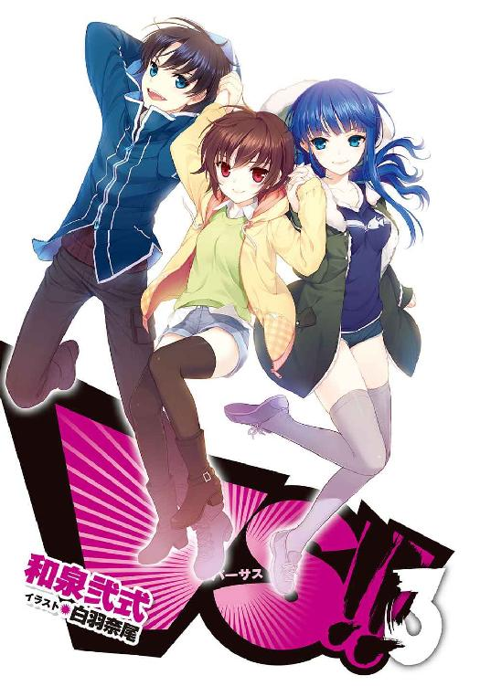
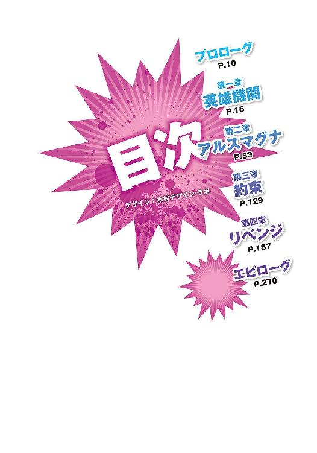
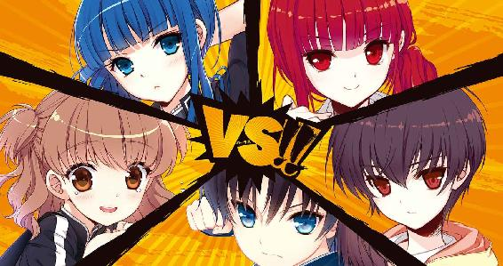
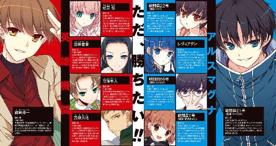
本書（電子版）に掲載されているコンテンツ（ソフトウェア／プログラム／データ／情報を含む）の著作権およびその他の権利は、すべて株式会社ＫＡＤＯＫＡＷＡおよび正当な権利を有する第三者に帰属しています。
法律の定めがある場合または権利者の明示的な承諾がある場合を除き、これらのコンテンツを複製・転載、改変・編集、翻案・翻訳、放送・出版、公衆送信（送信可能化を含む）・再配信、販売・頒布、貸与等に使用することはできません。
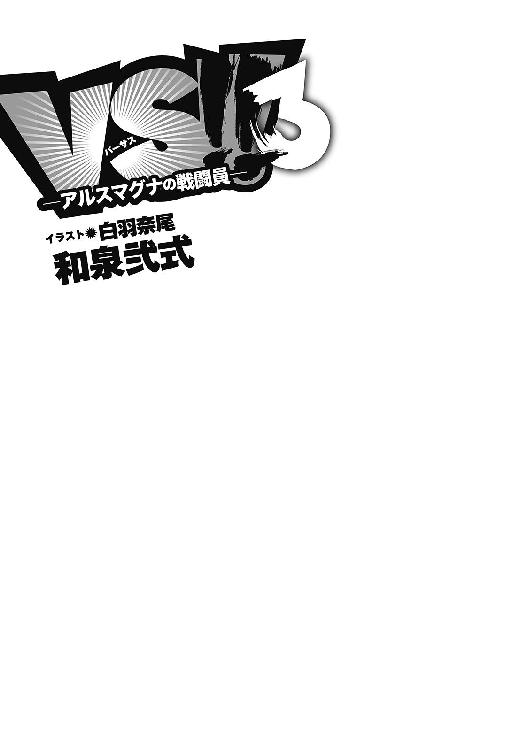
プロローグ
落雷のような激痛が頭蓋を貫き、彼は呻き声を上げた。
わけもわからないまま地面を引っ掻き、固い土を握り締める。何かを掴んでいなければ、意識が流されてしまいそうだった。
霞む視界に、木々を捉える。
森だ。
森の中にいる。
記憶の一端が蘇るが、なぜこんなところにいるのかは思い出せなかった。自分が誰なのかさえ不確かだ。
「ウ......ァ......！」
再び激痛が頭部を貫く。身を捩らせ、震える指で大地を削った。
何があった？
自身を取り戻すために、彼は必死に問いかける。このまま思い出すことができなければ、得体の知れない何かに心を喰われてしまうような気がした。
後方から声が聞こえたのは、そのときだ。
「驚いたな......。あれでも死なないのか」
「死なないっていうより、死ねないように見えるわね......。これ、いっそのこと死んだほうがマシなんじゃない？」
英雄たちの声。
それを聞いただけで、彼──戦闘員21号は、すべてを思い出した。
セカンドラボの出撃。
即撤退するはずだった戦いは、怪人レヴィアタンの救出作戦へと姿を変えた。仲間たちの足止めにより無事レヴィアタンを助け出したのも束の間、今度は21号が五人の英雄に追われることになったのだ。逃げ込んだ森の中でついに囲まれた彼は、〈疾風〉の特殊兵装【神風】によって頭部を撃ち抜かれ、死んだ。
死んだはずだった。
以前の戦いの後遺症である【異常再生】は、頭部を破壊されてなお、彼に死ぬことを許さなかった。全身が影に侵食されたかのように暗く変色している。消滅したはずの頭部は何事もなかったかのように修復され、そこには死の記憶だけが残った。幾度となく貫く激痛は、無茶な再生の振り戻しだろうか。自分は死んだはずだと、肉体の誤りを精神が正そうとしているのかもしれない。
21号は必死に意識を繋ぎ止めながら、英雄たちが何かを話し合っているのを聞いていた。
「この個体を捕獲しよう......アルスマグナのことを、今度こそ調べられるかもしれない」
抑揚の乏しい低い声。〈金剛〉を身に纏う黄瀬大地の言葉は、21号を指してのものだった。
頭部を貫く幻痛はますます鋭さを増し、満足に体を動かすこともできない。逃げることはできず、だからといって自らの意志で消滅することも21号にはできなかった。
英雄機関に捕獲される。もはや逃れようのない運命だった。
だが──。
苦痛にもがき苦しみながら、21号は笑う。
最良ではない。しかし、最悪でもない。
【異常再生】によって生き残れるかどうかが問題だった。その問題をクリアした時点で、21号は賭けに勝っている。
きっかけは、隊長室に残された戦闘記録だ。初期の戦いを記録したファイルに、英雄機関が過去に戦闘員を捕獲しようとしていたことが書かれていたのだ。
当時の捕獲計画は、数回の戦いを経たあとに打ち切られている。だが、英雄機関が捕獲計画を打ち切ったのは、目的を達したからではない。捕まえた戦闘員たちが全員自滅したからだ。ホムンクルスの体内には自滅するための器官があり、望みさえすればヒトよりもずっと簡単に死ぬことができる。次々と自滅していく戦闘員を目の当たりにした英雄たちは、やがて捕獲を諦めたようだった。
そんな英雄たちが【異常再生】の力を目にしたとき、何を考えるか。
あらかじめジジやミクニに話しておいた予測は、今、現実のものになろうとしていた。
そう、この状況は。
（想定内、だ......！）
意識を押し流そうとする死の記憶に抗い、21号は抉り取った土を握り締めた。
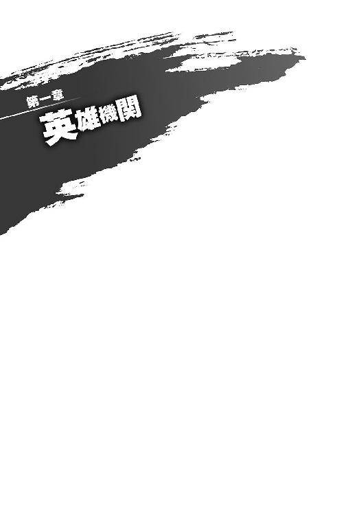
１
いつの間にか意識を失っていたらしい。
目を覚ますと、21号は見知らぬ部屋にいた。
一人でいるには広すぎる室内。清潔感に溢れた白い壁は、ここが地下基地ではないことを示している。
いったいどれくらいの時間が経ったのだろうか。
磨かれた床に、倒れている21号の輪郭がぼんやりと映っている。変身は解いていないため戦闘態のままだ。【異常再生】に伴う全身の変色はほとんど治まっていたが、通常時に比べるとまだわずかに暗さが残っているように見えた。
ふと、21号は床に映った自分の姿に違和感を覚えた。首のところに、白く硬質な何かが巻かれている。
──首輪？
手で触れようとして、21号は両手に枷をつけられていることに気がついた。見ると、足も拘束されている。これではまともに立ち上がることもできない。這って進むのが関の山だろう。
舌打ちをして、21号は体を転がして室内を見渡した。
窓がない部屋だった。出入口は正面にある大きなスライド式のドア一つだけ。当然、内側から開けることはできないだろう。静かで落ち着いた雰囲気の空間だが、この部屋は紛れもなく監獄だった。
そのとき、正面のドアがスライドし、二人の人間が中に入ってきた。
一人は英雄、姫宮桜。身に着けている薄桃色のワンピースは、デートのときに着ていたのと同じものだ。
もう一人の人間は、21号の知らない顔だった。
白衣を着た男がポケットに両手を突っ込み、姫宮の後ろについて歩いてくる。ぼさぼさのグレーの髪に、眼鏡越しに見えるブラウンの瞳。年齢は三十代半ばといったところだろうか。
（誰だ......？）
やがて二人は、床に這いつくばる21号の前で立ち止まった。白衣の男は仮面のような笑みを浮かべ、姫宮の肩越しに21号を見下ろしている。姿勢が悪いのか、あるいは癖なのか、首がやや横に傾いていて不気味な風体だった。
「やあ、おはよう。目覚めはどうだい？」
気さくな声は、どこか空々しく響いた。
姫宮桜は、その手に〈桜花〉の召喚カードを持っていた。おそらく、この男の護衛として来ているのだろう。
捕虜になった悪者らしく、21号は姫宮を睨もうとして──戸惑った。
彼女が悲しそうにしていたからだ。その瞳には彼女が悪を見つめるときの、あのまっすぐで力強い輝きがなかった。許されるのであれば目を逸らしたい、今の彼女からはそんな想いさえ感じられた。
「今日は提案に来たんだよ」
挨拶を返されなかったことが不服だったのか、白衣の男はため息混じりに言った。
「君、私たちに協力する気はないかい？ 君がアルスマグナの情報を提供してくれるなら、悪いようにはしない。悪の戦闘員が相手とはいえ、できることなら手荒な真似はしたくないんだよ。だって私たちは」白衣の男が微笑んだ。「正義の味方だからね」
姫宮のことが気にかかる。
しかし、21号が今するべきことは決まっていた。〈転移〉での逃走だ。ここで逃げようとしないのは、いくらなんでも不自然すぎる。
意識を集中させて21号は【ゲート】を探索し、すぐさま〈転移〉を開始した。
「......残念だよ」
全身を〈転移〉の闇が覆おうとした直前、男の声が聞こえ、首元でパチリと音がした。
「......ッ!?」
瞬間、視界が白く染まった。まるで閃光の中に放り込まれたかのように、すべてが白く塗りつぶされていく。
激痛が体中を駆け抜けた。
「ァ......！ ガァッ......アアアアアアアアアアアアアッ！」
鋭い痛みは剣で斬り刻まれているかのようだった。
白く染まった世界で、21号は四肢を斬り落とされ、体を貫かれ、頭部を串刺しに、そして首を撥ねられた────そう錯覚するほどの痛みが、終わりなく繰り返される。
不意に光が消えたとき、21号は変わらず白い壁に囲まれた監獄にいた。朦朧とする意識の中、かろうじて生きていることを認識する。
呻きながら顔を上げると、姫宮桜がそこにいた。目の前が霞み、そのせいで彼女がどんな顔をしているのかはわからない。
さきほどとは一転して、深い闇の中に意識が沈んでいく。
「そういえば自己紹介が遅れたね」
男の声は、ひどく落ち着いていた。
薄れゆく意識の中、21号はその名を聞いた。
「私はニコラ・フラメル。正義の味方──英雄機関の研究者さ」
２
戦闘員22号──ジジは、スズメの鳴き声に瞼を開けた。
リビングで正座したまま、窓のほうに目を向ける。オレンジ色のカーテンの向こうが明るくなっていた。いつの間にか朝になっていたらしい。
21号が捕獲されてから、半日以上が経過した。
彼からの連絡は、いまだない。
本当なら昨日のうちに〈通信〉が来るはずだった。出撃のたびに見せている〈転移〉や、それを応用した〈出現〉はともかく、目に見えない〈通信〉のことは英雄機関も知らないだろう。相手に気づかれずに連絡を取り合うことができると考えていた。
なのに、彼からの連絡はなかった。こちらから呼びかけても応答がない。
もしかしたら、彼はすでに────。
ジジは小さく首を振り、嫌な想像を振り払った。
仲間たちの前では、皆を落ち着かせるために冷静を装っていたが、本当は不安で仕方がなかった。
21号が捕獲されることは、確かに想定内だ。けれど、それはただ予想ができていたというだけで、決して安全だということではない。今この瞬間にも彼に危険が及んでいるかと思うと、胸が苦しかった。
再び瞼を閉じ、微かな声も聞き逃すまいと集中したが、いつまで待っても21号からの連絡は来なかった。
かわりに聞こえてきたのは、けたたましいベルの音だ。
ジリリリリリリリリリリリリリリ！
目覚まし時計。ジャバウォックに壊された後に買い換えたものだ。
ジジはため息をつくと、立ち上がり、ベッドに置いてある時計を叩いた。音がぴたりと止まる。
二段ベッドを見上げるが、そこに起こすべき彼はいない。
朝食をつくる気にもなれなかった。
気を紛らわせるためにテレビを点けると、ニュースで昨日の戦いが取り上げられていた。戦闘時の映像はなかったが、若い女性キャスターが英雄たちの勝利を伝えている。しばらくすると、次の話題に移った。
昨日のニュースや新聞と同じだ。戦闘員を捕獲したことについては、一切触れられなかった。
英雄機関は、21号のことを極秘に扱うようだった。過去にあった捕獲計画も、世間には秘匿されている。その理由について色々と想像を巡らせることはできるが、どれも推測の域を出なかった。ただ、英雄機関が事実を隠匿してくれるのなら、それはジジたちにとっても好都合だ。
テレビを消し、ジジは戦闘員の制服に着替えた。
この後、地下基地で作戦会議が予定されている。21号からの連絡がなかったことを仲間たちに伝えることになるだろう。皆を不安にさせないよう、できる限り落ち着いて話さなければならない。
ジジはゆっくりと深呼吸をし──そのとき耳の奥で、微かなノイズ音を聞いた。
チューニングがぴたりと合うような感覚が走る。〈通信〉だ。
『戦闘員21号から22号へ』
ずっと待ち続けていた声が、聞こえた。
『よう。聞こえるか、ジジ？』
飄々とした軽い声は、こちらを心配させないためだろう。
ここまで連絡がなかったのには何か理由があるはずだった。まったくの無事だとは思えない。
けれど、生きていた。21号が生きていた。
今はそれだけで十分だ。
『こちら戦闘員22号』
体中の力が抜け、ジジはいつの間にか座り込んでいた。
『......遅いですよ、ニーイチ』
†
アルスマグナ地下基地──第一階層。
石の壁に囲まれたエントランスに〈転移〉すると、ジジは壁際にあるカウンターテーブルのところへ向かった。
カウンターに座っていた受付嬢が一礼する。黒いドレスに映える彼女の色白な肌と、肩のあたりでウェーブする栗色の髪は作り物と見紛うほどになめらかだ。人形のように可憐な受付嬢は静かに上体を起こし、ガラス細工のように透き通った琥珀色の瞳でジジを見つめた。
「おはようございます、ジジ」
「おはようございます。戦闘員22号、21号の立ち入り許可をお願いいたします」
「かしこまりました」
二人分の申請を受付嬢は平然と承諾し、手元の端末を操作し始めた。
受付での管理を偽装すれば、捕まっているはずの21号も記録上では基地に出入りしていることになる。
21号が捕まったことを、幹部たちに知られるわけにはいかなかった。いくら想定内とはいえ、彼を捕虜にされたことが失態であることには違いない。組織の情報を英雄機関に奪われる危険がある以上、セカンドラボを率いるドクター・パラケルススは他の幹部たちから責任を問われることだろう。結果として、今すぐセカンドラボが廃止にされることも十分にありえる。
昨日、生き残った戦闘員たちには箝口令が敷かれた。どれほど親しいホムンクルスにも、21号捕獲の事実を漏らさないように、隊長である１号から厳命されたのだ。
ただ、あのときエントランスには、一人だけ他部署のホムンクルスがいた。今ジジの目の前にいる受付嬢だ。
ジジは、彼女に21号の入退場を偽装してほしいとお願いした。彼の捕獲を隠蔽する方法は、先の戦いで死んだことにするか、入退場を偽装するかのどちらかしかない。死亡扱いにすると彼が組織に戻ってくることができなくなる。できれば後者の手段を取りたかった。
気がかりは、受付嬢が頼みを聞いてくれるかどうかだった。けれど、普段あれほど21号に辛辣な彼女は、顔色一つ変えずにあっさりと了承してくれた。
目の前にいる受付嬢が、端末のディスプレイから顔を上げた。
「許可が下りました。どうぞ先へお進みください」
とても事務的な口調で彼女が告げる。21号のことについて無関心を装っているのだろう。
けれど、彼女も心配しているはずだった。
受付で彼女がジジに笑みを見せなかったのは、今日が初めてだ。
「ありがとうございます」
ジジは彼女にお礼を言うと「ニーイチは無事です」と呟いて、エレベーターに向かった。
21号と彼女の間に何があったのか、ジジは知らない。
ただ、二人が特別な関係であることは、背を向ける直前に受付嬢が見せた表情が物語っているような気がした。
†
エレベーターに乗り込み、ジジは第三階層に向かった。作戦室に行く前にミクニと話をすることになっていた。
「......その様子だと、とりあえず連絡は取れたみたいだね」
ジジを医務室に招き入れた彼女は、そう言ってデスクにペンを置いた。穏やかな口調とは裏腹に、振り向いたその表情は真剣だ。
少し前から21号は「英雄に捕まるかもしれない」とミクニに相談を持ちかけていた。21号が医療部の彼女になぜ相談したのか腑に落ちないところもあったが、これまでの話を聞く限り、確かに彼女の指摘や助言は的を射ていた。今回のことも、隊長ちゃんの許可を取って彼女には事実を伝えてある。
「状況はどう？」
「好ましくはありません」
ジジは、〈通信〉で21号から聞いた情報を説明した。
窓のない部屋、手足の拘束、奇妙な首輪。そして、〈転移〉が妨害されたこと。
「......その首輪だろうね」
ミクニが言った。
「たぶん〈転移〉をするときの何かに反応して、自動的に作動するようになっているんだ。当然、手動でも使えるだろうし......。こっちから助けに行きたいところだけど、持たせておいたゲートは使っちゃったんだろう？」
「はい。レヴィアタンを助けるときに......」
英雄に殺されかけたレヴィアタンの前に戦闘員たちが〈転移〉できたのは、あの場に21号が【ゲート】を配置したからだ。あのとき使ったゲートのビンは、捕まったときのために隠し持っていたものだった。あれがない以上、ジジたちが21号のところに〈転移〉することはできない。
「とにかく、21号がどこにいるのかをはっきりさせないとね」
ミクニが椅子の背もたれに寄りかかる。
「21号は英雄機関の本部に捕まっているはずだ。戦闘員の存在を隠しておくんだったら、自分の腹の中に入れておくのが安心だろう。問題は、今の本部がどこにあるかだ」
「はい」
ミクニの言葉にジジも頷く。
英雄機関がアルスマグナの地下基地を発見できていないのと同じく、アルスマグナもまた、英雄機関本部を突き止めることができていなかった。
以前、21号が人間として英雄機関に捕まったときも、本部に連行される際には場所がわからないように目隠しをさせられたらしい。電子機器等のチェックも受けたらしく、もし彼が発信機を持って捕まっていたなら、戻ってくることはできなかったかもしれない。
だが、これまで英雄機関の本部を見つけられなかった最大の要因は、そもそも彼らが『唯一の本拠地』を持たないためだ。
機関の戦力となる【鎧】は、それ単体でレコードスフィアの探知や戦闘を可能とする、独立型のシステムとして設計されている。鎧を持つ英雄たちさえいれば、どこであれ彼らの本拠地になりえるということだ。英雄機関はその特性を利用して、定期的に本部となる拠点を変更し、こちらに場所を特定されないようにしていた。
とはいえ、鎧の研究開発やオペレーションを行うには、相応の設備が必要になる。現在の本部は間違いなく存在し、そこに21号もいるはずだ。
ジジは言った。
「21号から付近にあるゲートを聞いて、そこから現在位置の推定を行おうと思います。一度では難しいかもしれませんが、ゲートの配置を変化させて何度か情報を聞けば、ある程度位置を絞り込めるはずです。あとは諜報部の集めた情報から拠点を特定できるかと」
「なるほど。うん、それはいい考えだ。けど、もし場所がわかったとしても、先走ったら駄目だよ」
「わかっています。ニーイチも、しばらくは動かずに様子を見るそうです」
今回のことは、英雄機関からただ逃げるだけでは駄目だ。本部にある情報を手に入れ、英雄たちを倒す手掛かりを見つけなければ、わざわざ危険を冒してまで捕まった意味がない。
そのことは、十分理解しているつもりだった。
「大丈夫」
ミクニの穏やかな声に、ジジは知らずにうつむいていた顔を上げた。
「英雄機関にしてみれば、21号は貴重な情報源だ。あまり無茶なことはしないだろう。それに、異常再生を持っているあいつなら、当分はサプリメントを飲まなくても生きていられるはずだ。あのサプリメントはもともと、あんたたちの体を健康な状態に再生させるものだからね」
「ですが......」
不安だった。
21号が英雄機関に何をされるかわからない。
尋問、拷問、実験。苦痛を与えられることもあるだろう。異常再生でいくら肉体の消耗をごまかそうと、精神は間違いなくすり減っていく。できる限り早く助け出してあげたいというのが、ジジの正直な想いだった。
「ファーストラボの幹部たちにいつまで隠していられるかもわかりません。それに......ドクター・パラケルススがどう出るかも気になります」
「え？」
どうしてかミクニが意外そうな顔をした。
「どうかしましたか、ミクニ先生？」
「いいや、なんでもない。それで、ドクター・パラケルススがどうしたって？」
「今回のことは、すべて私たちの独断です。隊長から話がいっているはずですが、勝手に行動したことで怒りを買うのではないかと......」
「まあ、大丈夫じゃない？」
「え？」
あまりにもあっさりとした彼女の言葉に、ジジは驚いた。
「どうしてわかるのですか？」
「いくらなんでも、それくらいじゃ怒らないよ。心配しなくても大丈夫」
苦笑交じりにそう言うミクニは、なんだかやけに確信を持っているようだった。もしかしたら、ドクター・パラケルスス本人に会ったことがあるのかもしれない。
ドクター・パラケルスス──ホムンクルスと怪人を生み出した天才的な研究者。
戦闘員であるジジは、パラケルススがどんな人物なのか知らない。定期的に連絡を取り合っている隊長も、直接顔を合わせたことはないと言っていた。唯一、怪人のレヴィアタンだけは面識があるはずだが、彼女がそのことについて詳しく話してくれたことはない。おそらく口止めされているのだろう。
「そういえば......」
ふと、ジジは今朝21号から聞いた話を思い出した。
彼の前に現れた一人の研究者のことだ。
「ミクニ先生。英雄機関の研究者で、『ニコラ・フラメル』という人物を知りませんか？」
「ニコラ？」
ミクニが目を丸くする。あまり期待せずに訊いたのだが、予想以上の反応だった。
「ちょっと待って、22号。どうしてそいつの名前が出てくるんだ？」
「昨日、自らをそう名乗る人間が、ニーイチのところに来たそうです。知っているんですか？」
「......21号に伝えてあげるといい。大物が食いついたぞってね」
ミクニが口の端を吊り上げる。
それは、これまで彼女が見せたことのない、邪悪と形容すべき笑みだった。
「ニコラ・フラメル──そいつは、【鎧】を創った張本人だよ」
３
英雄機関本部──戦士待機室。
戦闘員の絶叫がスピーカーを通して室内に響き渡っていた。
壁に取り付けられた巨大ディスプレイに、姫宮桜が昨日立ち会った光景が映し出されている。監視カメラの記録映像だ。
絶叫はやがて収まり、画面の中の戦闘員も糸が切れたように動かなくなった。
「と......まあ、こんなふうに」口を開いたのは、白衣を着たニコラ博士だった。「彼らの空間転移は、途中で苦痛を与えることで防ぐことができる」
ディスプレイの近くに立つ彼は、その手に持った白い輪を見せびらかすように掲げると、まるで講義でもするかのように、椅子やソファに腰掛けている緋崎たちに話し始めた。
「この首輪には彼らの空間転移を検知するセンサが入っている。転移をしようとすれば、自動で苦痛を与える仕組みだ。もちろん、手動で起動することもできる。出力は高く設定してあるから、何度か痛めつければ逆らうこともなくなるはずだ。そのあたりは動物のしつけと同じだよ」
そう言って、ニコラ博士は薄く笑った。
ニコラ・フラメル──過去に得たレコードスフィアの情報を正確に理解し、【鎧】を創り出した研究者。優秀な科学者が集められている英雄機関の中で、ただ一人「天才」と呼ばれる人間だった。
以前にも何度か顔を合わせたことがあるが、正直に言えば、桜は彼のことが苦手だった。おどけているようで落ち着いた声。仮面のような薄い笑み。目の前にいるはずなのに、ずっと上から観察されているような、どこか現実感の欠けた雰囲気が彼にはある。
昨日、戦闘員がもがき苦しむ姿を前にしても彼は動揺しなかった。今だって、まるで実験結果を述べるかのように落ち着いて解説している。そんな彼への違和感は膨れ上がるばかりだった。
「緋崎君。神原司令から話は聞いているね？」
ニコラ博士の呼びかけと同時に戦闘員を映していた記録映像が途切れ、ディスプレイが暗くなった。画面を見つめたままだった緋崎が振り返る。
「......はい。すべてあなたに任せるように、と」
ニコラ博士が微笑んだ。
「アレは貴重な実験体だ。人工生命体というオーバーテクノロジーに、あの異常な再生能力。実に興味深いよ。アルスマグナの情報を聞き出すことも大切だけど、彼らの体を解明することも同じように重要だ。そのあたり、神原司令はよくわかってくれている」
そして、ここからが本題のようだった。
「今日からしばらく、彼の体を調べさせてもらう。ただ、戦闘員を調べるときは君たちを護衛につけるようにと、司令から命令されていてね。それをお願いしたいんだ。といっても、実験中、被験体はしっかりと拘束するし、この首輪もある。君たちは万が一のときに動けるよう、本部にいてくれればいい。たとえば、常に数人はこの部屋で待機する、とかね」
「ま、待ってください！」
桜は思わず立ち上がった。
「その場には立ち会えないということですか？」
「もちろん。部外者がいると集中できないからね」
博士の穏やかな笑みが、桜には恐ろしかった。彼の口振りは、【正義の味方】が見てはいけない何かがそこにあると、言っているかのようだった。
「......危険です。それでは護衛の意味がありません」
「問題ないよ。司令は説得済みさ」
「司令が？ でも...‥！」
「どうだろう、緋崎君？ 頼まれてくれるかな？」
ニコラ博士は桜を無視し、再び緋崎に向き直った。
緋崎はしばらく彼を見つめていたが、やがてただ一言「わかりました」とだけ答えた。
博士が満足気に頷く。
「ありがとう、助かるよ。それじゃあ、詳しいことは今日中に連絡させる」
もう話すことはないと言わんばかりに、ニコラ博士はさっさと待機室を出ていった。横にスライドしたドアが再び閉まる。
わずかな沈黙の後、
「「むかつくっ！」」
青葉と隼人が同時に叫んだ。二人して苦虫を噛み潰したような顔をしている。
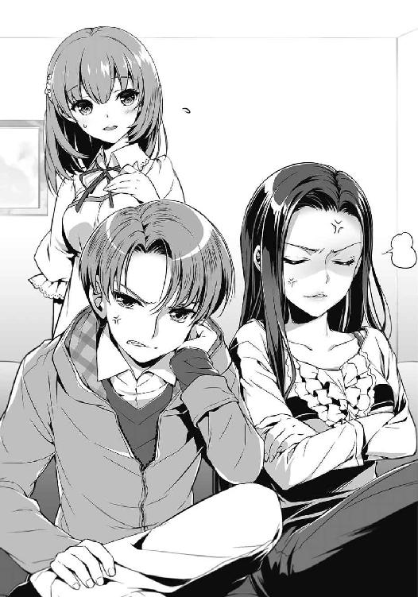
「ちょっと、シュウ。ほんとにあの悪趣味な奴に付き合うわけ？ さっさと戦闘員からアルスマグナのこと聞き出して、あいつらの本拠地を叩いたほうが早くない？」
緋崎は一瞬だけ言葉を詰まらせたが、すぐに答えた。
「司令の許可も出ているんだ......博士は実験をやめようとしないさ。だったら、放っておくわけにもいかない。それに──」
「戦闘員を調べることに意味があるというのも、確かだ......」
ソファに腰掛けた黄瀬がぼそりと言葉を継いだ。いつの間にか文庫本を読み始めている。
「奴らはいつも空間転移でレコードスフィアの出現地点に現れている。体を調べることで転移の仕組みがわかれば、アルスマグナの本拠地がわかる可能性もあるだろう......」
「むぅ～」
青葉が唇を尖らせる。納得がいかないようだった。
一方の隼人は、不安そうにしていた。ニコラ博士のことよりも、あの戦闘員のことを考えているのかもしれない。
黄瀬が戦闘員の捕獲を提案したとき、隼人だけは最後まで反対し、何としてもここで倒すべきだと主張した。しかし、司令の神原から捕獲命令が出されたために、やむなく従うことになったのだ。そのことが今でも隼人の心残りになっているらしかった。
けれど、桜は安堵していた。あの戦闘員を殺さずに済んだことを、心の底から。
彼は守るために戦っていた。仲間を逃がすために、怪人を救うために、自らの命を懸けて、戦っていたのだ。
幼い桜を守って死んだ、両親のように。
「博士たちは何をするつもりなんでしょうか......？」
思わず呟いていた。
「『実験』......それ以上のことは教えてもらえなかった」
緋崎が答え、ディスプレイに目を向けた。画面を見つめる彼の横顔は真剣だった。さきほどの映像を──もがき苦しむ戦闘員の姿を思い出しているのかもしれない。
桜は目を伏せる。
彼女に博士のことを非難する資格はなかった。
英雄として。正義の味方として。仲間たちと共に多くの戦闘員と怪人を消滅させてきた。彼らに対して与えてきた苦痛なら、桜のほうがずっと上だ。何を言うにも、もう遅すぎる。
けれど──。
桜は椅子から立ち上がり、ドアに向かって歩き出す。
「桜さん？」
「姫宮、どこに行くんだ？」
「博士のところです」
「ちょっと。変なこと考えてないでしょうね？」
青葉が心配そうにしていた。滅多なことでは本から目を離さない黄瀬も、顔を上げて桜のことを見つめている。
桜は思わず微笑んだ。皆が仲間で良かったと思う。
「もう一度あの戦闘員と会わせてほしいって、お願いをしてきます。私......彼と話がしたいんです」
ただのわがままだとわかっていながら、桜は仲間たちにそう言った。
４
21号は、撤収される機材の音で目を覚ました。
室内に並べられていた奇妙な機械や手術台が、次々と廊下に運び出されていく。白い壁に囲まれた監獄は、たった一人の戦闘員を閉じ込めるには広すぎると思っていたが、それは彼らの言う『実験』を、この場で行うためらしかった。
手足を拘束された体は痺れたように動かず、頭はずきずきと痛んだ。部屋に乗り込んできた研究者たちに抵抗しようとして、首輪を起動されたことを思い出す。その後も何度か激痛に襲われ、気絶と覚醒を繰り返したような気がするが、何をされたのか記憶は曖昧だった。
すべての機材が運び出されると、部屋には床に倒れた21号と、こちらを見下ろす白衣の男だけが残った。ジジから知らされた事実を思い出し、21号は彼を睨みつける。
ニコラ・フラメル。五つの鎧を創った男。
「次からは暴れないでくれると嬉しいね。言っただろう？ 大人しくしていれば、悪いようにしない。とりあえず今のうちはね」
ニコラは穏やかな口調で話しかけてくる。21号は何も言わない。
「それにしても、まいったよ。君の再生力は凄まじいの一言だ。切った先から治っていくんだから、解剖することもままならない。おかげで方針から練り直しさ」
口振りとは裏腹に彼の口元には薄い笑みが浮かび、ブラウンの瞳は好奇心で輝いていた。今日の成果を話したくて仕方がない様子で「面白いことがあったんだ」と切り出した。
「解剖ができなかったから、仕方なく細胞のサンプルだけでも採取しようとしたんだけど、皮膚から取ったそれは跡形もなく消えてしまってね」
それも21号の計算のうちだった。
以前、21号が黒野双一として英雄機関の検査を受けたときは、ミクニからもらった薬を服用していた。ホムンクルスの体を人間のそれに限りなく近づけるもので、もともとは諜報部が使用している薬だ。だが、戦闘態であり、なおかつ薬を飲んでもいない今は、ニコラが言ったようにサンプルの採取は困難だろう。
「それならと思って、今度は手首ごと斬り落としてみた」
さらりと言ったニコラに、21号は目を瞠った。どうやらこの男の『手荒な真似はしたくない』というのは、悪の戦闘員には考慮されても、実験体に対しては無視されるルールらしい。
「だけど、斬った手首は宙に溶け、君の手は再生した。不思議だろう？ ここで興味深いのは、斬り落とした手からは再生しなかったということなんだ。体の一方が消え、一方が残った。そうなると、当然の疑問が出てくる。切り離したのが手ではなく、腕だったらどうなるのか。腕ではなく、足だったら。足ではなく、首だったら。体を半分にしたら？ もし、同じように片方だけが残るとしたら、その差はいったいなんだろう？」
21号は何も言わない。
まったく同じ話を、ミクニから聞いたことがあった。医務室で診察を受けているとき、彼女はホムンクルスの再生能力について話してくれたのだ。
「これは仮説だけど」
そして今、同じように、ニコラが話す。
「君たちの体には、どこか一箇所、核となる部分がある。体が切り離されたとき、その核があるほうだけに再生力が働き、ないほうは消えてなくなるという理屈だ。皮膚や手首には核がなかった。だから消滅した。では、核はどこにあるのか？ おそらく、ここだ」
彼は自分の左胸を叩いた。
「レントゲンで調べてみたら、君の体も構成は人間に近かった。基本的な器官は人間のものを模擬しているみたいだね。その中に核となる部位があるとしたら、妥当なのは、脳か心臓。頭部を破壊されたとき体の方から再生したことを考慮すると、最も可能性が高いのは、心臓だ」
21号は内心で驚いていた。
わずかな手がかりと直感によって導き出されたニコラの仮説は、ミクニが話していた内容を見事に言い当てていた。
「さっきも言ったとおり、ただの仮説だ。けど、もし核といえる部分があったとして、そこを破壊されたら君はどうなるんだろうね？ 再生できるのかな？」
鎧の創造者が口元を吊り上げる。脅しではなく純粋な好奇心。得体の知れないところがこの男にはあった。
そのとき、ドアがスライドして開いた。
「そうそう」ニコラが振り返らずに言う。「君に来客だ」
部屋に入ってきた少女を見て、21号は息を飲んだ。
姫宮桜。
英雄である少女が、真剣な表情で21号たちのところへ歩いてきた。
「......博士」
姫宮は、短い言葉と視線だけで用件を伝えたらしかった。
「わかってる、すぐに出るよ。二人で話すといい」
ニコラはもう一度21号に目をやり、薄く笑うと、姫宮の横を通り過ぎた。外で待機していた研究者がドアを開け、ニコラはまっすぐ延びる廊下へ姿を消した。
「こんにちは」
再びドアが閉まると、姫宮が表情を緩めて言った。
「あの......ご、拷問とかしに来たわけじゃないんです」
だろうな、と21号は心の中で返答する。
彼女にそんな真似ができるとは思えなかった。
「訊きたいことがあるんです。......いいですか？」
「......」
捕虜に同意を求められても困る。そう言おうとして、やめておいた。
この部屋は監視されているはずだ。英雄と戦闘員の会話なんて、英雄機関にとってはそれこそ貴重なデータだろう。
それなら、何も喋らないのが正解だ。
無言を貫いていると、姫宮がスカートを押さえて、床に腰を下ろした。戦闘員から数メートルと離れていない、その場所に。
彼女は言った。
「教えてください。あなたは──どうして戦っているんですか？」
何を訊かれているのか、21号には理解できなかった。アルスマグナのことを問われるのだとばかり思っていた。
こちらを見つめる彼女の瞳が、弱々しく揺れている。21号の視線は、知らずその瞳に釘付けになっていた。
「理由なんてないんだと思っていました。何も考えずに悪を為す。それが、悪の組織の戦闘員や怪人なんだって、私はずっと思っていたんです。ですけど......この前、あなたたちは明らかに怪人を守るために戦っていました。私が思っていた......信じ込もうとしていた戦闘員と、本当のあなたたちが違うことに、ようやく気がついたんです」
悪の戦闘員を前に、正義の味方がとうとうと話す。
21号は、何も言わず、ただ彼女のことを見つめていた。
「あなたたちは、意志を持って戦っている。意志を持って悪を為している。守るために戦えるあなたたちが......。その理由が、どうしてもわからないんです」
21号は答えない。
「私は人々を守るために戦ってきました。守るために、あなたたちを倒してきました。戦闘員さん......あなたはなんのために戦っているんですか？ 私たちを倒したその先に、いったい何があるんですか？」
なんのために。
それは、あまり考えたことのない問いだった。
創られたそのときから、21号の目の前には果たすべき使命があった。
組織が命じるままに戦う。それがどんな未来に繋がっているのかはわからない。使い捨てのホムンクルスであり、組織の駒である21号には、幹部たちの意志など知る必要がなかった。
幹部たちの掲げる世界征服なんて野望も、実際どこまで本気なのかは疑問が残る。だが、戦いの結果として人間たちが恐怖しようと、アルスマグナに服従することになろうと、21号にはどうでもいいことだった。
しかし。
英雄機関は正義を為すために戦い、アルスマグナは悪を為すために戦っている。彼らなりの目的を持って戦っている。
その中にあって21号たちは、アルスマグナが野望を達成するための駒でしかない。
戦うために生まれ、戦うために生き、戦うために戦う。
それが【戦闘員】の本質だ。
必死になって英雄を倒したところで、もしかしたら、その先には何もないのかもしれなかった。
「......」
21号は、何も言わない。
床に這いつくばり、傍らに座る英雄を──姫宮桜を見上げていた。
悪の戦闘員と正義の味方。沈黙に包まれた部屋の中で、二人は何も言わずに見つめ合う。
刻々と時間だけが過ぎていき──。
やがて姫宮は、悲しげに目を伏せ、静かに部屋を出ていった。
５
捕獲されてから一週間が経過した。
ニコラたちの実験は、あれから毎日続けられている。
手足の枷と首輪は、相変わらず21号の自由を縛り続けていた。当初は研究者たちが現れるたびに抵抗の意志を見せていた21号だったが、首輪によって激痛を与え続けられるうちに、いつしか吠えることさえしなくなった。
実験と併行して尋問も受けた。幾度となく激痛のショックで気を失うことになったが、21号は今も無言を貫いている。
『戦闘員22号から21号へ』
朦朧としていた意識が、ジジの涼やかな声で覚醒する。
英雄機関に知られていない〈通信〉も、何がきっかけでバレるかわからない。そのため、使用は必要なときのみに限ることにしていた。連絡があったということは何か進展があったということだ。
21号は意識を集中させ、できる限り明るく答えた。
『こちら戦闘員21号。どうした？』
『あなたの居場所がわかりました』
ジジの声が返ってくる。
『Ｋ区に英雄機関の拠点と思われる高層ビルがあります。登録上はセキュリティ会社のものとなっていますが、会社に実体がありません。諜報部経由で建物の見取り図を手に入れましたが、地下にあなたの説明と一致する空間があります。おそらく、間違いないかと』
『よし。これでだいたい情報は揃ったな。餌には大物がかかってるし、本部なら機密情報も山ほどある。あとは作戦を練るだけだ』
ここを脱出し、なおかつ英雄機関の最高機密──【鎧】の情報を手に入れる作戦を。
『問題は、英雄たちですね』
『ああ』
本部である以上、ここには彼らがいる。戦闘員が下手に乗り込んでも、返り討ちに遭う可能性が高い。
唯一対抗できるとすれば、それは戦闘員ではなく怪人だろう。
『なあ、あいつはどうしてる？』
それが誰を指しているのか、名前を言わずともジジはわかったようだった。
『強くなっていますよ』
彼女の声は穏やかだった。
『今も訓練場で特訓しています。最近では、彼女のほうが私たちを鍛えるようにもなりました』
『あいつが戦闘員を？』
『はい』
『きっきっき。そりゃいいや』
大声を上げて笑いたかったが、監視カメラのことを考えて我慢した。
『ですが、さすがに英雄を相手にするというのは......厳しいです』
『真っ向からいったら駄目だろうな。ま、そっちは策がないわけじゃない。前に言っておいただろ？』
『ですが、あれは──』
しばらくの間、21号はジジと作戦について話し合った。
彼女は21号の策を避けたがっているようだったが、最終的には隊長ちゃんと相談をするということで落ち着いた。
『それでは、また連絡します』
『ああ。じゃあ、隊長ちゃんたちにもよろしくな』
普段なら、ここで〈通信〉が切れる。しかし、今日はしばらく待っても彼女と繋がっている感覚が残っていた。
『ジジ？』
『...‥これほど長く、あなたと顔を合わさないのは初めてですね』
彼女が言った。
『なんだか、部屋がとても広く感じます』
彼女は同室の戦闘員がいなくなったことがない。同じ部屋に住んでいる21号が、生き残るためだけに戦ってきたからだ。毎日部屋に自分しかいない......というのは初めてのことだろう。
だが、すぐに慣れる。21号はそのことを知っていたが、あえて軽い調子で答えた。
『なんだよ、ジジ。オレがいなくてそんなに寂しいのか？』
『............馬鹿なことを言わないでください』
『冗談だ、冗談。怒んなって』
むっとするジジがおかしくて、21号は笑いを堪えるのが大変だった。
『ニーイチ』
不意に聞こえてきたその声は、凜としていて、確かな決意を感じさせた。
『必ず助け出します。待っていてください』
そして、〈通信〉が途切れる。
彼女の声はもう聞こえない。
「......ああ、待ってるぜ」
再び白い監獄に取り残された21号は、監視カメラに音声を拾われないように小さくそう呟いた。
６
21号との〈通信〉を終えたジジは、マンションの部屋から地下基地に〈転移〉した。訓練場にいる皆に色々と伝えなければならない。
受付で登録を済ませ、エレベーターで第五階層まで下りた。
フロアの中心を、ガラスでぐるりと囲まれた巨大な空洞が貫いている。ジジはその奥底を覗き込み、ゆるやかに明滅する八十一個のフラスコを眺めながら21号のことを考えた。
声こそ明るかったが、〈通信〉のラグやノイズはごまかせない。彼は消耗していた。しかし、それを指摘したところで仕方がなかった。今するべきことは、21号を助け出し、なおかつ英雄機関から情報を奪い取る作戦を考えることだ。
「ジジさん」
呼ばれた声に振り返ると、戦闘員１号──隊長ちゃんがそこにいた。彼女も訓練場に向かうところらしかった。
「隊長。さっき、ニーイチと作戦について少し話しました」
ジジは隊長ちゃんと並んで歩き、21号と話し合った作戦を説明した。
問題となるのは、やはり本部にいる英雄をどうするかだ。21号が言っていた策は、あらかじめ隊長ちゃんにも伝えてあった。
「隊長はどう思いますか？」
「......わたしも、ししょーの言う方法しかないと思います」
彼女は言った。
きっと、その言葉の意味するところも十分に理解して。
「ししょーなら大丈夫ですよ。信じましょう」
「......隊長は強いですね」
「わたしは隊長ですから！ 不安そうにしていたら、ししょーに怒られてしまいます」
隊長ちゃんがにっこりと笑う。明るい笑顔に励まされ、ジジも不安がいくらか和らいだ。
「隊長。ニーイチの居場所がわかったことを、皆にはまだ伝えていません。隊長から言っていただいてもいいですか？」
「はい。そのくらいお安いご用です！」
訓練場の前に辿り着く。
両開きの扉を押し開けて、隊長ちゃんは元気に叫んだ。
「皆さん！ ししょーの居場所がわかりましたよーっ！」
「ぎゃあああああああああああああああああ！」
室内に足を踏み入れたジジが目にしたのは、十人以上の戦闘員が吹き飛ばされて、宙を舞う瞬間だった。彼らはそのまま地面に落下し、入り口前にいるジジたちの足元まで転がってきた。
びしょびしょになった戦闘員たちだった。
部屋には他にも大勢の仲間がいたが、そのほとんどが疲れきって床に倒れ込んでいた。
「ジ......ジジ、隊長ちゃん......」
吹き飛ばされてきた戦闘員の一人が、呻きながら顔を上げた。ジジは生体反応を読み取り、それが誰なのかを判別する。
戦闘員66号──ロクロクだった。
「......大丈夫ですか？」
「こ、この程度、なんてことはない！ それより隊長ちゃん、今の話は本当か？」
「は、はい！ Ｋ区に英雄機関の本部があるそうです。ししょーはそこに閉じ込められているみたいで──」
すると、
「ふーん」
さも興味のなさそうな声が、訓練場の中央から聞こえてきた。
そこにいるのは、青い髪の少女だ。
少女の肢体はサファイアのような鱗に覆われ、その背にある翼と相まって高潔な竜を連想させた。鋭い美貌を放ち、腰に手を当て立っている彼女の周囲には、いくつもの水の弾がふわふわと浮いている。
「それじゃあ、ようやく私の出番ってこと？」
セカンドラボ最後の怪人──レヴィアタンが、楽しげに口元を緩ませた。
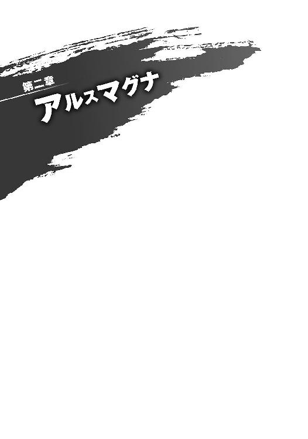
１
姫宮桜は、テーブルの上に乗せた腕から、ゆっくりと顔を上げた。
「............ん......」
どうやら眠っていたらしい。
ぼんやりとした思考のまま、寝ぼけ眼をこすり、桜はここが戦士待機室であることに気がついた。
「起きたか」
振り返ると、ソファに座る黄瀬が文庫本を読んでいた。
そこでようやく、桜は今が任務中であることを思い出した。
「す、すみません！ 私、いつから......」
「おれが席を外したときだ」
文庫本を読みながら黄瀬が答えた。
「戻ってきたときには眠っていた。三十分程度だろう」
「三十分も？」
「問題ない。何かあったときに眠そうにされるよりはマシだ」
「すみません......」
「寝不足か？」
顔を赤くする桜に、黄瀬が訊いた。相変わらず、本に視線を落としたままだ。
黄瀬は息を吸うように本を読む。ともすれば人の話を聞いていないようにも見えるが、彼にとっては、それが自然なことらしかった。出会って間もない頃は桜も戸惑ったが、今ではすっかり慣れていた。
「実は、最近あまり眠れなくて......」
戦闘員を捕まえてから、二十日間が経過した。
桜は戦闘員と話そうとした日のことを思い出す。あれ以来、桜は彼を目にしていない。総司令である神原から、もう会うなと命じられていた。
あの戦闘員は、今も地下で『実験』を受けているのだろうか。
そう思うと、どうしても胸が苦しくなる。そんなことを思う資格がないことはわかっているのに。
「あの戦闘員のことなら、考えないほうがいい......」
桜の想いを見透かすように、黄瀬が言った。
「アルスマグナの戦闘員である以上、悪であることには変わりない」
「ですけど、彼らは──」
「姫宮」
黄瀬が本から顔を上げた。彼の厳しい目が、桜を射貫く。
「下手な感情を持つな。命取りになるぞ」
黄瀬の言うことは、正しい。
相手に対する同情は、戦いにおいて致命的な隙になる。
正義の味方は負けることが許されない。悪に対して、容易く隙を見せるなどあってはならないことだった。
けれど──。
本当に、それでいいのだろうか。
漠然とした問いかけが頭の中を巡っていた。胸の痛みが収まらない。
「黄瀬さんは......」
「なんだ」
桜は目を伏せ、彼に訊く。
「黄瀬さんは、どうして戦っているんですか？」
「そうあるべきだからだ」
彼は即答した。
「だから、おれは戦っている」
それだけで、すべてを語り尽くしたらしかった。
彼も、緋崎や青葉と同じ英雄機関の初期メンバーだ。当初は鎧が開発途上だったこともあり、それこそ命を落としかねない厳しい戦いが多かったと聞いている。そんな状況であっても『誰かが戦わなければならない』ということを、彼は身を以て知っているのかもしれない。
「......手遅れかもしれないが、もう一つ忠告しておく」
不意に黄瀬が言った。
「忠告、ですか？」
「お前に元気がないと、青葉の奴が何かを企むぞ......」
「青葉さんが？」
噂をすれば影、というのだろうか。
待機室のドアがスライドし、草薙青葉が部屋に入ってきた。
「いたいた、桜！」
にこやかな笑顔を振りまきながら、彼女は桜の前にやってくる。
「出かけるわよ」
テーブルに手をつき、彼女が言った。
「え？」
「大地。桜、連れてくから。あとよろしく」
「ちょ、ちょっと待ってください！ 今、任務中──」
「居眠りしていたがな」
「黄瀬さんっ！」
言わないでほしかった。
「大丈夫よ。他の二人もそろそろ戻ってくるし。こんな部屋に閉じこもってたら気が滅入っちゃうでしょ？ たまには気分転換しなくちゃ」
「青葉さんのは『たまに』じゃ......。それにどこに行くんですか？ きゃっ!?」
「それは着いてのお楽しみってね」
桜の腕を取り、青葉がにっこり笑った。
半ば強引に連行されていく。助けを求めて黄瀬を見たが、彼はもう文庫本に目を向けていた。
「き、黄瀬さ～ん！」
廊下に連れ出されてドアが閉まる直前、黄瀬が本のページをめくるのが見えた。
†
一時間後。
桜は、とあるマンションの部屋の前に立っていた。ここに来るまで青葉が目的地を教えてくれなかった理由が、ようやくわかった気がした。
閑静な住宅街に建つマンション。
部屋番号は四〇四。
表札には、はっきり『黒野』と書いてある。
「あ......青葉さん？」
隣を見ると、青葉がにんまりとした笑みを浮かべていた。
「どーせ桜のことだから、この前のデートからあいつと会ってないんでしょ？」
「会ってない......です......けど......」
臨海公園で黒野双一とデート──のようなものをしてから、一ヶ月以上経っている。
少し前に、青葉から彼の住所と連絡先を渡された。勇気を振り絞って何度か電話をかけてみたけれど、黒野や彼の妹が出ることはなく、受話器からはコール音が聞こえてくるばかりだった。タイミングが悪かったのかもしれないと思っているうちに、ずるずると時間が過ぎてしまった。
「デートのとき、あいつに助けられたでしょ？ ちゃんとお礼を言わなくちゃ駄目じゃない」
「それは......でも、いきなり家に押しかけるなんて」
ピンポーン。
気がついたときには、青葉がインターホンを押していた。
「青葉さんっ!?」
「慌てすぎだってば。アルスマグナと戦うときみたいに堂々としてればいいのよ」
「無理ですっ！」
がちゃり、と音がして、桜はびくりと身を震わせた。
慌ててドアのほうに向き直る。
しかし、ドアを開けて出てきたのは黒野双一ではなく、彼の妹──黒野鈴だった。ライトイエローのＴシャツを着た彼女は、突然英雄が現れたことに驚いているようだった。
「こ、こんにちは」
慌てて桜は挨拶をしたが、鈴は不思議そうに首を傾げた。
「......何か？」
何か、と訊かれても、なんでしょう、と答えたくなる。
「青──」
振り返ると、ここに連れてきた張本人はすでにいなかった。
「──葉......さん......」
「姫宮さん？」
鈴の声の怪訝さが増していた。
桜は弾かれるように振り向いた。
「ごめんなさい、急に押しかけて。でも、なんでもないですから！ 気にしないでください......！ えっと、私──」
──帰ります！
そう叫んでその場から逃げ出そうとした桜は、
「どうぞ」
黒野鈴の涼やかな声に、引き止められた。
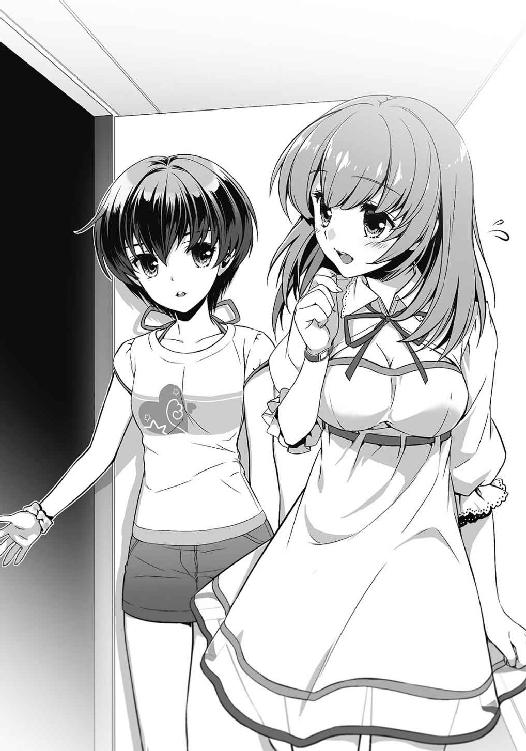
今度は桜が首を傾げる番だった。
「あの......？」
「どうぞ上がってください」
黒髪の少女は、表情を変えずにそう言った。
２
アルスマグナ地下基地──第七階層。
幹部たちの集まる会議室に、ドクター・パラケルススはいた。
「我々と英雄機関が最初に相まみえてから、すでに二年以上が経過した。英雄たちとの戦いも決着の頃合いだろう......」
黒衣の老人──プロフェッサー・ヘルメスが、円卓を囲む十二人の幹部たちに告げる。
彼の傍らには、一匹の狼が待機している。漆黒の毛に覆われたその獣は、ファーストラボの幹部たちが生み出した【魔獣】──フェンリルの変身前の姿だ。やや薄暗い部屋の中、従来の怪人とはまったく異なるコンセプトで創られた怪物は、鋭く光る金色の瞳をパラケルススに向けていた。
「レコードスフィアの回収に支障がないうちは泳がせておくつもりだったが......奴らは付け上がりすぎた。魔獣が完成した今、我々の力を思い知らせてやるべきだろう」
首領の宣言に、ファーストラボの幹部たちが同調する。会議室を満たす静かな熱気が、この場で唯一の敵対者であるパラケルススを威圧する。
悪の組織の首領であるヘルメスの言葉を、単なる言い訳と断じることはできない。
怪人の戦績だけを見れば全戦全敗しているアルスマグナも、稀に現れる有益なレコードスフィアの回収率は、九十パーセントを超えている。英雄機関に奪われてきたスフィアのほとんどは、なんの役にも立たない『ハズレスフィア』だ。
英雄を倒すために生まれてきた──そう信じてやまない怪人たちは、けれどその実、スフィア回収までの時間を稼ぐ壁であり、あまつさえスフィアがハズレであれば、英雄たちの戦闘データを収集する実験体だった。消滅した怪人から得られたデータを利用して、より強い新たな怪人を創り出す。それが、アルスマグナの活動サイクルだ。
幹部たちにとって英雄を倒すことはさして重要ではなく、勝とうが負けようがどちらでもよかった。そうとは知らず、この二年間、戦闘員と怪人は敗北を重ね続けてきたのだ。
「ドクター・パラケルスス。約束は覚えているな？」
ヘルメスの呼びかけで、彼女は我に返った。
またか、と内心で呆れ、ため息混じりに言葉を返す。
「戦闘員たちが諦めるか、ファーストラボが先に英雄を倒したのなら、私はあなたたちに絶対の服従を誓う。何度も確認しなくても、私は一度取り決めたことを反故にする気はない。あなたたちと違ってね」
最後の言葉を強調して、彼女は幹部たちに冷たい視線を送り────突然、この場が異様な空気に包まれたのを感じた。
ファーストラボの十二人の幹部たち、そして、ヘルメスの傍らにいる魔獣が、獲物を見る目でパラケルススを捉えている。だが、その視線に込められた感情は、今の嫌味への憤りではなかった。
「我々の魔獣は、必ずや英雄たちを倒すだろう。だがな、パラケルスス。万が一魔獣が敗れたとしても、我々は貴様に次を与えることができぬかもしれん」
パラケルススは、窮地に立たされていることに気がついた。自分は今、底なし沼に足を踏み入れている。今この瞬間にも、沼から伸びるいくつもの手が、自分を闇に引きずり込もうとしているのだと。
「ある戦闘員について......お前に、訊いておかねばならん」
パラケルススは感情を表に出さないよう、落ち着いた動作でヘルメスに目を向けた。
暗く虚ろな双眸が、彼女をじっと見つめていた。
「前回のセカンドラボ出撃以降、ある戦闘員が一度も目撃されていないという情報が入ってきた。【戦闘員】と【受付】以外の誰にもな。管理記録は、その個体が基地に出入りしていることを証明しているわけだが......。どう思う、パラケルスス？」
「偶然だろう？」
意図的に口元を緩め、彼女は反論する。
「戦闘員は普段、地上で暮らしている。基地に来たとしても、たいていは戦闘員しかいない第五階層で活動するんだ。他部署のホムンクルスと顔を合わせないのは不思議じゃない。管理記録が出入りを示しているのなら、他に考えようがないと思うけどね」
「いいや、違うな」
ヘルメスが言う。
「何者かが記録を改ざんしている。そう考えることもできる。その戦闘員を、あたかも基地に出入りしていると見せかけるために」
「......なるほどね。確かに、その可能性はある」
「問題は、なぜそんなことをする必要があるのかだ。どう思う、パラケルスス？」
「さあ？ だいたい、その推測が正しいかどうかの確証もない。そんな状況でいったい何を訊きたいのか、私には──」
「わからないか？」
悪の首領が咎める。たった一言。しかし、憎悪の塊のような言霊に、パラケルススは不覚にも気圧された。赤黒い血にまみれた手で首を掴まれたような感覚がある。
「聡明なお前らしくもない......。ならば、簡潔に訊こう」
そして、悪の首領は言った。
パラケルススの首を締めつけるように、重苦しい声で。
「戦闘員21号はどこにいる」
３
姫宮桜はテーブルの前に座り、キッチンでお茶を淹れている鈴のことを待っていた。食器の擦れる音を聞きながら、桜はゆっくりと深呼吸をした。
どうしてこんなことになったのだろう。
言われるままに部屋に上がってしまったけれど、リビングに黒野双一の姿はなかった。ちょうど外に出ているのかもしれない。残念のような、ほっとしたような、複雑な気持ちだった。
気を落ち着けてから、あらためて黒野兄妹の住む部屋を見回してみる。
兄妹だけで暮らしているからなのか、二人はずいぶん質素な生活をしているようだった。十畳ほどのリビングにあるのは、二段ベッドとテーブル、テレビぐらい。植物はもちろん、ぬいぐるみの一つもなく、シンプルで遊びのない部屋だった。
やがて、お盆に湯のみを載せた鈴がリビングにやってきた。
「どうぞ」
テーブルの上に彼女がそっとお茶を差し出した。
「ありがとうございます。あの......黒野さんは？」
「兄なら出かけています」
そう言って、彼女は桜の向かいに正座した。
「姫宮さんに上がっていただいたのは、私が話をしたかったからです」
「鈴さんが？」
桜が鈴とちゃんと話すのは、今日が初めてといっていい。
これまでに彼女と顔を合わせたのは、アルスマグナの戦闘員から助けたときと、先日の臨海公園のとき。たったの二回だ。しかも、戦闘員から彼女を助けたときは〈桜花〉を身に着けていたから、顔を合わせたというにはちょっと足りない。よくよく考えてみれば、ほとんど初対面のようなものだった。
少し、緊張してきた。
黒野の妹だと思うと、なぜか余計に意識してしまう。アルスマグナを相手にするときとは、また違う緊張感があった。
気を取り直そうと、桜は鈴の出してくれたお茶を飲んだ。すっきりとした味わいで、渋みもほどよく、
「兄とはどういう関係なんですか？」
むせた。
「けほっ、けほっ！ す、鈴さん!?」
「英雄のあなたが、わざわざ兄を訪ねてくるとは思いませんでした。この前は二人でデートもしていたようですし。妹として、兄とあなたがどういう関係なのか......いえ、兄のことをあなたがどう思っているのか、とても気になります」
鈴が落ち着いた口調で言う。なのにどこか棘を感じるのは、気のせいだろうか。
「黒野さんとは別にそんな......」
なんでもない──と思う。
確かにデートはしたけれど、あれは成り行きというか、青葉の気まぐれのようなものだ。彼とは『友達未満の関係』というのが、きっと正しいのだろう。
「今日は......ただ、お礼を言いたくて......」
「お礼、ですか？」
「はい。私、臨海公園で黒野さんに助けていただいたんです。もし黒野さんがいなかったら......死んでいたかもしれません」
桜にとって世間の人々は守るべき存在なのに、その一人である黒野に助けられてしまった。これでは正義の味方失格だ。
けれど。
黒野に抱き寄せられたときの感触が蘇る。鎧を召喚する時間を稼ぐために、怪物に向かっていった彼の背中を思い出す。
助けられたことを、嬉しく思ってしまう自分がいた。
〈桜花〉を身に纏い、アルスマグナの脅威から皆を守ってきた彼女にとって。
「誰かに守られたのは──久しぶりでした」
胸に宿る仄かな想いがなんなのか、桜にはまだよくわからない。それもいずれわかる日が来るのだろうか。
静かに話を聞いていた鈴は、こちらを見つめたまま口を開いた。
「私も兄から簡単な話は聞きました。アルスマグナの怪物に立ち向かうなんて、無謀にもほどがあります」
言葉こそ辛辣だったが、彼女は拗ねているようでもあった。
「最近、兄はよく無茶をするようになりました。振り回される私の気も知らないで......」
「前は違ったんですか？」
「？」
小首を傾げる鈴に、桜は言った。
「今、『無茶をするようになった』って......」
臨海公園でデートをした日、観覧車の中で黒野は思い詰めている様子だった。もしかしたら、彼女の話と何か関係があるのかもしれない。
「......たしかに兄は少し変わりました。ですが、それでよかったのだと思います。いえ......本当なら、もっと早くに誰かが変えてあげるべきだったんです」
困ったように彼女は言った。
「私にはできませんでしたけど」
「鈴さん......？」
「その代わり、最後まで振り回されようと思います。私にできることはそれぐらいです」
黒野を変えたのが誰なのか、桜にはわからない。鈴に訊いても教えてくれないような気がした。
「鈴さんは、お兄さんのことが好きなんですね」
兄のことを話す彼女は、なんだか微笑ましかった。
すると、彼女は一瞬きょとんとした表情を見せ──穏やかな笑みを浮かべた。
「はい。おそらく、そうなんだと思います」
どきりとする。
それは、まるで妹としてではなく──。
ピリリリリリリリリリ！
着信音が鳴り響く。
桜は、鞄の中から携帯電話を取り出した。画面には『緋崎秀一』の文字。
鈴に断りを入れ、桜は着信ボタンを押した。
「はい、姫宮です」
『緋崎だ。今どこにいる？』
「えっと......Ｓ区のあたりですけど、どうかしたんですか？」
『レコードスフィアが出現した。今から情報を送る。至急、現場に向かってくれ』
「......わかりました」
電話を切ってすぐにスフィアの情報が送られてきた。出現地点はＴ区の街中。緋崎たちが待機しているＫ区と、ここＳ区のちょうど中間にある場所だ。
「ごめんなさい。私、行かないと」
言って、桜は立ち上がる。鈴も何があったのか悟ってくれたらしく、玄関のところまで見送りに来てくれた。
「頑張ってください」
「はい。あの......お茶、ありがとうございました。おいしかったです」
お礼を言うと、鈴はやさしく微笑んだ。
桜はドアを押し開け、黒野たちの家を出た。
走り出した彼女の背後で、ドアの閉じる音がした。
４
姫宮桜を見送ったジジは、薄暗い玄関で静かに息を整えた。
「......」
踵を返してリビングに戻る。
部屋の隅にあるクローゼットを開け、そこから女戦闘員用の制服を取り出した。全体的に黒で統一された制服は、白いラインが何本か入っている程度のシンプルなデザインだ。服を脱いだジジは、シャツ、スカート、ジャケット、ニーソックスを順に身に着け、最後に靴を履いた。
レコードスフィアが出現したという報告は、〈通信〉でジジにも入ってきていた。今ではファーストラボの魔獣も現れ、大通りを駅の方向に進みながら街を荒らしているらしい。しばらくすれば、英雄たちも現場に到着するだろう。
ジジは、このときを待っていた。
レコードスフィアが出現し、21号が囚われている本部から英雄たちが離れるこのときを。
今、レコードスフィアの出現地点付近には、戦闘員１号──隊長ちゃんが潜んでいる。部隊がファーストラボとセカンドラボに分かれた今でも、彼女は隊長の任務として戦闘の記録をしている。彼女にはその任務と併せて、英雄の到着やその後の戦況を報告する偵察任務をお願いしてある。
あとは、ジジも所定の場所に〈転移〉し、彼女からの連絡を待つだけだ。
フェンリルの現れた辺りは、今頃、人間たちの悲鳴と絶叫で満たされているだろうか。
もし、その音声を21号に届けることができたなら、少しは彼の元気も出るかもしれない。不意に、そんな意味のないことを考えた。〈通信〉の能力でそんなことはできないし、できたところで、今必要なことだとも思えない。それなのに、気を抜くと彼のことばかり考えてしまう。
「......もう少しです、ニーイチ」
ジジの呟きは、リビングの静寂の中に溶けて消えた。
５
〈桜花〉を装着し、緋崎たちと合流した姫宮桜は、襲撃場所の惨状に息を飲んだ。
大通りが延びる駅前広場に、桜たちはいた。高層ビルが広場の周りをゆったりと取り囲み、見上げればそこには青い空が広がっている。再開発の進む駅周辺には工事中の建物もあるが、Ｓ区のような雑多な印象はなく、清潔感のある落ち着いた街並みだった──その獣が現れるまでは。
「Grrrrrrrrrrrrrrr......」
立ち上る炎と黒煙を背に、一匹の狼が道路を悠然と歩いていた。
十トン級のトラックをも凌駕する巨体は漆黒の毛に覆われ、瞳のあるべき双眸には深い闇を宿している。牙と爪だけが白いその姿は、まるで闇そのものが獣に変貌したかのようだ。
魔獣──怪人とは異なる完全なる獣。
狼が侵攻してきた大通りと駅前には、いくつもの自動車が転がっていた。引き裂かれ、踏み潰され、噛み千切られて、砕かれて、多くの車体が火の手を上げて、もうもうとした黒煙を吐き出している。信号機や電灯、工事中の設備も破壊され、残骸がそこら中に散っていた。
再開発で生まれ変わろうとしていた街が、たった一体の獣によって無惨に破壊されていた。
「......戦闘員がいない」
緑色の鎧──〈疾風〉を身に着けた草薙隼人が呟いた。桜も、そのことには気がついていた。
戦闘員たちが見当たらない。前回この狼を相手にしたときも彼らはいなかったが、どうしてか今日はそのことが不気味に感じられた。
「いいじゃない。とにかく、あの化け物を倒せばいいんでしょ？」
青葉が言った。すぐにでも戦いたくて、うずうずしているようだった。
「それで？ どうするの、シュウ？」
「俺が奴を引き付ける」緋崎は即答した。「その間に周囲に逃げ遅れた人がいないかを確認してくれ。姫宮、援護を頼む」
「はい！」
狼は桜たちにまだ気がついていないようだった。こちらに顔を向けることもなく、のろのろと広場を彷徨っている。
そのとき──桜は弱々しい泣き声を耳にした。
燃え上がる炎の音に紛れてしまっているが、「ママ」と泣き叫ぶ少女の声を確かに聞いた。
泣き声は、狼の歩いて行く方向から聞こえてくる。
「──姫宮!?」
反射的に駆け出していた。
〈桜花〉を身に纏う体は羽のように軽く、疾走するその身はまさしく飛んでいるかのようだ。けれど、今の桜にはそれでも遅く感じられた。狼に近づけば近づくほど、少女の泣き声もはっきりと聞こえてくる。
あと十メートル。
（間に合って──！）
漆黒の狼がゆらりと立ち止まる。そこにあるのは、ひっくり返り腹を見せている自動車だ。だが、狼が見下ろしているのは、車体の陰になり隠れている場所だった。
巨大な狼が前足を持ち上げる────。
「デバイス──【舞華】!!」
右手をかざし、桜は叫んだ。薄紅色をした光の盾が瞬時に展開され、振り下ろされた狼の爪を受け止めた。
爪と盾がぶつかり合い、火花のような光を散らす。
桜は車体を飛び越し、その向こう側に着地した。
一人の女の子がそこにいた。傍らには母親と思しき女性が倒れている。母親は頭から血を流し、苦しそうに呻いていたが、まだ息はあるようだった。
「Grrrrrrrraaaaa......!!」
巨大な狼が、その鋭い爪でもって【舞華】を引き裂こうとする。桜は光の盾の向こうにいる獣を見据え、【舞華】の維持に意識を集中させた。
「GRRRAAAAAAAAAAAAAAAAAAAAA!!」
咆哮に少女が身を竦ませ、横たわる母親にしがみつく。肩を震わしながら母親に覆いかぶさるその姿は、恐怖に怯えているのではなく、必死に母親を守ろうとしているように見えた。
脳裏をよぎる、在りし日の光景。
両親に守られるだけで、何もすることができなかった自分を思い出す。
「......大丈夫だよ」
目の前には、殺意と牙を剥き出しにした巨大な狼。けれど、不安はなかった。母親にしがみつく少女に向けて、桜は穏やかに呟いた。
「私たちが守るから」
次の瞬間、狼の頭部が爆炎に包まれた。
草薙隼人が装着する鎧──〈疾風〉の特殊兵装。【神風】の銃弾だ。
「Grrrruu......！」
突然の邪魔者に怒りをあらわにし、狼は攻撃が来た方向に顔を向け──後ろに飛び退いた。
獣がいた場所に、青い鎧が流星の如く降ってきた。機械装甲に包まれた足がアスファルトを砕き、周囲に破片を撒き散らす。
「惜っしい！」
楽しげに青葉が叫ぶのと同時に、いくつもの銃声が鳴る。狼はその巨体を翻し、素早い身のこなしで〈疾風〉の放った弾丸を避けていく。
大きく間合いが離れると、闇の獣は足を止め、こちらを睨んだ。
「桜さん、大丈夫!?」
〈疾風〉が、桜の隣までやってきた。銃身の長いエメラルドグリーンのリボルバーを構え、その銃口を獣に向けている。
「うん。ありがとう、隼人くん」
光の盾を消し、桜は言った。
「い......いや、その......」
「馬鹿。何照れてんのよ」
「照れてなんかないって！」
口を挟んだ青葉に隼人が怒鳴る。
そこに、〈紅蓮〉と〈金剛〉もやってきた。
「よくやった、姫宮。残っているのは、その子たちだけみたいだ。避難させてあげてくれ」
「......わかりました」
緋崎の言った『残っている』という言葉の意味を、桜は訊くことができなかった。
そのとき、巨大狼が首をすっと持ち上げた。ゆったりとした、あまりにも自然な動き。空を見上げるその姿は野性的な美しさに満ちていて、その瞬間だけ、周囲が静謐な空気に包まれた。
そして、
「AOoo───────！」
闇の獣が天に向かって吠えた。
獰猛な叫びではない。街中に染み渡っていくかのような、不気味なまでに澄んだ咆哮だ。
「これって......」
「遠吠え？」
青葉と黄瀬が訝しげに呟く。
「っ......!?」
桜は強烈な殺意が背後で蠢くのを感じ取った。
息を飲み、反射的に振り返る。
右に一つ、左に一つ。二つの闇が炎のように揺らめいていた。
それは、アルスマグナの怪人や戦闘員が転移してくるときの予兆だ。
だが、揺れ動く二つの闇の大きさは、明らかに戦闘員のそれではなかった。
「皆さん、後ろ！」
闇が宙に溶けたとき、何もいなかったはずのその場所に、二体の巨大狼が存在していた。喉を震わせて唸り、闇を宿す双眸で桜たちを睨みつけている。
最初に出現した一体目と合わせて、囲まれた格好だった。
「三体だと......!?」
緋崎の声に、わずかながら動揺があった。桜も驚きを隠せない。複数の怪人が同時に現れたことなど、これまで一度としてなかったのだ。
だが、困惑している暇はなかった。
狼たちの体が沈み、四肢に強大な力が込められる。
「来るぞ......！」
〈金剛〉を身に着けた黄瀬が叫ぶ。
三つの闇がその身を躍らせ、桜たちに襲い掛かってきた。
６
吹きつける風がジジの黒髪を流し、肌を撫でていく。
青空の下、彼女はＫ区にある高層ビルの屋上に立っていた。有名企業の本社らしく、この付近では一番高い建物だ。
そこから数百メートル向こうに、目的のビルが見える。
地上三十五階建て。高さ一八〇メートル。反射ガラスで囲まれた壁面には太陽の光が滑り、周囲のビルを淡く写している。
傍目にはオフィスビルにしか見えないその場所が、英雄機関の本部と思われる場所だ。今、あのビルの地下では戦闘員21号を実験体として人工生命体に関する研究がされているはずだった。
『戦闘員１号から22号へ！』
待ち詫びていた〈通信〉。ついに来たと身構えたが、予想よりもずいぶんと隊長ちゃんが慌てているような気がした。
『英雄と魔獣が交戦を開始しました。ただ......魔獣が三体いるんです！』
『三体？ どういうことですか？』
『ファーストラボが三体の魔獣を同時に出撃させたんですよっ！』
『そんな──』
想定外の事態にジジは奥歯を噛んだ。
複数の怪人を出撃させたという例は過去になかったはずだ。ファーストラボも、なりふり構わずに英雄を叩き潰しにきたということだろう。
『どうしましょう、ジジさん。もし英雄が負けてしまったら......わたしたちは......』
次の戦いを待たずして、廃止になる。それはつまり、これからすることのほとんどが無駄になるということでもあった。
だからといって、ジジたちが英雄の手助けをするわけにもいかない。そもそも戦闘員が束になってかかったところで、魔獣に敵うはずもない。
結局のところ、信じるしかないのだ。
『大丈夫です』
『ジジさん？』
『英雄は負けません。いえ──魔獣が三体現れた程度で、そう簡単に負けてもらっては困ります。私たちは、私たちのやるべきことをやりましょう』
『............はい。そうですね』
落ち着きを取り戻したのか、彼女の声が力強いものに変わった。
『わたしは偵察を続けますね。ジジさんは、皆さんに作戦の開始を告げてください』
『了解しました』
屋上にいるのはジジだけだ。他の戦闘員たちは英雄機関本部の周辺か、地下基地の作戦室で待機している。彼らはジジの合図で本部を襲撃する手はずになっているが、それはあくまで最後の手段だ。後々ファーストラボに追及されることを考えると、できる限り、事を大きくせずに作戦を終わらせたい。
狙うは一点突破。鍵となるのは、もちろん彼女だ。
ジジは空を見上げた。
英雄機関本部の上空に浮かぶ、くっきりとした白い雲。その向こうにいるはずの怪人に、ジジは声を飛ばした。
『準備はいいですか、レヴィアタン？』
彼女からの返事はない。怪人である彼女は、自分から〈通信〉をできないからだ。
けれど、ジジには「待ちくたびれたわよ」という彼女の得意げな囁きが聞こえたような気がした。
ジジは微笑み、あらためて英雄機関の本部を睨み据えた。
そして、皆に告げる。
『戦闘員22号から怪人、ならびに全戦闘員へ。これより、【21号救出作戦】を開始します』
７
英雄機関本部──地下隔離実験室。
21号は監獄の壁にもたれかかり、薄い笑みを浮かべるニコラ・フラメルを見上げていた。
彼の背後では、十名の研究員が実験機材の調整やデータの確認に励んでいる。レコードスフィア出現に伴い、英雄たちが戻ってくるまでは実験を中断するよう指示が出されたはずだが、誰一人として部屋から出ていこうとはしなかった。少しでも時間を無駄にしたくないのだろう。21号がここしばらく抵抗の素振りを見せなくなったせいか、当初あった緊張感も最近では薄れてきていた。
熱心なのはいいが、致命的に危機感に欠けている。
「君たちを創ったのは、いったいどんな奴なんだい？」
ニコラが言った。時折彼は、21号に対して一方的に語りかけてくる。
「戦闘員なんて、それこそ人形でよかったはずだ。なのに、君たちには意志がある。まるで僕たち人間のように。そうしなければ創れなかったのか、あえてそう創ったのか......君たちの親が何を考えていたのか実に興味深いよ。もしかして、神様にでもなりたかったのかな？」
油断しているように見えて、彼だけはこちらを警戒していた。白衣のポケットに入れられている彼の手が、首輪の起動装置となる携帯端末を常に握っていることを21号は知っていた。
「......やれやれ」
ニコラが白々しくため息をついた。
「君と僕は、もう二十日間も一緒にやってきている。そろそろ悲鳴以外の声を聞かせてくれてもいいんじゃないか？」
英雄機関に捕まってからこれまで、21号は一度たりとも言葉を発していなかった。
何を訊かれようと、何度激痛を見舞われようと、一言も喋らなかった。
だが、最後くらい、希望を叶えてやるのも悪くない。
「......きっきっき！」
ニコラが眉をひそめる。
悲鳴以外で初めて聞いたのが笑い声。それも、これまで死人のように生気のなかった戦闘員が突然笑い出したのだ。驚くのも無理はない。首輪を起動させるかどうか迷っている様子だったが──もう遅い。
21号は、英雄機関に潜り込んで初めて言葉を発した。
「【鎧】の情報をよこせ」
「......何？」
突然、甲高いベル音が鳴り響いた。
部屋を埋め尽くすようなその音に、ニコラが驚いたように振り返る。
「警報......？」
「な、なんだ？ 何があったんだ？」
顔を見合わせる研究員たち。
彼らの疑問に答えるように、室内に爆音が轟いた。
スライド式の防護ドアを、高圧水流がぶち抜いたのだ。レーザーの如き水流に吹き飛ばされたドアが、21号のもたれかかる壁に容赦なく叩きつけられた。
人間たちの悲鳴が警報に掻き消される。
遮るものがなくなった入り口から、一人の少女が入ってきた。青い髪をなびかせ、水に浸された部屋の中を悠々と歩いてくる。人間ではない。美しい肢体はサファイアのように澄んだ鱗で覆われ、背には大きな翼が生えていた。ヒトと竜を交じり合わせたかのようなその姿は、彼女が紛れもなく【怪人】であることを示していた。
「ア......アルスマグナ!?」
一人の研究員が叫び、腰から護身用であろう銃を抜いた。
しかし、そのトリガーが引かれるより早く、どこからか現れた水が、彼を壁まで吹き飛ばした。男は呻き声を上げ、ずるずると腰を濡れた床に落とした。
「う......うわああああああああああ!?」
ニコラを残し、研究員たちが転びそうになりながら入り口に駆けていく。
青い髪の怪人──レヴィアタンが、微笑んだ。
彼女の創り出した水が宙を躍る。
部屋にあるすべての機材を撃ち抜き、廊下を逃げていく研究員たちを一人残らず吹き飛ばした。煙を上げる機械と、壁に叩きつけられる人間たち。どちらもあっけなく沈黙した。
21号の手足と首元を、レヴィアタンの水が鋭く掠めていった。自由を奪っていた枷と首輪が音を立てて床に落ちる。
ゆっくりと歩いてきたレヴィアタンは、傍らに立つニコラなど見えていないかのようだった。
「さあ。帰るわよ、21号」
彼女が微笑む。得意げで、晴れやかな笑顔だった。
「きっきっき。お迎えご苦労さん」
「貴方ね......もうちょっと素直にお礼を言えないわけ？」
「お前にだけは言われたくねえな」
「う、うるさいわね」
恥ずかしそうに眉をひそめ、彼女が手を差し伸べてくる。
その手を掴み、21号は立ち上がった。少しふらついたが、異常再生のおかげか極端な疲労はない。これなら、もう一つの目的を果たすこともできそうだ。
「さーて、ニコラ博士」
右手の爪をニコラに突きつけ、21号は不敵に笑った。
「せっかく仲良くなったんだ。一緒に来てもらうぜ？」
ニコラは白衣のポケットから両手を出した。
右手にはタッチパネル式の携帯端末が握られていた。首輪の起動装置だ。
もう役に立たないそれを手に、彼は薄い笑みを浮かべた。
「断るよ」
端末のディスプレイに【起動完了】という文字が表示されていた。
重厚な機械音を耳にし、21号とレヴィアタンは入り口の向こう──まっすぐ延びる廊下に目を向けた。
「なっ──！」
研究員たちが点々と倒れているその空間の奥から、次々と分厚い防護壁が下りてくる。廊下を刻むように遮断していく壁は、あっという間に21号たちがいる実験室まで迫り、その入り口を完全に塞いでしまった。
振り向くと、ニコラが両手を上げて立っていた。降参のポーズを取ってはいるが、口元には余裕の笑みを浮かべている。
「一応言っておくけど、外にあるシステムからじゃないとその壁は開けられない」
「てめえ、どういうつもりだ？ こんなことしたってオレたちは──」
「空間転移で外に出られる......そう言いたいんだろう？」
ニコラが言った。
「できるかい？」
「なんだと？」
「実験で得られたデータから妨害装置をつくったんだ。消費電力が莫大な割に効果範囲が狭すぎるけどね。まあ、試作段階だから、無事に作動してくれていればよしとしよう」
21号は意識を集中させ、〈転移〉の目標となる【ゲート】の反応を探った。
しかし、見つけることができない。ノイズが霧のようにかかり、反応を覆い隠してしまっている。
「くそ......！」
21号は舌打ちをして、レヴィアタンを見た。彼女も険しい表情で首を横に振る。同じように〈転移〉をすることができなくなったらしい。
ニコラが言った。
「さて、君はまた檻に閉じ込められた。エサにつられた怪人さんも一緒にね」
「てめえ！」
21号はニコラの胸ぐらを掴み、壁に叩きつけた。呻き声を上げたニコラは、しかし、なおも挑発するようにくぐもった声で話し続ける。
「もしここから出たいのなら、私を殺すことはおすすめしない。妨害装置のほうは私なら解除できるんだ。だから君たちは、せいぜい私を脅して装置を解除させようとすればいい。もっとも──」
ニコラ・フラメル。五つの鎧を創った男は、怪人と戦闘員に囲まれた状況を楽しむかのように、愉快げに口元を歪めた。
「その時間があれば、だけどね」
８
「GrAAAAAAAAAA!!」
街を揺らす狼の咆哮。最初に現れた一体を後ろに控え、残り二つの闇が桜たちに向かって駆けてきた。
「デバイスリロード！」
緑色の機械装甲──〈疾風〉を纏った草薙隼人が、空中に具現化された二つの銃を掴み取る。
銃身の長い、エメラルドグリーンのリボルバー。左右の【神風】から立て続けに銃弾が放たれるが、二体の獣は稲妻のように地を駆けて、瞬く間に間合いを詰めてきた。
「GraaAAAA！」
「速っ!?」
「デバイス──【舞華】！」
桜は光の盾を展開し、狼たちの突進を受け止めた。なんとか弾き返したが、二体の狼は軽やかに飛び退ると、再び桜たちの周囲を歩き出した。こちらの隙を窺い、じりじりと追い詰めてくる彼らの動きは、まるで群れで狩りをしているかのようだ。
後ろを振り返ると、少女が母親にしがみつき、潤んだ瞳で桜のことを見上げていた。
「大丈夫だよ」
やさしく声をかけると、少女は微かに頷いた。桜たちが正義の味方であることをテレビで見て知っているらしい。
今すぐにでも少女とその母親を逃がしてあげたかった。そのためには、どうにかして狼たちの包囲から抜け出さなくてはならない。
「まさか、三体も化け物が出てくるなんてね......」
青葉が言った。
彼女の声は微かに震えていた。けれど、この場にいる仲間たち全員が同じことを思っただろう。
怖がっているわけがない、と。
「最っ高ッッッ!!」
まさしく歓喜に震える声だった。
「ね、ね！ あれ、ぜんぶ私が倒しちゃってもいい？」
「あ、青葉さん......」
彼女の纏う〈水蓮〉がぴょんぴょん跳ねる。無機質な機械装甲に身を包んでいるのに、その姿はとても人間らしく見えた。
「あのなあ、姉貴！ はしゃいでる場合かよ！」
「はしゃがないでどうするのよ？ だいたい、何をびくびくする必要があるわけ？ ちょっと数が増えたからって、私たちのやることは変わらないじゃない」
「そりゃ......そうだけど......ああ、もう！ これだから姉貴は！」
「楽観的すぎる......」
隼人が憤慨し、黄瀬がため息をついた。
「けど、青葉の言うとおりだ」
そう言った緋崎は、笑っているような気がした。
「とにかく、その子たちを安全なところに連れていこう。姫宮、俺たちが隙をつくる。その間に二人を抱えて戦闘区域を離れてくれ」
「わかりました」
「よし。青葉、奴らの撹乱を頼む」
「撹乱ねぇ......。ま、ウォーミングアップにはちょうどいいかな」
〈水蓮〉が脚に力を込め、アスファルトを蹴ろうとした矢先のことだった。
『こちら作戦室。〈紅蓮〉、応答しろ』
唐突に、総司令である神原孝四郎の声が割り込んできた。彼がオペレーターを介さずに直接通信してくることは珍しい。回線越しに緊迫した雰囲気が伝わってきた。
「こちら〈紅蓮〉。司令、何かあったんですか？」
『本部がアルスマグナの襲撃を受けている』
「なっ......!?」
緋崎が息を飲んだ。
『襲撃をしてきたのは、前回逃走を許した怪人だ。戦闘員の奪還に現れたところを、ニコラ博士が実験室に自分もろとも閉じ込めた。だが、このままでは彼の身が危ない。至急本部に〈水蓮〉を向かわせてほしい』
「ちょっと、ちょっと！ これからってとこなのに!?」
青葉が悲鳴を上げた。
ここから本部までの距離は、幸いにもそれほど離れていない。機動力特化型の鎧である〈水蓮〉ならば、十分もあれば本部に戻ることができるだろう。しかし──。
「青葉が抜けるのはまずいな」
「ああ......奴らの速度に対処しにくくなる......」
緋崎の呟きに、黄瀬が同意する。赤と黄の鎧を装着した二人は互いに背を向け合い、狼たちを睨んでいた。
「でも、どうするのよ？ 私以外じゃ時間がかかりすぎるでしょ？」
「私が行きます」
気がつけば、桜はそう言っていた。
「桜？」
「司令。逃げ遅れた人を安全なところに連れ出してから、私が本部に向かいます」
『何か考えがあるのか？』
「はい」
司令の問いかけに、はっきりと答える。すると、彼は深く問い質すことなく、すぐさま命令を下した。
『いいだろう。〈水蓮〉に代わり、〈桜花〉への応援を要請する』
「了解！」
「頼んだ、姫宮。ここを片付けたら俺たちもそっちに向かう」
緋崎は桜のほうに振り返ることなく、狼を見据えたまま言った。
「デバイス──【焔】」
〈紅蓮〉の右手に赤い光が収束し、長さ二メートルにも及ぶ長大な剣が具現化された。黒い布が巻かれただけの無骨な柄の先で、赤い刃が燃えるように熱を発している。
灼熱の剣を構え、緋崎が告げた。
「作戦開始だ。迅速に片付けるぞ！」
リーダーである彼の宣言に、仲間たちが一斉に動き出した。
９
再び閉ざされた監獄は静かな緊張に包まれていた。
21号は左手でニコラの胸元を掴み、彼を壁に押さえつけている。しかし、ニコラは薄い笑みを浮かべたまま、余裕の態度を崩さない。
隊長ちゃんから〈桜花〉が戦闘から離脱したという報告が入ってきている。一般人を避難させるためのようだが、そのまま本部に戻ってくる可能性もある。〈水蓮〉ではなく〈桜花〉だというなら、戻ってくるまでにまだ余裕があるはずだが、それも時間の問題だ。
「のんびりしていていいのかい？ こうしている間にも英雄が近づいてきているかもしれないよ」
「......英雄が戻ってきたからって、てめえは助からないぜ」
「さあ、それはどうだろう？」
ニコラは鷹揚に首を傾げた。
「英雄から君たちが逃げ延びる方法があるとすれば、それは私を人質にすることだ。つまり、君たちに私は殺せない。それなら助かる可能性もあるだろう？」
「......前々から思ってたけどな。気に食わねえよ、てめえ」
「そうかい。それは残念だ」
ニコラが肩を竦める。
並べ立てる言葉こそ謙遜しているが、彼は自らの生存を微塵も疑っていない。まるでゲームを楽しんでいるかのようだった。
「それで、どうするんだい？ 君がいくら私を嫌ったところで現実は変わらない。時間というリソースは残酷だ。早くしないと──」
「もういいわ」
空気を切り裂くような声が、ニコラの言葉を遮った。
振り返ると、氷のように冷たい目をしたレヴィアタンがニコラを睨みつけていた。
「これ以上こいつの話を聞いていたら殺したくなっちゃう。時間の無駄よ」
「ひどいな。私は君たちを思ってアドバイスを──」
「聞こえなかった？ 私は『もういい』って言ったの」
レヴィアタンが右手をすっと上げ、部屋の入り口を塞ぐ防護壁に向けた。
右手の先。何もない空間から水が引き出されていく。幾筋もの水流が渦を巻くように混ざり合い、いつしかそこには巨大な水の塊がつくり上げられていた。
「......まさか」
初めて動揺をあらわにしたニコラに、レヴィアタンは満足気に微笑んだ。
「ウォーター......パイルッ!!」
叫びと共に、球体の中心から水が一気に解放された。
高出力で放たれた水流がレーザー砲さながらに防護壁を直撃し──次の瞬間には、がらがらと崩落する壁に大きな穴が穿たれていた。21号たちが通るには十分すぎるほどの大きさだ。
「おいおい......」
21号は唖然として、ニコラの胸元から手を離した。自由になったニコラは、しかしその場を動くことはなく、砕かれた壁を呆然と見つめている。その表情からは、さきほどまでの笑みが消えていた。
「ふぅ......」
レヴィアタンは深く息を吐くと、腰に手を当て、得意げに21号たちを見た。
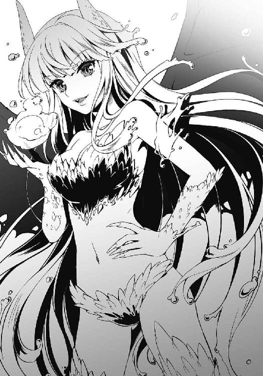
「これぐらいで閉じ込めたつもりだったの？ 残りの壁も全部壊してあげるわ。ねえ、博士。どこまで行ったら〈転移〉できるようになるのかしら？」
すると、ニコラは半ば観念したように言った。
「......効果範囲が狭いと言っただろう。この部屋から出れば、君たちは自由に転移できるさ」
「そう。なら、今すぐ帰らせてもらおうかしら。もちろん貴方を殺してからだけど」
「待ってくれ」
レヴィアタンが両手の爪を光らせると、彼は両手を上げ、命乞いにも似た交渉を始めた。
「【鎧】の情報が欲しいんだろう？ 私にしか取り出せないデータがある」
†
廊下を塞いでいたすべての隔壁をレヴィアタンの高圧水流でぶち破り、ようやくたどり着いたそこにあったのは、見るも無残な姿になった物資搬入用エレベーターだった。
侵入時にレヴィアタンがやったのだろう。ドアはこじ開けられ、そこにあるべきエレベーター本体は下に落ちて見えなくなっていた。剥き出しになった薄暗い空洞に身を乗り出し、上を見上げると、暗がりの先に微かな光が見える。空だ。隔壁をそうしたように、レヴィアタンは屋上をウォーターパイルでぶち抜いて侵入してきたのだ。ジジが「強くなった」と言うだけあって、彼女の水の能力は、初期の水鉄砲からは想像できないほどの威力にまで引き上げられていた。
「よし、上がるぞ」
「はぁ、はぁ......」
振り返ると、怪人が肩で息をしていた。その背後では、ニコラが両手を頭の後ろに組んで立っている。
「体力のほうは相変わらずだな......」
「うるさいわねっ！ 何回、ウォーターパイルを......撃ったと思ってるの......！」
息を荒げながら、レヴィアタンが叫ぶ。
ウォーターパイルを強化できた一方で、身体能力のほうはどうしても限界があったらしい。捕まっている間にジジから聞いた話では、単純な力勝負では戦闘員三人と戦ってほぼ互角。それ以上の向上は難しいと見て、前回の出撃から生還した後は、ひたすら水の能力の強化に励んだらしい。
「飛べるか、レヴィアタン？」
そう訊くと、彼女はむっとして「当たり前でしょ」と言い返し、ニコラをぐいっと引き寄せた。
レヴィアタンに掴まって、21号たちは空洞を上昇していく。三十階まで来たところでドアを破壊し、フロアに侵入した。
ニコラに先導させ、無人のフロアを進む。
人影はない。こちらが地下の隔壁に手こずっている間に、すでに避難が行われたようだった。
清潔というよりは潔癖と呼ぶのがふさわしいだろう真っ白な廊下を延々と歩き、やがてニコラが大きなドアの前で立ち止まった。
「ここが【鎧】の研究開発室だ。今、ロックを解除──」
言い終えるより早く、レヴィアタンがドアを殴り飛ばした。ひしゃげたドアが盛大に部屋の中を転がっていく。
「さ、行くわよ」
「......お前、さっき馬鹿にしたこと怒ってるだろ？」
「別に」
つんと澄まして、レヴィアタンは中に入っていった。21号もニコラに先に行くよう促し、彼女に続く。
部屋には端末や機材がずらりと並べられていたが、やはり誰もいなかった。無言で進むニコラのあとを追って部屋を進むと、奥にもう一つ扉があった。
「私個人の研究室だ。君たちが欲しているものもここに──いや待ってくれ、自分で開ける」
レヴィアタンに破壊される前に、ニコラはドア横に取り付けられたパネルに手をかざした。
しゅうと空気の抜けるような音がして、ドアが横にスライドする。
機材に囲まれた研究開発室と一変して、調度品や植物で飾られた落ち着きある空間がそこにあった。
広々とした部屋の奥は、一面ガラスになっている。入り口付近にいる21号には青々とした空しか見えないが、地上三十階の高さから見下ろす眺めというのは、中々爽快なものだろう。
カーペットの敷かれた床をニコラが歩いていく。その背に右手の爪を突きつけながら、21号もあとを追った。
一つだけ置かれたデスクの向こう側に回りこみ、ニコラが手を触れた。すると、空中に半透明の画面が出現する。ホログラムで表示されたディスプレイだ。
空中に表示された画面をニコラが操作していくのを、21号は見張った。レヴィアタンは監視を21号に任せ、部屋の中に置かれた数々の調度品を鑑賞し始める。
最後にニコラがパスコードを入力すると、画面がふっと消えた。
デスク中央がスライドし、中から透明の箱がせり出してくる。ニコラは箱の中から小型のメモリを取り出し、21号に差し出した。
「これに【鎧】の研究データが入っている。開発チームが持っているような表面的なものじゃない。【鎧】の本質──すべてが詰まった情報だ」
「偽物じゃないだろうな？」
「まさか」
「どうせあんたにはオレたちと一緒に来てもらうんだ。もしそれが偽物だったら、そんときは容赦しないぜ」
「私としては、ここで殺されなければそれでいい。ただ......そうだな。一つ忠告しておこう。いくら鎧を調べたところで、英雄たちを倒すことは不可能だ」
「なんだと？」
「〈紅蓮〉、〈水蓮〉、〈金剛〉、〈疾風〉、〈桜花〉......五つの鎧は、私の最高傑作だ。唯一の欠陥は身に着けられる人間がいないということだったが、【英雄】のおかげでその問題もある程度クリアできている。試作段階だった二年前ならまだしも、改良が重ねられ、進化してきた今の鎧に欠点なんて存在しない」
ニコラの声は冷め切っていた。つまらないものでも見るように、21号を眺めている。
「英雄機関の他のどんな情報でもなく、【鎧】について知ろうとした時点で、君が彼らを倒そうとしていることはわかった。だが、あまり夢は抱かないことだ。できないものはできない」
21号の右手が空を斬った。ニコラの眼前に鋭い爪を突きつける。
腕をあとほんの数センチ前に突き出せば、右手の爪はニコラの目を抉るだろう。しかし、【鎧】の創造者は表情を変えなかった。仮面のような笑みを浮かべることもなく、冷めた目で21号を眺め続ける。噓ではないと、証明するかのように。
「21号。時間稼ぎよ、今はここを出るのが先」
レヴィアタンが言った。調度品の鑑賞にも飽きたのか、彼女もデスクの前にやってくる。
「......わかってる」
21号は手を下ろした。
英雄が戻ってくるまでに、ニコラを連れてここを脱出しなければならない。
とはいえ、時間にはまだ余裕がある。四人の英雄は依然として魔獣と交戦中。唯一戦線を離れた〈桜花〉についても、発見され次第、本部周辺に潜む戦闘員たちから報告がくるようになっている。彼らからの〈通信〉はまだない。
『ニーイチ、レヴィアタン！ 窓から離れてください！』
そのとき、突然ジジの声が頭に響いた。
『ジジ？ どうしたんだよ？』
『早く！』
21号は窓の外に目を向けた。
「なっ......」
二十メートルほど先に、ヒトの形をした機械がいた。ずらりと形成された薄紅色の盾を足場とし、まっすぐこちらに駆けてくる。あれは──
「〈桜花〉!?」
神々しささえ感じさせる桃色の機械装甲。英雄機関の【鎧】の一つ──〈桜花〉を身に纏い、姫宮桜が駆けてくる。
彼女は特殊兵装【舞華】を足場にして、まさしく空を飛ぶように、ここまでの最短距離を最高速で駆け抜けてきたのだ。本部周辺にいた戦闘員たちも地上から来るとばかり思っていて気づけなかったのだろう。
「下がりなさい、21号！」
レヴィアタンが瞬時に水を練り上げる。しかし、ウォーターパイルを撃つ暇はなく、彼女は砲弾としてそれを放った。耳をつんざく破壊音と同時にガラスの破片が空を舞い、撃ち抜かれた窓から強い風が吹き込んだ。
〈桜花〉は最後の足場を踏み、鋭く跳躍した。彼女の足元を水弾が過ぎていく。
「デバイス──ベーシック・レイピア！」
彼女の右手に集まった光の粒子が、瞬く間に細長い何かを形作っていく。
やがて彼女の右手に収まったのは、もはや光の集合ではなく、確かな重量を感じさせる長さ一メートル強の細長い剣だった。柄には手の甲を守る飴細工のような装飾。そこから伸びる刀身の先端は鋭く尖り、針のようだ。
21号はニコラを捕まえ、横に飛び退いた。
レヴィアタンは動けない。跳躍してきた〈桜花〉が鋭い突きを放ち、彼女の肩口を突き刺した。
「くぅっ！」
苦悶の声を漏らし、レヴィアタンが後ろに飛び退く。肩から細剣が引き抜かれ、赤い血が宙に尾を引いた。
肩を押さえ、間合いを取ろうとした怪人を、しかし英雄は逃がさなかった。柔らかく床に着地したかと思うと、レイピアについた血を払い、再びレヴィアタンに肉薄する。ひゅんっ、と風の斬り裂く音が聞こえたときには、レヴィアタンの首元に〈桜花〉の剣が突きつけられていた。
ほんの一瞬、沈黙が空間を支配する。
時が止まったかのように。
「......博士を離してください」
腕でニコラを押さえる21号に、姫宮が言った。
彼女はレヴィアタンに剣を突きつけたまま、ゆっくりと〈桜花〉の兜をこちらに向けた。感情を映さない兜からでも、彼女の強い意志が伝わってくる。
だが、ここで引いては話にならない。
21号はニコラの首を腕で強く締めつけた。胸元から聞こえる呻き声。ジャバウォックを助けようとしたときと同じミスはしない。首をへし折るのであれば、姫宮も【舞華】で守ることはできないはずだ。
しかし、英雄は冷たく言った。
「あなたには殺せません」
戦闘員の良心ではなく、理性を信頼しての言葉だった。
ニコラを殺してしまえば、その瞬間に21号たちを守るものはなくなる。レヴィアタンもろとも姫宮に倒されてしまうだろう。
「本当にてめえらって奴は......」
呆れて笑ってしまうほどに、どこまでもこちらの邪魔をしてくる。やりたいようにさせてくれない。
（どうする......？）
21号は思考を巡らせる。
【鎧】のデータが詰まったメモリは、すでに21号の手の中だ。今ならメモリだけを持って〈転移〉で逃げることもできる。だが、姫宮が〈転移〉の隙を許すとは思えないし、この場にレヴィアタンを残すことになってしまう。疲労し、怪我を負った彼女では、〈桜花〉から逃げることも難しいだろう。
「逃げなさい、21号」
不意に、レヴィアタンが言った。
21号だけでなく、〈桜花〉まで驚いたように彼女を見た。
「今から私がこいつを倒すから、貴方は先に帰ってなさい」
口調こそ自信満々だったが、それはどう考えても虚勢だった。
「レヴィアタン、お前......」
21号は深いため息をつき、苛立ち混じりに叫んだ。
「ぜんっぜん反省してねえな!!」
びくりとレヴィアタンが肩を竦ませる。21号は構わず怒鳴った。
「ちょっとは考えろよ！ ここでお前が死んだら意味ねえだろうが！」
「だ......だって！」
「だってじゃねえ、馬鹿！」
「馬鹿ですって!? 何よ！ 私がせっかく......！ じゃあ、どうするっていうのよ!?」
「だから今それを──」
「......どうしてですか？」
不意に聞こえてきた弱々しい声に、21号は息を止めた。
姫宮桜が21号を見ていた。兜に隠されて顔は見えないというのに、21号にはどうしてか彼女が泣きそうになっているような気がした。
「やっぱり私にはわかりません......」
姫宮は言った。
「どうしてあなたたちが悪の組織にいるのか......悪のために戦おうとするのか。誰かを守ろうとすることができるのに......！ どうしてなんですか!?」
それは、あの監獄でも彼女に訊かれた質問だった。
鎧を身に纏った姫宮が、21号の答えを待っている。
なんのために？
なぜ戦うのか？
そんなもの、最初から答えは決まっている。
「オレはてめえらに勝ちてえんだよ」
「え......？」
「英雄は強い。オレたちは弱い。力の差は笑えるぐらいはっきりしてる。そんなこと、誰もできると思ってねえだろうな。勝てるわけがないって、あんたもそう思うだろ？」
困惑する姫宮に向かって、21号は話し続ける。
「けどさ、もし勝ったらどうだ？ オレたちがヒーローを倒すんだぜ。最高にびっくりするだろ？」
「だから......ですか......？ 私たちに勝ちたいから？ だから戦うって言うんですか？ そんな理由で──！」
「『そんな理由で』？ きっきっき！」
21号は笑った。
肩を震わし、いつものように。
そして、正義の味方に言い放つ。
「悪が正義をブチのめすのに、他に理由がいるのかよ？」
敗北。敗戦。決まりきった負け戦。
それが悪の組織の──戦闘員21号の日常であり、変わることのない結末だった。
何度繰り返しても、何をしようとも、敗北という同じ結末に行き当たった。それは勝つために戦うと決意した今でも変わっていない。生まれてから今まで、21号は負け続けてきた。
ただ勝ちたい。
だから戦う。
たとえその先に何もなかったとしても、21号は変わらない結末をひっくり返し、勝利の結末を見たかった。
「おい、オレたちを見逃せ」
そのためには──まず、この状況を切り抜けなければならない。
言葉を失っていた姫宮が我に返り、叫んだ。
「なっ、何を言っているんですか......！」
「見逃す気がないっていうんなら、オレの仲間たちが街を襲撃するぜ。それでもいいのかよ？」
「......もし街を襲うというのなら、今すぐ彼女を倒します。それでもいいんですか？」
今までのやり取りの間も、〈桜花〉のレイピアはぶれることなくレヴィアタンの首元に突きつけられている。
さきほどの言い争いで、レヴィアタンがこちらにとって重要な存在だということに姫宮も気づいている。21号たちを見逃したところで街が襲撃されない保証がない以上、怪人を逃がさないことが人々を守る手段といえた。
「交渉決裂か」
21号はため息をつき、ニコラを掴んだままゆっくりと移動した。
「じゃあ、しょうがねえよな」
そして、再び〈桜花〉に向き直る。
背後から強い風が吹き込んでくる。今、21号は砕かれた窓の前に立っていた。
「......え？」
姫宮の困惑を聞き取り、21号は笑った。
そして、
「取ってこい」
人質のニコラを、ビルの外に思い切り放り投げた。
10
「博士っ!!」
ニコラ博士が投げられた瞬間、桜は床を蹴った。【舞華】で受け止めようとすれば、その制御に意識を割かれ背後の怪人に不意を討たれる恐れがある。迷っている暇はない。
引き伸ばされた時間の中、研究室を高速で駆け抜ける。桜の目は、青空の下で博士の白衣がはためく様を仔細に捉えていた。
戦闘員が横に飛び退き、道を開ける。
彼を無視して、桜は跳躍した。空中に身を投げ出し、今まさに落下を始めようとしていたニコラ博士を抱き止める。
だが、まだ終わりではない。
博士を抱いたまま、桜はビルのほうに体を向ける。
アルスマグナの怪人──レヴィアタンの掌の上で、大量の水が渦を巻いていた。
すかさず桜も右手をかざす。
「ウォーター──！」
「デバイス──！」
二人の叫びが重なった。
「パイルッ!!」
「【舞華】!!」
瞬時に展開された光の盾が、撃ち出された激流を受け止める。【舞華】の盾は怪人の一撃を防ぎきり、そのすべてを水飛沫に変えた。
重力に引かれ、機械装甲に包まれた体が落下していく。研究室に残っている怪人と戦闘員の姿が見えなくなった。
桜はニコラ博士の体をしっかりと抱き、下を見た。
飛び出した研究室は地上三十階、高さにして約一五〇メートル。あと五秒もすれば、〈桜花〉とニコラ博士は地上に叩きつけられる。
【舞華】で足場をつくれば、落下は止められる。けれど、すでにかなりの速度で落ちている。今すぐに足場をつくったとしても、生身のニコラ博士が着地の衝撃に耐えられない。
遥か彼方にあったアスファルトの道路が、みるみるうちに近づいてくる。
「デバイスリロード！」
桜は掌を下に向け、自らの足下に薄紅色をした光の盾を出現させた。
一枚ではない。
強度を極端に弱めた盾を、地上に向けて何十層も形成する。
折り重なった薄氷を割るように、次々と【舞華】を砕きながら桜は落下していった。盾が砕かれるたびに光の粒子が花びらのように散り、宙に消えていく。衝撃が分散し、落下速度も徐々に落ちていった。
最後の一枚を踏み抜いて、桜はアスファルトの上にやわらかく着地した。ビルの周辺に控えていた自衛隊が声を上げて駆け寄ってくる。
「博士！ 大丈夫ですか？」
腕の中の博士は気を失っていた。けれど、息はあるようだ。
「よかった......」
安堵の息を漏らし、空を見上げる。
遥か頭上にある研究室。おそらく、そこにはもう誰もいないだろう。彼らが空間転移で逃げるのには、十分な時間を与えてしまった。
「システムスリープ」
呟くと、全身が桃色の輝きに包まれた。身に着けていた〈桜花〉が光に変わり、空中の一点に吸い込まれるように集まっていく。目の前に形成された召喚カードを手に取り、桜はあらためてビルを見上げた。
悪の組織の戦闘員。
わかり合えると思った。誰かを守ることのできる彼らとなら、戦いとは別の道を歩めるかもしれないと、そう心のどこかで期待していた。
けれど、それは逃げたかっただけだ。
戦うのが嫌で、そんな希望に縋ろうとしただけだった。
なんて思い違いをしていたのだろう。
──オレはてめえらに勝ちてえんだよ。
その挑発的な口調の裏には、敗北への絶望と、勝利への渇望があった。
彼をそうさせたのは、戦闘員を倒し続けてきたのは、他でもない桜たちだ。
「私は......」
その想いは言葉にならず、掠れて空に消えていく。
アルスマグナの戦闘員の言葉が──彼の声が、どうしても頭から離れなかった。
11
「デバイス──【神風】！」
空中に具現化されたリボルバーを掴み取り、草薙隼人は漆黒の狼に狙いをつけた。
しかし、トリガーを引く暇はない。
「GRRRRAAAAAAAAAAA!!」
獣が咆哮と共に迫り来る。白い牙を剥き出しにして、〈疾風〉を食いちぎろうと飛びかかってきた。
「おっと！」
咄嗟に横に飛び退いた。
背後にあったビルの壁に狼の巨体がぶち当たる。粉砕され、がらがらと崩れるコンクリート。土埃が舞う中、闇を宿す狼の双眸が隼人を睨みつけている。
「こいつ...‥！」
銃を構えた瞬間、狼が身を翻した。四肢で地を捉え駆けていく先には、他の二体の魔獣と交戦する緋崎たち。隼人もすぐに追いかける。
Ｔ区の駅前は、魔獣との交戦によってますます荒れ果てた姿になっていた。道路には砕けたコンクリートやアスファルトが点在し、燃え上がる車体がいくつも転がっている。周囲のビルも、そのほとんどが魔獣の突撃によって一階部分を壊滅状態にされていた。
広い車道の真ん中で、三体の魔獣に緋崎たちが襲われていた。【神風】を掃射し、狼たちを追い払うと、隼人は皆と合流した。
「大丈夫ですか？」
「ああ。助かった」
そう答えた緋崎は、後退した狼を睨み続けている。漆黒の狼が三方向から隼人たちを囲み、狩りのタイミングを計っていた。
「三体というのは、やはり厄介だな......」
「ですね」
黄瀬の呟きに、隼人も頷いた。
もし狼が一体しかいなかったら、とっくに決着は着いている。
今回の狼は、臨海公園で戦った怪物と同種のものだ。それならば、すでに弱点はわかっていた。身体能力こそ驚異的だが、魔獣は行動パターンがわかりやすいのだ。突進しかしてこないとわかっていれば、避けることも反撃することも容易い。
だが、三体となると話は別だ。一体だけに集中すれば、他の狼にやられてしまう。狼たちの連携も予想以上によく、本能を剥き出しにして襲い掛かってくるくせに、時折思い出したように互いの動きをフォローし合っていた。決して無理はせず、慎重にこちらを追い詰めてくる。なんとか捌き続けているが、隼人たちも反撃の隙を掴めずにいた。
「そろそろ飽きたわね」
隼人の背後で、青葉が愚痴を漏らした。
「どうするの、シュウ。このままってわけじゃないんでしょ？」
「ああ、大丈夫だ。もうわかった」
「わかった？」隼人は思わず〈紅蓮〉を見た。「何がですか？」
緋崎は息を整えると、狼のうちの一体を指差した。
「あいつが群れの頭だ」
「え？」
「たぶん、最初に現れた奴だろう。あいつだけ常に一歩引いたところで他の二体に指示を出している。連携を崩すなら、あいつからだ」
緋崎の言葉には剣で斬るような鋭さがあった。
リーダーである彼はいつだって冷静で、そして強い。仲間全員を尊敬している隼人だが、やはり緋崎は別格だと感じることがよくあった。
「黄瀬、あいつの動きを止められるか？」
「......ああ。掴むことさえできればな」
「わかった。青葉、あの狼を黄瀬のところに誘導してくれ。隼人は【神風】で他二体を妨害。いいか？」
「りょーかい」
「了解！」
青葉と隼人が頷くと、緋崎は力強く言った。
「いくぞ！」
その声を合図に、まず動いたのは〈水蓮〉だ。とん、と地面を蹴った瞬間、彼女の姿が掻き消える。
リーダーと目される狼が、全身のばねを使って横に跳んだ。獣がいなくなったその場所に、空から降ってきた〈水蓮〉が踵落としを炸裂させ、アスファルトを砕く。
「AOooooo！」
こちらの意図を察したのか、狼が吠えた。
二体の狼が、群れのリーダーを守ろうと地面を蹴る。が、邪魔はさせない。
隼人は両手の銃を構える。
「いくら速くたって、動く先がわかってちゃ意味ないよね」
リボルバーが火を噴いた。銃弾が次々と命中し、狼たちの体を爆炎で包み込む。二体の獣は悲鳴を上げて後退した。
「大地、行ったわよ！」
〈水蓮〉が狼を追い込んだ先には、他の鎧より一回り大きい〈金剛〉が待ち受けている。首を鳴らすように、黄瀬が兜を二回動かした。
「GrAAAAAAAAAAAAAAAAAAAAA!!」
牙を剥き出しにし、狼が〈金剛〉に飛び掛かる。その両顎を掴み取り、巨大狼の突進を受け止めてなお、〈金剛〉は立っていた場所からわずかに動いただけだった。
怪力に捕らえられ、動けなくなったのは魔獣のほうだ。
「緋崎......！」
「ああ！」
〈金剛〉の背後から、赤い鎧──〈紅蓮〉が現れる。
振りかぶられる灼熱の剣。【焔】の刃が燃え上がり、一刀のもと緋崎は闇を斬り裂いた。
断末魔が響く。
ずしん、と音を立てて狼が崩れ落ちた。闇色の煙が立ち上り、宙へと溶けて消えていく。
「残り二体」
「「Graaaaaaaaaaaa！」」
残された二体の獣が吠えた。群れの頭を討たれても、彼らは逃げはしなかった。
「隼人、援護お願いね！」
飛び出したのは〈水蓮〉だ。
「人使い荒いなあ！」
文句を言いながらも、隼人は【神風】を乱射する。ただがむしゃらに撃つのではなく、狼の逃げ場を制限するように狙いをつける。事前に打ち合わせをしなくとも、姉が何をしたいのかはなんとなくわかった。
〈水蓮〉が高く跳躍し、追い詰められた狼の頭上を獲った。そして、
「デバイス──【氷槍】！」
その手に具現化される一本の長槍。冷気を帯びる青い槍を握り締め、〈水蓮〉がその身をしならせる。
穂先に巻かれた青い布が、風で揺れた。
「──はっ！」
真下に投擲された槍が狼の背に突き刺さる。次の瞬間、獣の体に異変が起こった。
「Ga......Aaaaa......!!」
槍の刺さったところから、体が凍り始めたのだ。背中を覆い尽くし、氷結は足元にまで及んでいく。
身動きが取れなくなった狼にとどめを刺すべく、〈水蓮〉が落下してくる。
「デバイス......【雷鎚】」
凍りついた狼の傍らに、いつのまにか〈金剛〉が立っていた。
眩い光が集まり、形作られたのは〈金剛〉よりもさらに大きいハンマーだった。重厚な柄の先──電撃を纏った打撃部位は一際巨大で、見る者を戦慄させる。黄瀬があまり特殊兵装を使わないのは、その絶大な破壊力で街を破壊してしまうからだった。
両手でその鎚を掴み、黄瀬は無言のまま振り下ろす。
雷光が閃き、衝撃が轟いた。
光が消え、陥没した道路に〈水蓮〉が着地したとき、すでに狼は跡形もなく消えていた。
「ちょっと大地、横取りしないでくれない？」
「確実な方法をとっただけだ......」
「姉貴、黄瀬さん。まだ終わってないって」
隼人の視線の先で、最後の狼が唸り声を上げていた。
『皆さん、大丈夫ですか？』
突然聞こえてきた桜の声にどきりとした。気を落ち着けて隼人は答える。
「こっちはもう終わるよ。桜さんのほうは？」
『博士は救出しました。ただ、戦闘員と怪人は逃がしてしまって......鎧の情報も盗まれてしまいました......』
鎧の情報と聞いても隼人にはピンとこなかった。盗まれてはまずいのだろう、という感覚しかない。
それよりも、あの戦闘員を逃がしたということのほうが気になる。漠然とした不安が、胸の中にじんわりと広がっていった。
「姫宮、戦闘員と何か話せたのか？」
緋崎が言った。
『......どうしてわかったんですか？』
「なんとなくだ」
わずかな沈黙の後、彼女は言った。
『彼は、私たちに勝ちたいらしいです。だから戦う、と......』
「ふうん、面白いじゃない」
〈水蓮〉を纏う青葉が腰に手を当て、笑った。
「何が面白いんだよ、姉貴」
「そういうの、返り討ちにしてあげたくなるでしょ？」
「まーね」
隼人は不満げに言った。
「けど、『勝ちたい』ってさ、よーするに調子に乗ってるってことだよ。たった一回俺を倒せたからって、みんなも倒せるって思ってるんだ。むかつくなあ」
「いーじゃない。勝てないって思っている奴よりは、ずっと潰しがいがあるわ」
「あのなあ、姉貴......」
「Grrrrrrrrr......AAAaaaaa......！」
唸り声を上げる狼に異変が起こった。
漆黒の毛に覆われた巨体が、どくん、どくん、と律動する。双眸に宿る闇が燃え上がるように膨張し、よだれを垂らす口からは獰猛な白い牙を覗かせた。
最後の狼が、街に咆哮を轟かす。
「GAAAAAAAA────!!」
──巨大化だ。
「みんな、【巨大鎧】の召喚準備だ！」
徐々に大きくなっていく狼を見上げ、緋崎が叫んだ。
彼は手に持った【焔】を解除すると、力強く告げる。
「理由がなんであろうと、立ち向かってくるのなら......悪であり続けるというのなら、容赦はしないさ。俺たちのやることはいつだって変わらない」
その言葉に隼人も頷く。
そうだ──正義の味方がやるべきことは。
「悪を倒して、平和を守る。それだけだ」
そして、緋崎たちは巨大鎧を召喚した。まずは、目の前にある悪を滅ぼすために────。
12
アルスマグナ地下基地──第七階層。幹部たちの集まる会議室は、重たい空気に沈んでいた。
「そんな、まさか......」
ついさきほど入ってきた報告に、幹部の一人が呻いた。
フェンリル、フローズヴィトニル、ヴァナルガンド──ファーストラボの創った三体の魔獣が、英雄たちに残らず全滅させられた。それも、五人の英雄のうち〈桜花〉が何らかの理由で戦線離脱したにもかかわらずだ。
それはありえない敗北であり、予想外の結果だった。少なくとも、ファーストラボの幹部たちにとっては。
「失望したよ」
パラケルススの深いため息が、薄暗い会議室に響き渡る。幹部たちが冷水を浴びせられたかのように彼女を見た。
「【魔獣】を創ったときは見直したんだけどね。それを数だけ増やすなんて......またこれまでの粗製濫造に逆戻り？」
「黙れ」
プロフェッサー・ヘルメスの双眸は、羞恥と憎悪に燃えていた。
「我々は間違っていない。三体で駄目ならば五体。五体でも駄目ならば十体。また一から創るだけだ」
「そう。なら、好きにするといい。ああ、そうそう......戦闘員21号のことだけど」
交戦開始と共に中断していた話題を、彼女は笑顔で持ち出した。
「そんなに気になるのなら、諜報部のホムンクルスに調べさせるといい。たぶん、今頃はマンションで寝てたりするんじゃないかな？」
21号の救出作戦が成功したことは、すでにジジから〈通信〉で知らされている。
〈桜花〉がなぜ戦闘を離脱したのか、しばらくすればヘルメスたちも気づくだろうが、21号がこちらに戻ってきている以上、すべては憶測に過ぎない。いくらでも言い逃れはできる。
「そういうわけで、次は私たちの番だ」
「貴様......三体の魔獣を倒した相手に勝てると思っているのか？」
嘲笑うようにヘルメスが言った。
他の幹部たちも敗北の屈辱を紛らわせようというのか、口々にパラケルススを嘲った。
「そうだ、勝てるわけがない」
「失敗作の怪人と戦闘員如きに何ができる」
「いいかげん諦めろ、パラケルスス！」
絶え間なく浴びせかけられる嘲笑と罵倒。しばらく黙って聞いていた彼女も、やがて我慢の限界を迎えた。
「くくっ......」
口元から、思わず笑いが漏れた。
「ふははははははははははははははははははははははははははははは！」
突然笑い出した彼女に、幹部たちが面食らったように押し黙る。
「ここまでくると、あんたたちの顔が歪む瞬間が楽しみで仕方ないな」
円卓を囲むのはパラケルススを含め、十三人。向かいに座るプロフェッサー・ヘルメスが憎悪に満ちた双眸で睨んでくる。
悪の組織アルスマグナの首領と幹部たち。その中でただ一人、パラケルススだけが、レヴィアタンと戦闘員の勝利を信じていた。
「何度だって言おう」
パラケルススは口元を歪め、幹部たちに言い放った。
「勝つのはセカンドラボだ。私の子供たちを舐めるなよ？」
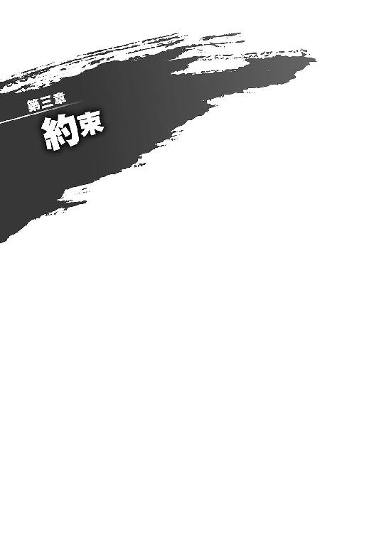
１
朝日がカーテン越しに部屋を照らし、窓の向こうからスズメのさえずりが聞こえてくる、そんな爽やかな朝。
戦闘員22号──ジジはリビングで正座し、テーブルの上に置いた目覚まし時計をじっと見つめていた。
すでに制服に着替えた彼女の傍らには、黒いエプロンが丁寧に畳まれて置かれている。準備は万端。あとは時間が来るのを待つだけだ。
飾り気のない白い文字盤を背景に、時計の秒針が淡々と時を刻む。
カチ、カチ、カチ。
まもなく七時半。目覚まし時計がけたたましく鳴り響く、いつもの時刻が近づいてくる。
カチ、カチ、カチ。そして、十二の文字に秒針が重なった。
ジリリ──！
たんっ。
ジジは間髪入れず時計を叩き、目覚ましを黙らせた。静かになったリビングで、再び時計がカチ、カチと時を刻み始める。
ジジは、ふぅと息を吐き、二段ベッドを見上げた。
彼は起きてこない。もともと素直に起きてきた試しがないのだから、ベルを鳴らし続けようと、すぐに止めようと、このあとジジがすることは同じだ。
立ち上がり、ベッドのところまで行く。
梯子に足をかけるのは久しぶりのことだった。
そわそわしていることを自覚しながらジジは梯子を上がり、上段のベッドをそっと覗き込んだ。
「............」
21号が気持ちよさそうに眠っていた。
ほんの少しだけ寝顔を眺めてから、ジジは掛け布団の上から彼の肩を揺さぶった。
「起きてください」
「んん......？」
彼がうっすらと目を開ける。
「......ジジ？」
「はい」
「あれ......目覚まし、鳴ったか？」
「鳴りました」
噓は言っていない。
21号はもぞもぞと動いたかと思うと、枕に顔を埋めてしまった。
「もう少し寝かしてくれ......」
くぐもった声で二度寝の要求をする彼に、ジジは言った。
「早く起きないと、朝食を食べられなくなりますよ」
がばっと、勢いよく21号が身を起こした。
「いい朝だな、ジジ！」
さきほどまでの眠気はどこにいったのか。21号は歯を見せて笑った。久々の手料理がよほど嬉しいらしい。
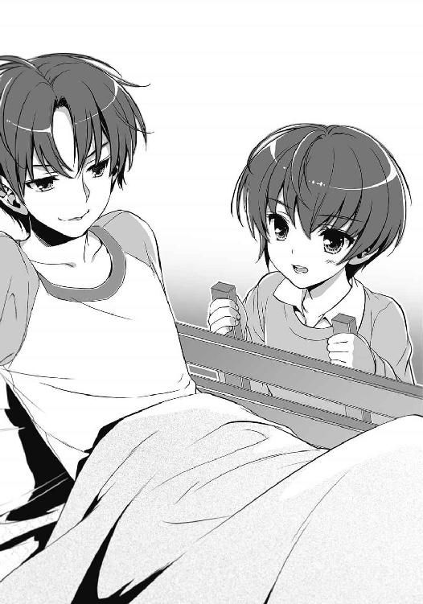
自信作にしておいてよかった。心の隅でそう思いながらも、ジジは呆れたようにため息をつき、
「おはようございます、ニーイチ」
そして、小さく微笑んだ。
２
ジジのつくってくれた朝食を食べ、準備を済ませると、21号は彼女と一緒に地下基地に〈転移〉した。
無機質な石壁に囲まれたエントランス。壁際のカウンターテーブルには、受付の彼女が静かに座っている。黒いドレスに身を包んだ受付嬢は、21号とジジが近づくと華やかな笑みを見せた。
「おはようございます、ジジ」
「おはようございます。戦闘員22号と21号の立ち入り許可をお願い致します」
「かしこまりました」
事務的に頷いて、受付嬢は手元の端末を叩き始めた。
21号がその仕事ぶりを眺めていると、彼女が端末のディスプレイから目を離さずに言った。
「生きていらしたんですか、21号」
「まーな。見ての通り、生きてるぜ」
「......幽霊ではありませんでしたか」
「妙な期待をしてんじゃねえ」
「残念です。もうあなたの顔を見なくて済むと思っていたんですけれど」
「............なあ」
呼びかけると、受付嬢が人形のように整った顔を向けてきた。
「あー。その、なんだ」
どう言葉にするべきかわからず、頬を掻く。助けを求めて隣のジジを見ると、彼女は「自分で言ってください」と目で叱りつけてきた。
21号は咳払いをすると、怪訝そうな受付嬢に言った。
「ありがとよ」
受付嬢が、ぱちぱちと瞬きを繰り返した。
「どうしたのですか、急に......気持ち悪い」
「礼だよ、礼！ オレがいないこと、色々ごまかしてくれてたんだろ？ だから......ありがとよ」
「......別に、あなたのためではございません」
「わかってるって、それぐらい」
半ば呆れ気味に21号は笑う。
21号は、過去に彼女を裏切った。そのことを彼女が許すとは思っていないし、許されたいと思ったこともない。死ぬまでずっと恨まれる。それでいいと思っていた。
「......何もわかっていませんね」
「は？」
「なんでもありません」
拗ねたように顔を背け、彼女が言った。
「許可が下りました。どうぞ先へお進みください」
彼女の態度に21号は首を傾げたが、その言葉に従うことにした。
「またな」
受付嬢にそう告げて、ジジと一緒に歩き出す。
すると、
「ジジ」
背後から、呼び止める声が聞こえた。
振り返ると、カウンターテーブルに座る受付嬢が、背筋を伸ばしてこちらを見つめていた。彼女は21号にちらりと視線をやり、それからジジに言った。
「ニーイチのこと、よろしくお願いします」
彼女にその名で呼ばれたのは初めてのことだった。
言葉を失った21号の横で、ジジがしっかりと頷く。
「はい」
受付嬢が、ふっと表情を緩めた。
つくり物ではない自然な微笑みを浮かべ、彼女は二人に向かって、ゆっくりとお辞儀をした。
†
おんぼろのエレベーターに乗って、21号たちは第五階層──戦闘員の区域まで下りた。
ドアが開くと、白い壁が大きくぐるりと周回するフロアと、その中心を貫くガラスの空洞が目に入る。仲間たちの姿はない。すでに作戦室に集まっているのだろう。
「まさか、復帰初日から遅刻するなんてな」
エレベーターから降り、21号は肩を揺らして笑った。隣を歩くジジが申し訳なさそうにうつむく。
「すみません......朝食をつくりすぎました......」
「いいって、いいって。うまかったしな。隊長ちゃんには〈通信〉で伝えてあるんだろ？ 今日ぐらい大目に見てもらおうぜ」
作戦室に向かって歩きながら、21号はガラスで囲まれた空洞を覗き込んだ。
空洞の奥底で、規則正しく並べられた八十一個の巨大丸底フラスコが明滅を繰り返していた。戦闘員をはじめとする人工生命体を生成するフラスコだ。中を満たす薄青色の液体が周期的に発光し、そのたびに青く儚げな光が闇を払う。
どのフラスコの中にも、人型の影は見えなかった。
多少であれば一時的に人数を増やすこともできるはずだが、隊長ちゃんは今のメンバーで英雄たちに挑むつもりらしかった。
今いる八十一人の戦闘員に、ルーキーはいない。誰もがレヴィアタンを救うために一度は戦い、英雄たちの力をその身で思い知っている。隊長ちゃんは、決戦までに生成・維持できる人数を踏まえた上で、独断で行動しやすいルーキーを創るのは得策でないと判断したようだった。
作戦室の前に辿り着くと、21号は両開きの扉を押し開け、室内に足を踏み入れた。
思わず息が止まった。
黒い制服を身に着けた戦闘員たちが、目を見開いて21号のほうに振り返っていたからだ。
「「「ニーイチ!!」」」 「「「21号!!」」」
「うわっ！」
重なった皆の声が、21号の体を叩いた。
エサに群がる獣のように仲間たちが一斉に集まってくる。あっという間に囲まれ、もみくちゃにされた。何か色々と声をかけられている気がしたが、やかましすぎて聞き取ることができない。
「だあっ！ ちょっと待てよ！」
21号は詰め寄ってくる皆を振り払った。皆が「おおっ」と声を漏らし、距離を取る。
「ぜえ、ぜえ......」
肩で息をしながら、21号は乱れた制服の襟を整えた。
「あんまり騒ぐなって。ファーストラボの奴らが見てたらどうすんだ。オレはいつもどおり作戦室に来ただけなんだぜ？」
「馬鹿を言え、ニーイチ」
聞き慣れた声。
振り返ると、シャープな眼鏡をかけた戦闘員が、にやにやと笑みを浮かべて立っていた。
「ダークヒーローのご帰還だぞ？ これが騒がずにいられるか」
「ロクロク......」
21号は呆れ、けれど笑い混じりに言う。
「だから、そのダークヒーローってのはやめろよ。大袈裟すぎる」
「そうか？」
「ったく......」
「まあ。ともかく、だ」
ロクロクは21号の横につかつかと回り込み、
「よく帰ってきた！」
ばんっと、強く背中を叩いた。
「痛ぇな！」
「ハッハッハ！」
ロクロクがなおも背中を叩いてくる。あまり悪い気もせず、21号も笑ってロクロクの背中を叩き返した。
「ぐっ、痛いぞ！」
「きっきっき！ お返しだ」
周りの戦闘員たちが笑う。ふと後ろを見ると、ジジも穏やかに微笑んでいた。
そのとき、
「す、すみません！ 前っ......前を通してください......！」
どこからか、か細い声が聞こえてきた。
「......ぷはぁ！」
戦闘員たちの群れを掻き分けて、隊長ちゃんが顔を出した。窒息寸前だった彼女は肩で息をしながら、くしゃくしゃになった髪を手で整える。サイドで結われた髪がぴょんと跳ねた。
「よう、隊長」
「ししょー......！」
こちらを見上げた隊長ちゃんは、つぶらな瞳をきらきらと輝かせ、
「ししょ────!!」
子犬のように勢いよく飛びついてきた──ので、21号はひらりと避けた。
「あうっ」
べしゃり。
隊長ちゃんが床にダイブし、作戦室に静寂が訪れた。
「どーして避けるんですかぁ!?」
がばりと上半身を起こし、隊長ちゃんが涙目で訴えてきた。
「いや、なんとなく......」
「何やってるのよ、貴方たち......」
聞こえてきた声に振り返ると、レヴィアタンが呆れた様子で立っていた。ドレスのスカートをなびかせながら、彼女は21号の前を通り過ぎ、倒れた隊長ちゃんに手を伸ばした。
「21号。体は大丈夫なの？」
隊長ちゃんを引っ張り上げながら、レヴィアタンが訊いてきた。
「今のところはなんともねえよ。このあとミクニにも診てもらうしな」
「そう......」
レヴィアタンは何か言いたげだったが、結局何も言わなかった。油断している隙に、隊長ちゃんが「えいっ」とこっそり抱きついてくる。
「隊長」
ジジがこほんと咳払いをして、言った。
「遅くなってすみませんでした。会議を始めてください」
「あ、はい」
隊長ちゃんは名残惜しげに21号から離れ、壇に向かった。
彼女を追うように他の戦闘員たちがぞろぞろと部屋の前方に移動していく。その後ろ姿を、21号は少しの間眺めていた。
「ニーイチ？ どうかしましたか？」
「いや、なんでもねえよ。オレたちも行こうぜ」
「はい」
21号はジジと並んで歩き出す。
久しぶりの作戦室と仲間たちを見て、21号は帰ってきたことをようやく実感した。
だが、気を抜いている場合ではない。英雄たちとの勝負は、これからだ。
隊長ちゃんが階段を軽やかに上り、壇上に立つ。小柄ながら堂々とした立ち姿。しばらく見ないうちに、隊長という役割がますます板についてきているように見えた。
そして彼女は、花を咲かせるように笑みを浮かべ、明るく声を張り上げた。
「それでは、作戦会議を始めます！」
３
英雄機関新本部──戦士待機室。
移転先の施設でも、待機室のレイアウトにはほとんど変更がなかった。ゆったりとした広さの部屋には、六人がけのテーブルやソファが備えられ、自動ドアの向かいに巨大なディスプレイが設置されている。メーカーまで以前と揃えられているのは、英雄たちが移転後の施設に馴染むようにするための配慮だと聞いているが、桜としてはむしろ違和感を覚えるくらいだった。
ほとんど変わっていない待機室の外では、本部移転の作業で機関の職員が慌ただしく走り回っているはずだ。そんな中、桜たちはこの部屋に集められた。五人の英雄は横一直線に並び、初老の男性と向き合っていた。
英雄機関総司令──神原孝四郎。
白衣を羽織り、黒手袋をはめた右手には杖を持っている。豊かな白髪は鋭い眼光と相まって、むしろ若々しさを感じさせた。
普段、司令は五人の英雄と相対しても厳かな佇まいを崩さない。
その彼が突然頭を下げたのを見て、桜は目を瞠った。
「すまなかった」
しわがれたような独特な低音声で、司令が謝罪した。
「戦闘員を本部に隠す判断をしたのは、私のミスだった。方法はまだわからないが、本部の位置を特定されたのはそのためだろう。結果として、職員や研究員、そして諸君らを危険な目に遭わせてしまった」
アルスマグナによる初めての本部襲撃。ニュースでは、世間の混乱を避けるため、襲撃されたオフィスビルが英雄機関のものだとは報道されていない。
幸い、怪人レヴィアタンに襲われた研究員たちは、運ばれた病院で意識を取り戻したらしい。単独で本部に戻ってきた桜や、三体の魔獣と交戦した緋崎たちにも大きな負傷はなかった。だが、一歩間違えれば英雄機関が壊滅していたかもしれない危険な事態だった。
「......司令。今回のことを公開しないんですか？」
「それはできない」
緋崎の言葉に、司令が顔を上げた。
「我々はアルスマグナに──悪に対して、絶対的な存在でなくてはならない。だが、今回の襲撃で我々は戦闘員と怪人に逃げられ、【鎧】の情報を盗まれた。その事実を知れば、人々はたちまち不安と恐怖に取り憑かれるだろう」
桜にも司令の言ってることは理解できた。ただ、人々のために事実を隠すことが正しいことなのかどうかはわからない。一つ言えるのは、責任の一端が自分にもあるということだ。
「すみませんでした」
桜は大きく頭を下げた。
それは司令だけではなく、仲間たち全員への謝罪だった。
「彼らを逃がしてしまったのは私です。私がもっとしっかりしていれば、情報を奪われることもありませんでした」
「姫宮、君が謝ることはない。情報漏えいに関して言えば、最大の責任はメモリを渡したニコラ博士にある」
「そ......そうだよ、桜さん。博士が悪いんだって！」
隼人が言った。
「まだよくわかってないけど......盗まれるとまずい情報なんでしょ？ そんなものをアルスマグナにあっさり渡すなんて、どうかしてるよ」
「言いすぎだ、隼人」緋崎が咎める。「自分の命を守るためにしたことなんだ。文句は言えないさ」
「文句ぐらいは言うべきだろう......」黄瀬が低い声で呟く。「他でもない【鎧】の情報だ。軽視していい事態ではない」
「ねえ」
青葉が黄瀬に言った。
「結局何がまずいわけ？ バレるとまずい鎧の弱点でも書いてあるの？」
「それもあるかもしれない。だが、もっと大きな問題がある。......これを言うと、むしろお前は喜ぶかもしれないが」
「何？」
「アルスマグナが【鎧】を創る」
黄瀬が淡々と言った。
「......ふーん、そういうことね」
「だから、嬉しそうにするな」
上機嫌な青葉に、黄瀬がうんざりするように言った。
桜もそのことはずっと気になっていた。もしもアルスマグナが【鎧】を創ったとすれば、それだけで十分な脅威になるだろう。
すると、桜たちのやり取りを見守っていた司令が言った。
「そのことについて話しておこう。入りたまえ、博士」
ドアが横にスライドし、待機室に白衣の男が入ってくる。
「ニコラ博士！」
「やあ、姫宮さん。昨日はどうもありがとう」
命の危険にあったというのに、博士はいつもと変わらない薄い笑みを浮かべた。
「アルスマグナに情報を渡したことを、まずは謝っておこうか。うん、私がどうかしていた」
司令の隣に立ったニコラは、にっこりと隼人に笑いかけた。隼人が苦い顔をする。
「さて、盗まれたデータは当然暗号化されているけれど、『解けない暗号』は存在しない。ここでは、データを見られたことを前提に話をしよう。結論から言うと、大きな影響はないはずだ」
「え？」
「アルスマグナに奪われたのは【鎧】の基礎研究データだ。システムのコンセプトや理論、基本構成......そういったデータが格納されている。本質的な情報ではあるけれど、奴らにあの理論を解読できるとは思えないし、万が一理解できたとしてもどうすることもできない」
「どういうことですか？」桜が訊いた。「鎧の構成がわかるんですよね？ それなら──」
「創ることもできるんじゃないか。そう言いたいんだろう？」
桜は頷く。けれど、ニコラ博士には自信があるようだった。
「不可能だ。アルスマグナには、【鎧】を創れない理由がある」
五つの鎧を生み出した研究者は、その口元に余裕の笑みを湛え、挑戦的に言い放った。
４
作戦会議が終了した後、21号はミクニのいる医務室に向かった。
彼女に体を診てもらうこと以外に、もう一つ大事な用事がある。英雄機関から奪ってきたデータについて訊くことだ。
ミクニ──ドクター・パラケルススには、昨日レヴィアタンから例のメモリが手渡されている。中のデータは暗号化されていたようだが、一日あればなんとかしてみせるとミクニは言っていたらしい。
「入るぞ」
彼女が常駐している医務室のドアをノックし、返事を待たずに21号は部屋の中に入った。
「......ミクニ？」
いくつかの薬品棚が置かれた室内。
椅子に座って待っているものだと思っていたが、デスクの前に彼女はいなかった。代わりに彼女のものだと思われる白衣が、投げ捨てられたように椅子の背もたれにかけられている。
まさか、ファーストラボの奴らに──。
一瞬よぎったそんな不安は、部屋のベッドが膨れ上がっているのを見て、すぐに消し飛んだ。ベッドの下には、彼女のヒールが揃えられている。
ため息をつき、21号はベッドに歩み寄った。
ミクニが眠っていた。ブロンドの髪が白いシーツの上で乱れ、はだけた赤いシャツの胸元があらわになっている。
「おい、ミクニ」
声をかけると、彼女は小さく呻き、うっすらと目を開いた。
「21号......？ ああ、もうそんな時間か......」
頭を押さえながらベッドから身を起こし、ミクニは足を床に下ろした。のろのろとした動きでヒールを履くと、ふらつきながら立ち上がる。
「大丈夫か？」
「問題ないよ......ちょと寝不足なだけだ」
ミクニは白衣に袖を通すと、どさりと椅子に腰を下ろした。
「思ってたより時間がかかっちゃってね」
「メモリの中身、見ることができたのか？」
「もちろん」
ミクニは机に置かれていた黒縁の眼鏡をかけると、ついでに取ったゴム紐で、乱れた髪をまとめていく。
「中に入っていたのは【鎧】の研究データだった。鎧のコンセプト、理論、基本構成とかそのあたり」
「へえ」
「ひと通りは理解したけどね。思っていたよりも複雑で、おかげで徹夜をする羽目になったよ」
「......ん？」
なんだか今、とんでもないことを耳にした気がする。
「理解した？ 昨日の今日でか？」
英雄機関の【鎧】も立派なオーバーテクノロジーだ。そんな簡単に理解できるものではないはずだった。
しかし、ミクニはあくびを噛み殺して、なんでもないことのように言った。
「あれ？ 一日でなんとかするって伝えてあったはずだけど」
「そりゃ聞いてたけど......」
まさかデータの復号化だけでなく、中身の解読まで一日でやってのけるとは思っていなかった。もしかしたら、ドクター・パラケルススとしての彼女は思っていたよりもずっと化物なのかもしれない。
「さ、体を診てあげる。服を脱ぎなさい」
「後でいいって。それより【鎧】のことを──」
「診察が先。ほら、早く」
仕方なく21号はジャケットとシャツを脱ぎ、彼女の前に座った。
聴診器を胸に当て、ミクニが目を閉じる。耳を澄まし、何かを聞いているようだった。
胸から聴診器が離れるのと同時に、21号は身を乗り出した。
「なあ、ミクニ。セカンドラボで【鎧】を創れないのか？」
メモリのデータに基本構成などの情報が入っているというのなら、当然、考えられる手段だ。もしもそれができたなら、英雄たちとの差を一気に埋めることができる。
「後ろ向いて」
「え？ ああ」
後ろを向くと、今度は背中に聴診器が当てられた。
「残念だけど」
背後から、ミクニの声が聞こえた。
「今のアルスマグナに【鎧】を創ることは不可能だ」
「......時間が足りないってことか？」
「違う。むしろ、素材の問題だ」
「素材？」
「五つの鎧は、大量のレコードスフィアによってできている。それも、おそらくは私たちが『ハズレ』としてきたものを使ってね」
「どういうことだ？」
21号は振り返ろうとしたが、ぐいっと肩を押されて止められた。
「過去から現在に至るまでのあらゆる情報・思念の集合体──【生命の書】。そこから漏れ出た情報の結晶が、レコードスフィア。それは知っているだろう？」
「ああ......」
「【鎧】は、膨大な数のスフィア──大量の情報をエネルギーに変換し、機械装甲という形を与えて現実空間で情報を再構成しているんだ。情報変換......なかなか面白い発想だよ」
「けど、スフィアだろ？ 膨大な数って、そんなにあるわけ......」
「アルスマグナと英雄機関の戦いが始まってからだと、もちろんスフィアの数は限られる。けど、スフィアの出現が始まったのは、十年以上前からだ。そもそもあんたたちホムンクルスとか英雄機関の鎧とかは、レコードスフィアの情報をヒントに創られたんだからね」
彼女は言った。
「英雄機関はレコードスフィアの位置検知技術を持っている。私たちの予測技術と違ってスフィアが現れないと機能しないけど、逆に言えば出現したスフィアは残らず見つけることができるんだ。だから、過去に現れたスフィアは英雄機関にほとんど取られている。奴らが五つもの鎧を創れたのは過去のスフィアを大量に所持していたからだ」
ミクニのため息が聞こえた。
「英雄機関にとっては、私たちがハズレとしてきたスフィアも重要な材料だったというわけさ。鎧を創ろうにも、アルスマグナの保有しているスフィアじゃアタリとハズレを合わせても圧倒的に数が足りない」
「無理か......」
21号は考えを切り替えることにした。
できないというのなら、別の可能性を探るしかない。
「何か手掛かりになりそうな情報はあったか？」
「まだなんとも言えない。ただ、あんたの言っていた鎧の稼働制限についてはわかりそうだよ。具体的な制限時間を割り出せたら伝える。それより、21号」
「ん？」
「ちょっと変身してみなさい」
「なんでだよ？」
「いいから」
振り向くと、ミクニが険しい表情で21号を見つめていた。
それ以上は何も言わずに、21号は立ち上がった。そして、呟く。
「変身」
足元から湧き上がった漆黒の煙が、21号の視界を埋め尽くした。
全身が戦闘態に創り変えられ、覆っていた闇が宙に溶けて消えていく。闇が晴れたとき、ミクニは変わらず厳しい目でこちらを見上げていた。
「あんた、気づいてる？ 自分の体のこと」
「少しはな」
21号は肩を竦め、戦闘態となった腕を見た。
ほんのわずかだが、全身が他の仲間たちに比べて暗く変色している。変色自体はこれまでにも何度かあったが、それは過度なダメージを受け、【異常再生】が発現したときに限られていた。しばらくすれば元に戻るはずの色が、戻り切らなくなっていた。
「いつから？」
「気づいたのは、英雄機関に捕まってるときだ」
ミクニの問いに答えると、彼女はため息をついた。
「まったく......頭部の再生なんて無茶をするからだ」
「やりたくてやったわけじゃねえよ」
「体の調子は？ 何かおかしなところはない？」
「今のところはな」
「そう......。色が変わる程度で済むうちはいいけど、あまり無茶をするんじゃないよ。だいたい、いつまでも再生できるってわけじゃないんだ」
ミクニは椅子の背もたれに寄り掛かり、言った。
「あんたの【異常再生】は、たぶんコアに巨大化霊薬が融合したことが原因だ。巨大化に使われるはずだったエネルギーが再生に回されているんだよ。再生すれば再生するほどエネルギーは失われて、当然、いつかは尽きることになる」
「別に失くなったところで惜しくはねえよ。もともとラッキーで手に入れた能力だしな」
21号は変身を解き、人間の姿に戻った。脱いだシャツとジャケットを身に着けていく。
「なんだろうと、使えるものは使うぜ。出し惜しみして勝てる相手じゃない」
「そう言うと思ったよ」
ミクニは諦めたように表情を崩し、頬杖をついた。
「忠告はした。あとは好きなようにしなさい。偶然でも奇跡でも、それはあんたが戦って掴んだ力だ」
「きっきっき。言われなくてもそうするさ。それじゃ、【鎧】のこと頼んだぜ」
制服を着直した21号は、ひらひらと手を振って医務室をあとにした。
５
その日の夜。
いつものリビングで、鍋の置かれたテーブルを戦闘員たちが囲んでいた。
21号、ジジ、ロクロク、隊長ちゃん、そしてレヴィアタン。ガスコンロで火にかけられた鍋には蓋がされ、中からぐつぐつと音が聞こえてくる。いい具合に煮えるまで後一分といったところだった。
「それでは！ ししょーの救出を祝いましてっ！」
缶チューハイを手にし、隊長ちゃんが元気よく叫んだ。
「かんぱーい!!」
「「「「かんぱーい！」」」」
彼女の掛け声に合わせて、21号たちも缶を持った手を掲げる。今日のためにロクロクは諜報部の知り合いから大量のお酒を仕入れたらしかった。
隊長ちゃんが両手で缶を傾け、お酒を飲んでいく。
「ぷはっ......そしてさらに！ 第二回特別作戦会議を始めます！ 議題はもちろん、『正義の味方を倒すには!?』です！」
「まあまあ。落ち着け、隊長ちゃん」
ロクロクが出来の悪い後輩をたしなめるように、やれやれと首を振った。その手には、箸とお椀がしっかりと握られている。
「鍋が先だッ！」
「お前が落ち着け」
21号は呆れたが、ロクロクは気にする素振りも見せない。
「そろそろいいでしょう」
ジジが蓋を開けると、ぶわっと蒸気が舞い上がり、芳醇な香りが広がった。今日の夕食はすき焼きだ。
「おお......！」
「へえ～」
ロクロクと一緒に、レヴィアタンが顔を綻ばせる。その顔を見ていると、はっとした彼女が顔を赤らめて睨んできた。
「な、何よ......」
「きっきっき、何も言ってねえだろ。いいから食べようぜ」
21号も箸を手に取り、ひょいひょいと肉を取り始めた。慌てたロクロクとレヴィアタンが負けじと箸を伸ばし、ジジが「野菜も食べてください」と注意する。
全員がご飯を食べ始めたところで、ようやく隊長ちゃんが話を戻した。
「えっと。作戦会議でも言った通り、昨日の戦いでファーストラボが敗北しました。次のレコードスフィア出現時には、私たちが出撃することになります」
「英雄の奴ら、魔獣三体を倒したんだろう？ つくづく化け物だな」
ロクロクが苦い顔をしながら牛肉を頬張った。
「その化け物を倒さなくちゃいけないんですよぅ！」
「セカンドラボで【鎧】をつくることはできないんですよね？」
ジジが訊くと、レヴィアタンが頷いた。21号は何も言わない。
奪取したメモリは『ドクター・パラケルススにより調査中』と伝えられているが、パラケルススの正体がミクニだと知っているのは、21号とレヴィアタンだけだ。ジジやロクロクからすれば、幹部であるパラケルススとコンタクトを取れるのは、怪人であるレヴィアタンと隊長ちゃんだけということになる。
「やはり、今の戦力で作戦を考える必要がありますね......」
「ああ」
21号は言った。
「とりあえず手札になりそうなのは、レヴィアタン、戦闘員八十一人......あとはオレの【異常再生】か」
【異常再生】の名を出した瞬間、ジジが睨んできた。21号は彼女から目を逸らして話を続ける。
「今のレヴィアタンなら、鎧を着けた英雄を戦闘不能にさせることもできるはずだ。やられる前にウォーターパイルを当てさえすれば、だけどな」
彼女のウォーターパイルの威力は本物だ。問題は、彼女自身の身体能力が英雄に及ばないことと、疲労による発射回数の制限、そして──
「......あのピンクが邪魔ね」
レヴィアタンが憮然として言うと、隊長ちゃんが首を傾げた。
「〈桜花〉のことですか？」
「そう、それ。あいつの盾、ちょっと硬すぎるわ」
「昨日も防がれてたしな」
「うるさいわね......。ウォーターパイルって撃つまでに溜めがいるし、軌道もまっすぐだから、あれで簡単に防がれちゃうのよ。他の英雄を狙うにしても、あいつがいるだけでやりにくくなるわ」
「〈桜花〉でなくても、英雄たちが揃うと脅威です」
ジジが言った。
「何らかの方法で彼らを分断して、最悪でも二人、できれば各個撃破するのが望ましいかと」
「けど、最近のあいつらは鎧を装着してから現場に来るからな。それをどうやって分断するか......」
「待て待て、みんな。大事なことを忘れてるぞ」
鍋ばかりを食べていたロクロクが、唐突に口を挟んだ。隊長ちゃんが彼に訊く。
「大事なことって、なんですか？」
「【巨大鎧】だ」
ロクロクが鋭く言った。が、手に持ったお椀と箸のせいでいまいち締まらない。
「どんなに策を練って英雄たちを追い詰めても、あれを出されるだけでひっくり返るぞ。対策を考えておくべきじゃないか？」
英雄たちの【巨大鎧】は、文字通りの巨大な鎧だ。五つの鎧の特殊兵装を余さず使うことができ、それらの威力も巨大化した分スケールアップする。巨大化した怪人や魔獣を圧倒的な力で消滅させてきた、いわば最強の存在だった。
「えっと、それはレヴィアタンさんが......」
「エリクサーで巨大化するか？ 巨大鎧と巨大レヴィアタンの戦いを想像してみろ」
そう言われた戦闘員たちは、遠くを眺めるように天井を見上げ──。
「「「あー......」」」
「ちょっと！ 失礼ね!!」
憤慨するレヴィアタン。が、彼女も同じ想像をしてしまったようで、悔しそうにやけ食いを始めた。
「ま、巨大鎧は出されたら諦めようぜ」
21号がさらりと言うと、ロクロクが目を見開いた。
「あ、諦めるって。お前そんな簡単にな......」
「過去の戦闘記録を見ても、巨大鎧は出された時点で負けって代物だ。だったら、巨大化戦はやらないほうがいい。五つの鎧を倒せなかった時点でオレたちの負けだ」
「そんなこと言ってもだな。巨大鎧を出すか出さないかなんて、奴らのさじ加減一つだろう？」
「そうでもねえぜ」
21号は言う。
「英雄が巨大鎧を出すのは、決まってこっちが巨大化してからだ。どんなに追い詰められたときでも、逆は一度もなかった。こっちが巨大化しなきゃ、英雄たちも巨大鎧は使わない」
「まさか......」
「絶対とは言い切れないけどな。ただ、巨大鎧は使うだけでも街に被害が出る。正義の味方がそんな力を振り回すには、巨大化した悪を倒すためっていう理由が必要なんだろ。そうじゃなくたって、オレたちを倒すのにあれはでかすぎる。街一つ潰すぐらいの覚悟がないなら、普通の鎧で戦ったほうがよっぽど早い」
「ふむ、一理あるな............む？」
「......ん？」
「ごちそうさま」
レヴィアタンがお椀と箸をテーブルに置いた。お椀の中は空になっている。
「わたしもお腹いっぱいです。ごちそーさまでしたっ」
「お粗末さまでした」
隊長ちゃんとジジも食器を置き、手を合わせた。
嫌な予感を覚えながら21号は、ロクロクと一緒に鍋の中を覗きこんだ。
「肉が......ない......」
すき焼きの鍋から、まだ残っていたはずの牛肉が姿を消していた。
「おいしかったわ」
青い髪の怪人が、ハンカチで上品に口元を拭きながら言った。二人が話している間に大量に食べたのだろう。
「レヴィアタン、てめえ！」
「貴方たちだって結構食べてたじゃない。それに、私はちゃんと１号と22号にもあげたわ」
「ぐ......！」
21号は仰け反った。ロクロクが一縷の望みに賭けてジジのほうに振り返る。
「ジジ、肉はもうないのか!?」
「野菜をどうぞ」
「ちくしょう！」
最後の希望も砕かれ、ロクロクがテーブルに突っ伏した。
「何よ。お肉ぐらいでみっともないわね」
「みっともない......だと......？ フ......フフフフフ......」
ロクロクが不気味な笑い声を上げ、彼女を睨んだ。
「レヴィアタン......どうやら俺を本気にさせてしまったようだな」
「何よ？ やるっていうの？」
レヴィアタンがうっすらと目を細める。生まれた当初こそロクロクに負けた彼女だが、強くなった今であれば戦闘員に遅れを取ることはないだろう。
「ああ、そうとも。だが、殴り合いではない」
ロクロクは近くにあった缶ビールを掴み──ドンッ、と勢いよくテーブルに叩きつけた。
「ここに、第二回！ 戦闘員アーンド怪人飲み比べ大会を開催する！」
ロクロクは眼鏡のつるを押し上げ、にやりと笑った。
†
真っ先に脱落したのはロクロクだった。
空き缶の散乱したリビングで気持ちよさそうに眠りこけ、ロクロクはごにょごにょと聞き取れない寝言を呟いてる。夢の中では栄光を掴んでいるのかもしれない。
「あははははははははははははは！」
顔を真っ赤にしたレヴィアタンが上機嫌で笑っていた。体をふらふら揺らしながら次の缶に手を伸ばし、一気に飲み干す。そして、時折くすくすと笑い出すのだった。
「ひでえ有様だな......」
「どこを見ているんれすか、にーいち。話はまだ終わってません」
ひどい有様なのは、ジジの前で正座をさせられている21号も同じだった。
ジジの頬はほんのり赤く染まり、目は完全に据わっている。見た目以上にこちらもでき上がっていた。
彼女は、床をばんっと叩くと、21号に詰め寄った。
「姫宮桜とは、ほんっとーに、何もないんですか？」
最初は、英雄機関に捕まって心配をかけたことの説教だったはずだ。なのに、いつの間にか姫宮の話になっていた。21号が捕まっているときに彼女がわざわざ家にまで来たらしく、ジジはそのことで妙に勘ぐっているようだった。
「だから、本当に何もねえって！」
「噓です。それなら、どうして彼女がうちに来たんですか？」
「どうせ草薙青葉に無理やり連れて来られたんだろ？ あいつが一人でうちに来るなんて考えにくい」
「そうですか。彼女のこと、ずいぶんよくご存知ですね」
ジジがますます不機嫌になる。墓穴を掘ったらしい。
どうしたものかと悩んでいると、思い出したようにジジが口を開いた。
「ニーイチ」
「ん？」
「デートをしましょう」
一瞬、彼女が何を言ったのかわからなかった。
「......なんだって？」
「ですから、デートをしましょうと言いました。ニーイチは、ジャバウォックとも姫宮桜ともデートをしています。私はしていません。不公平です」
「不公平って......どっちも無理やり行かされたようなもんだぜ？」
「............だめ、ですか......？」
ジジが頬を朱に染め、不安げにこちらを見上げてくる。
その仕草がいつもの冷静な彼女とあまりに違っていて、21号は思わず噴き出してしまった。
「わかった。じゃあ......作戦が決まって、全部準備ができたら、時間つくって二人でどっかに行こうぜ」
「ほんとですか？ 約束ですよ」
「ああ。約束だ」
「......はい」
ようやくジジが表情を綻ばせた。
「二人とも飲んでるぅー？」
背中からレヴィアタンがしなだれかかってきた。腕を首に回し、ゆらゆらと21号の体を揺らしてくる。右手には飲みかけの缶チューハイが握られていた。
「はい、これ。あげる」
「いらねえ」
「何よぅ、私の出す酒が飲めないっての？」
低く冷たい声が21号の耳元で囁かれ、ますます背中に体重をかけてくる。ジジが心なしか頬を膨らませていた。
困り果てた21号は、後ろを振り返った。
「隊長ちゃん。見てないで止めてくれよ」
「いえ......なんていうか、お邪魔かなと思いまして......」
テーブルの前で一人お酒を飲んでいた隊長ちゃんが苦笑した。
「......なあ」
「はい。なんですか、ししょー？」
「それ、全部隊長ちゃんが飲んだのか？」
彼女の付近には、大量の缶やビンが並べられていた。缶ビール、チューハイ、焼酎、日本酒、エトセトラ。その数を見るに、ロクロクが持ってきた酒の大半は隊長ちゃんが飲んだといっても過言ではなさそうだった。
「そうですよ......？ どれもおいしくて飲み過ぎちゃいました」
だというのに、彼女の顔はまったく赤くなく、酔っているようには見えなかった。実際、この中で一番意識がはっきりしているのも隊長ちゃんだろう。
「ねえ、１号ー」
口を開いたのはレヴィアタンだった。
「前から気になってたんだけど、どーしてこいつを『師匠』って呼んでるわけ？」
「ししょーはししょーです！」
にっこりと笑う隊長ちゃん。レヴィアタンが怪訝そうな視線を21号に向けた。
「まさか貴方......呼ばせてないでしょうね？」
「違ぇよ！」
全力で否定した。
「オレだって、気づいたときには呼ばれてたんだ」
「なにか......理由があるんですか......？」
そう訊いたジジの目はとろんとしていて、今にも眠ってしまいそうだった。
「い、いえ。そんな理由というほどのものでは......」
隊長ちゃんは、照れくさそうにはにかんだ。
「......わたし、生まれて最初に、隊長室にあった戦闘記録を読んだんです」
ずっと部屋にこもって読んでいました。
うつむきがちに、隊長ちゃんはそう言った。
「読んでも読んでも負けてばっかりでした。みんな戦って、みんな消えていって......読んでいるだけでも、過去の隊長たちが悔しそうにしているのが見える気がして......辛かったです。わたしに隊長なんてできるのかなって、すごく不安になりました」
隊長ちゃんは悲しそうに微笑み、言葉を継いだ。
「途中で何度かやめようと思いましたけど、それでもずっと読み続けて............最後に、【生存者】の方がつくってくれた、あの戦いの記録を見たんです。ファイル名は──」
──【戦闘員その１】
「もう、夢中になって読みましたっ！ 戦闘員21号が銃を奪って〈疾風〉を倒したところなんて、何度読み直したかわかんないです！」
目を輝かせ、興奮気味に彼女は話す。
「あのとき、戦闘員21号はわたしのヒーローでした。それで勝手に『師匠』って呼ぶことにしたんです。そうしたら、わたしもししょーみたいに、隊長として諦めずに戦えるかもって......」
言い終えると、彼女は照れくさそうに頭を掻いた。
「す、すみません。こんな話──」
「１号っ......！」
突然、レヴィアタンが隊長ちゃんに抱きついた。
「きゃっ！ レ、レヴィアタンさん!?」
「あー、もう！ 抱き締めたくなっちゃう！」
「もうしてます！ く、くすぐったいです。あははっ。ししょー、助けてください！」
隊長ちゃんが黄色い悲鳴を上げるが、21号は返事をすることができなかった。
急に黙った21号に、隊長ちゃんだけでなく、レヴィアタンやジジも視線を向けた。
「......ししょー？」
「それだ」
「へ？」
21号は湧き上がる笑みを抑えることができなかった。牙を剝くように歯を見せて、笑う。
「そうか。なんだ、簡単な話じゃねえか......」
「ニーイチ？」
「きっきっき！ とにかく今は飲もうぜ！ 酒だ、酒！」
21号は上機嫌にそう言うと、テーブルの上に残っていた缶ビールに手を伸ばした。
６
21号は、薄暗い部屋の中で目を覚ました。
上半身を起こし、窓から月明かりが差し込むリビングを見回す。
皆、布団もかぶらずに床で眠っていた。ロクロクは大いびきをかき、ジジたちは並んで眠っている。鍋や食器、空き缶などは全部片づけられていた。おそらく、最後まで酔い潰れなかった隊長ちゃんがやってくれたのだろう。
21号は立ち上がり、月明かりに誘われるように窓に近づいていった。
静かに窓を開け、ベランダに出る。
空を見上げると、綺麗な満月が浮かんでいた。
いずれ、この空のどこかからレコードスフィアが落ちてくる。そのときが決戦だ。
総力戦になるだろう。今リビングで眠っている誰が欠けてもおかしくない。もしかしたら、【異常再生】を持つ自分だけが生き残るかもしれなかった。
不意に、からからと窓の開く音がした。
驚いて振り返ると、レヴィアタンが立っていた。
「何してるのよ、こんなところで」
そう言いながら、彼女もサンダルを履いてベランダに出てくる。
「風に当たりに来たんだよ。お前こそどうしたんだよ」
「......貴方と同じ。私も風に当たりに来たの」
レヴィアタンは、後ろ手でゆっくり窓を閉めると、ベランダのへりに、だらしなく寄りかかった。
「うぅ～、頭痛い......」
「飲みすぎだ」
「わかってるわよ、うるさいわね」
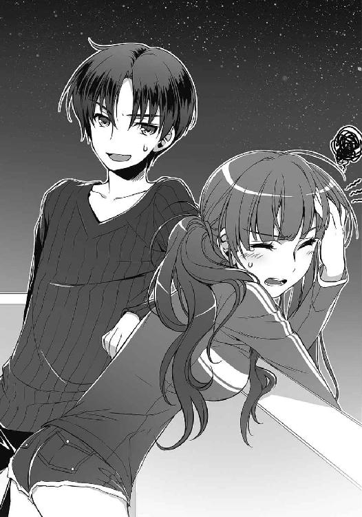
彼女が唇を尖らせる。
「そういえば、何か思いついたみたいね」
「きっきっき、まーな。そのへんは明日説明してやるよ。ミクニに確認しておくこともあるしな」
「そ。だったら、楽しみにしてるわ」
それっきり会話が途切れ、二人はしばらく無言でいた。
満月が浮かぶ夜空の下、どこからか聞こえてくる虫の鳴き声に耳を澄ませる。
あるとき吹いた風が、レヴィアタンの青い髪をやさしく揺らした。それが合図だったかのように、彼女は口を開いた。
「......言い忘れていたんだけど」
21号はレヴィアタンを見た。彼女はうつむき、恥ずかしそうに顔を赤らめていた。
「助けてくれて、ありがと」
「レヴィアタン？」
「他のみんなにはずっと前に伝えたんだけど、英雄に捕まってた貴方にだけは言えなかったから」
「......礼なんていらねえよ。オレだって昨日はお前に助けられたしな。それで貸し借りなしだろ」
「そんなわけないじゃない」
彼女は言った。
「初めて特訓した日のこと覚えてる？ 飛ぶことも、水で攻撃することもまともにできなくて......貴方たちと戦えば全戦全敗」
「ああ。ありゃひどかったな」
「ええ。絶望したもの」
くすりと笑い、レヴィアタンは21号に向き直った。
「でも、貴方は『強くなれる』って言ってくれた」
剣のような鋭い美貌を月明かりが照らしていた。初めて会ったときは氷のように冷たかった瞳には、今、暖かな光が宿っていた。
「貴方がそう言ってくれたから、私は頑張れた。英雄たちに殺されそうになったときも、貴方が守ってくれたから......みんなが来てくれたから......私は、今──ここにいる」
レヴィアタンは晴れやかに言った。
「私は弱いわ。だから、貴方たちが必要よ。一緒に戦ってくれる、戦闘員さん？」
「............きっきっき......くくく、はははははははははははっ！」
「ちょっと。みんなが起きるでしょ。笑ってないで答えなさいよ」
「わりいわりい。けど、そんなわかり切ったこと訊くなよ」
21号は不敵に笑い、彼女に言った。
「勝つぞ、レヴィアタン」
「......ええ」
レヴィアタンが微笑む。
月明かりに照らされたベランダで、戦闘員と怪人は、戦いへの決意をあらたにした。
７
会議と訓練を繰り返し、日々を過ごすうちに三週間が経過した。作戦はすでに固まり、あとはレコードスフィアの出現を待つばかりとなっている。
21号はジジと朝食を食べていた。隊長ちゃんの計らいで、今日は久しぶりの休みになっていた。他の戦闘員たちも決戦に想いを馳せながら、各々の時間を過ごしているだろう。21号も果たさければならない約束があった。
味噌汁をすすって一息を入れると、21号は言った。
「ジジ。デート、どこに行く？」
ご飯を口に運んでいた彼女が箸を止め、小首を傾げた。
「デート......ですか？」
「ああ。約束しただろ？ 作戦とか全部決まったらデートしようってさ」
「いつですか？」
「え？」
「いつ、約束したんですか？」
「オレの救出祝いのとき」
「............記憶にありません」
「『デートをしましょう』って言い出したのはジジだぜ？」
「私が？」
「ああ」
「噓です」
「本当だって。まさか酒飲んでて覚えてないのかよ？ ジャバウォックとか姫宮桜とデートして、自分としないのは不公平だって言ってたじゃねえか」
ジジは一瞬きょとんし、
「っ......！」
目を見開いて、顔を真っ赤にした。
「ジ、ジジ？」
「待ってください。落ち着かせてください」
ジジは早口でそう言うと、お椀と箸をテーブルに置き、耳まで赤くしたままうつむいてしまった。
「本当に......そう言ったんですか？」
「ああ、まあ......」
「そう、ですか......」
よほど恥ずかしかったらしく、ジジはぴくりとも動かなくなってしまった。
「....................................もうお酒は飲みません」
顔を赤くしたまま、囁くような声でジジが言った。
「きっきっき」
「笑わないでください......！」
キッと鋭い視線を投げてきたジジに、21号は言った。
「で、どこに行く？」
「え？」
「デートだよ。ジジは覚えてなくても、約束したからな。それにせっかく休みだ。外に出ないともったいねえだろ？」
「ニーイチ......」
「どこにする？ 遊園地とか、この前行った臨海公園とか──」
21号は思いつくまま候補を挙げていく。最初は戸惑っていたジジだったが、やがて表情を和らげ、口を開いた。
「でしたら......行きたいところがあります」
†
一時間後──21号とジジは、Ｓ区の街を二人で歩いていた。
人々の声や自動車のエンジン音が、肌寒くなった空気の中を浸透していく。大通りの両脇に建ち並ぶビルは色とりどりの看板で装飾され、少し目にうるさかった。
「二人でこんなふうに歩くのは、ジャバウォックを捜していたとき以来ですね」
「だな」
雑踏の中を、二人は他愛もない話をしながら歩いた。
街頭のクレープ屋でのんびりし、洋服店や本屋を見て、ゲームセンターで遊び、昼食をファーストフードで取る。色々寄り道をしながら、21号たちは目的の場所にやってきた。
鼻を突く排気ガスの匂い。整備された道路を、次々と自動車が走り抜けていく。目立つような何かがあるわけでもなく、ただそれだけの場所だった。
「こんなところでよかったのかよ？」
「『こんなところ』なんて言ったら、ジャバウォックが怒りますよ」
ジジが行きたいと言ったのは、ジャバウォックの死んだ場所だった。墓参り、と言ってもいいのかもしれない。
「ニーイチは一度来ているんですよね？」
「ああ」
「私は、あれ以来初めて来ました」
ジャバウォックが英雄と戦い、散ったその場所を、21号とジジはぼんやりと眺めていた。
あの日の傷跡は完全に修復され、戦いの名残を見つけることはできなかった。本当にここで彼女が死んだのかどうかも疑わしいほどに、何もない。今にも後ろから「やあ、ニーイチ」なんて気さくな声が聞こえてきそうだった。
「......黒野さん？」
背後から聞き覚えのある声が聞こえ、21号は驚いて振り返った。
そこには、予想した通りの人間が立っていた。
「姫宮......さん」
「こんにちは。偶然ですね」
英雄──姫宮桜が微笑んだ。
『ニーイチ、どうしますか？』
すかさず、ジジから〈通信〉が飛んでくる。
『とりあえず合わせてくれ』
そう返事をして、21号は姫宮に笑いかけた。
「奇遇だな。どうしたんだよ、こんなところで」
「え？ えっと......」
姫宮は口ごもり、車道に目を向けた。
「黒野さんは、ここを覚えていますか？」
「......ああ。ここで英雄機関に囲まれたっけな。姫宮さんもすげえ怖い顔しててさ」
「あ、あのときは私も緊張してたんですっ」
「で？ 今日ここに来たことと何か関係あるのか？」
姫宮は一瞬ジジに目をやって、そして言った。
「『戦いから逃げたくなったことはある？』」
21号は息を飲んだ。
それは、ジャバウォックが姫宮に問いかけた言葉だった。
「最近、彼女の質問をよく思い出すんです。あの質問は......彼女が逃げたかったからじゃないかって」
力なく笑う姫宮に、21号は何も言えなかった。
「アルスマグナの怪人や戦闘員も、みんなそれぞれ意志を持っているんだって、最近そう感じるようになったんです。そう思ったら......急に彼らを倒すのが怖くなってしまいました」
「......そういうの、オレたちみたいな一般人に言っていいのかよ」
「駄目だと思います。内緒にしてください」
桜は困ったように笑った。
21号はため息をつき、言った。
「ったく......そんなこと気にしてんのかよ」
「え？」
「姫宮さん。あんた、どうして戦ってるんだ？」
「......守るためです。みんなを守りたいから、私は戦っています」
それは心からの想いなのだろう。さきほどまでとは違い、彼女は、はっきりとそう答えた。
「じゃあ、それでいいじゃねえか。難しく考えることなんてねえんだよ。アルスマグナの奴らだって、どうせ好き勝手な理由で暴れるんだろ？ だったら、そっちはそっちで好きなように──守るためにブチのめせばいい」
「黒野さん......」
「それに、約束したじゃねえか。アルスマグナを倒してオレたちを守り抜くって。もう忘れたのかよ？」
「......そうでしたね」
姫宮が照れくさそうに笑う。
「ありがとうございます。ちょっとすっきりしました」
「英雄さまのお役に立てたんなら光栄だな」
「もう。だから、『英雄さま』はやめてください」
「きっきっき！」
21号は肩を揺らして笑った。いつものように。
姫宮が驚いたように目を見開き──寂しげに笑った。
ふと、電話の着信音が聞こえた。姫宮が手に提げていた鞄から携帯電話を取り出し、短い会話の後に通話を切った。
「呼び出されちゃいました。私、戻りますね」
「ああ。またな」
「黒野さん」
こちらを見上げる彼女の瞳は真剣で──それなのに、今にも泣き出しそうに見えた。
「私、負けませんから」
21号は笑みを返す。
「ああ。頑張れよ」
「それでは......黒野さん、鈴さん。さようなら」
姫宮が別れを告げる。21号は手を上げて、ジジは軽く頭を下げた。
英雄の背中が遠ざかっていくのを見届ける。
「よかったんですか、元気づけるようなこと言って」
「いいんだよ」
ジジは呆れてはいるものの、怒ってはいないようだった。
「ジャバウォックはすごいですね。ニーイチだけじゃなくて、英雄にまで影響を与えるなんて」
車の行き交う道路を見つめ、ジジがぽつりと言った。
「ずっと後悔していました......」
「ジジ？」
「気づいてはいたんです。ニーイチが心の底では勝ちたいと思っていることに......。なのに、私にはあなたの背中を押すことができなかった......。一緒に戦って勝ちましょうと、そう言えばよかったのに。それさえできなかったんです」
囁くように、彼女は言った。
「ニーイチ。私はジャバウォックにはなれません。彼女のように、あなたの背中を押せません。それでも、あなたの隣にいていいですか？」
不安げにこちらを見上げる彼女に、21号は笑って言った。
「ジャバウォックになれなんて言わねえよ。オレは、ジジにいてもらわなきゃ困る」
「......」
彼女の目から涙が流れたのを見て、21号は驚いた。
「ジ、ジジ!? なんで泣いてんだよ？」
「え？ あ......すみません」
彼女は謝りながら涙を拭い、そっと顔を上げた。
「......ニーイチ」
「なんだ？」
「勝ちましょう」
21号は、にやりとする。
そして、道の先を指差した。
「オレたちも行こうぜ。せっかくのデートだ。もっと楽しまないとな」
「はい」
ジジが微笑む。
21号が歩き出すと、彼女は、たたっと三歩走って隣に並んだ。
その日の夜──。
次のレコードスフィアの出現日時と場所が明らかになった。
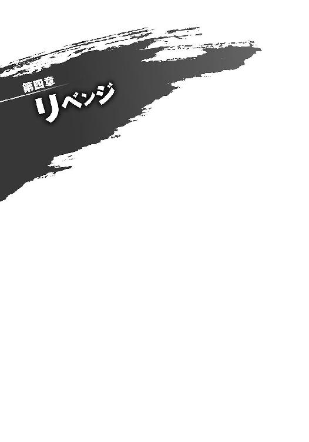
１
「......夢だな」
静寂に包まれた街の中で、21号は呟いた。
Ｓ区に似た街並み。しかし、見渡す限りのどの建物も、照明が消されて薄暗い。溢れるほどいるはずの人間も、道路を走る車もない。抜けるような青空の下、21号は車道の真ん中を歩き、寂しげに建ち並ぶビルの間を歩いていた。
これが夢だということは、すぐにわかった。なぜなら、彼女が前を歩いていたからだ。
「ん？」
くるりと少女が振り返り、赤い髪が鮮やかに揺れた。
「何か言った、ニーイチ？」
──ジャバウォック。
イタズラっぽい彼女の笑みが、ひどく懐かしい。
21号は小さく笑って首を振る。
「いいや、なんでもねえよ」
「ふうん。ま、いーや」
首を傾げ、彼女は再び歩き出す。21号も、彼女の背中を追うように歩を進めた。
死んだような街の中を、二人で歩く。
ジャバウォックとのデートも、確かこんな感じだった。彼女が前を歩き、21号がその後ろを尾行する。あのときは彼女が21号の腕に抱きついて、無理矢理並んで歩かされた。
しかし、夢の中の彼女は楽しげな後ろ姿を見せたまま、21号の前を歩き続けている。
「その様子じゃ、元気にしてるみたいだな」
夢だとわかっていても、話しかけずにはいられなかった。前を歩くジャバウォックが、憮然として言い返してくる。
「僕、死んでるんだけど？」
「きっきっき。知ってるよ」
「そう言うニーイチは？ 元気だった？」
「まあな。相変わらず英雄には勝てねえし、体がおかしくなったり、奴らに捕まったりもしたけど。ま、なんとかやってるぜ」
「ジジたちも？」
「ああ」
「そっか。うん、それならよかった。でも、君には『お前がいなくて寂しかった』とか言って欲しかったんだけどなー」
「言うか、馬鹿」
「冷たいなぁ」
くすくすと笑うジャバウォック。
「......おっと」
彼女が声を上げ、立ち止まった。
それまで整然と延びていた道路が、荒れ果てたものへと変わっていた。
アスファルトが砕け、辺りには横転した車や、ガラス片が散乱している。
それは、英雄との戦いの跡。
「僕はここまでだ」
ようやく振り返った彼女は、笑っていた。挑発的で、何もかもをからかうような笑みだ。
21号にはわかっていた。
ここは、彼女が死んだ場所だ。
ジャバウォックの肩越しに、21号は荒れ果てた道路の先を見た。
ずっと向こう、まだまだ遠くに思える場所に、鎧を身に着けた英雄たちが立っていた。
〈紅蓮〉。
〈水蓮〉。
〈金剛〉。
〈疾風〉。
〈桜花〉。
圧倒的な力を誇る正義の味方。
「いってらっしゃい、ニーイチ」
「......ああ」
気がつけば、21号の後ろには大勢の仲間が立っていた。ジジやロクロク、隊長ちゃん、35号ら【生存者】と、あの決戦の後に生まれた戦闘員たち。
そして、怪人レヴィアタン。
ジャバウォックを失い戦闘員だけで戦うことになった、あの日とは違う。
21号は、ずっと向こうにいる英雄たちを睨みつけた。
足を前に踏み出す。
ジャバウォックは、やはり笑っていた。ほんの少しだけ、寂しそうに。
すれ違う瞬間、彼女の囁きが耳に届いた。
「勝てるよ」
夢の中でも、相変わらず彼女は無責任だ。
21号は口元を吊り上げて、背後にいる彼女に言い返した。
「──────」
†
決戦当日。午後一時二十五分。戦闘員たちの雄叫びが作戦室を揺るがし、彼らを包んだ闇と共に消えていった。
怪人レヴィアタン。そして、戦闘員八十一名。
悪の組織アルスマグナ第二部隊──セカンドラボは、レコードスフィアの出現した街に〈転移〉した。
────作戦開始。
２
レコードスフィアが出現したという報告を受けた姫宮桜は、仲間と共に現場へ急行した。
今回スフィアが現れた場所は、都内のＳ区。先日、黒野たちと会ったばかりの街だ。
「システム【鎧】スタンバイ──召喚！」
鎧を装着した五人の英雄は、ビルからビルへ飛び移り街を駆けた。
人々の悲鳴と車両のクラクションが、津波のようにビル街に反響していた。スフィアの落下した駅前にアルスマグナの戦闘員が現れたらしく、駅へと続く大通りは氾濫した川さながら逃げ惑う人々で溢れている。恐怖でもって奏でられる悲鳴とクラクションの不協和音が街を飲み込んでいた。
「ねえ、桜」
そんな中、並走する青い鎧──〈水蓮〉を身に纏った草薙青葉が気軽な声をかけてきた。前方には〈紅蓮〉と〈金剛〉、後ろには〈疾風〉がついてきている。
「なんですか？」
「最近、黒野とはどうなのよ？」
流線型の兜から表情は読み取れないが、彼女がにやにやしているのは見えなくてもわかった。
「別に何もないですよ」
苦笑混じりに桜は答え、ビルの屋上を強く蹴る。跳躍する〈桜花〉の横に、〈水蓮〉もぴったりとついてきた。
「怪しい......」
跳んだ先にあったビルの上に着地し、桜たちは再び駆ける。
駅に近づいていくにつれ、眼下の大通りを逃げる人の数が少なくなってきた。避難が済んだエリアまで来たようだ。
「わかった！ この前家に行ったとき会えなかったっていうの、あれ噓ね？ そのときに何かあったんじゃない？」
反応したのは後方にいる隼人だった。
「家!? なんか前より話進んでない!?」
「何よ、隼人。盗み聞き？」
「き、聞こえてきたんだよ！」
先を行く緋崎たちを追って、青、緑、桃色の鎧が空に軌跡を描く。
桜は言った。
「本当に何もないんです」
「へー。ま、いいわ。あとでじっくり聞かせてもらうから」
『止まれ、みんな』
緋崎の声が鎧の通信機能を介して聞こえてきた。
〈紅蓮〉と〈金剛〉が、オフィスビルの屋上に着地し、こちらに振り返る。不思議に思いながら、桜たちも彼らのもとに着地した。
「どうかしたんですか？」
「レーダーを表示しろ......」
黄瀬の指示に従い、桜は〈桜花〉のレーダー表示をオンにした。英雄機関のスフィア検知技術が応用されたレーダーは、周辺にあるレコードスフィアの位置を正確に示してくれる。
視界の隅に映された周辺地図が、駅前に現れたスフィアの位置を──
「──え？」
思わず声が漏れた。
「なんだ、これ？」
「どういうこと？」
隼人や青葉も戸惑っていた。
レコードスフィアの位置は地図上に光点で表示される。最初に確認したときは確かに一つであったその光が、五つに増えていた。それも駅前の一箇所ではなく、街の各所に散らばって存在している。
「ついさっき、新たに四つのスフィアがレーダーに検知された......」
「アルスマグナの仕業だよ」
隼人が言った。
「何をやったのか知らないけど、そうに決まってる」
「同時に出現した例は過去にもあるぞ......」
「だからって、五つっていうのはできすぎですよ。絶対罠だ」
「だが......」
「スフィアを回収しないわけにはいかない」
黄瀬の言葉を継いだのは、リーダーである緋崎だった。
「鎧がスフィアで創られているなら、なおさらだ。それに、アルスマグナが現れることを考えると放っておくわけにもいかないさ。司令も同じ意見だ」
隼人が押し黙る。
「時間を無駄にできない。作戦を伝える。各ポイントに一人ずつ向かおう。スフィアを回収次第、近くにいる他のメンバーと合流してくれ。最初に現れたスフィアのところには俺が行く。あとは──」
緋崎が次々と場所を指定する。機動力に優れた青葉が最も離れた位置にあるスフィア。桜はここから東へ二キロほど離れた地点に現れたスフィアを回収しに行くことになった。
「何かあったらすぐに連絡してくれ。無理はするな」
〈紅蓮〉が背を向け、叫んだ。
「行くぞ！」
全員が散開する。
桜も【舞華】を複数展開し、空に道をつくった。風を切り、飛ぶように空を駆ける。
桜が向かっているスフィアの出現地点は、奇しくも先日黒野と会ったところだった。以前、自らを「史上最強」と名乗った怪人と戦い、打ち倒した場所だ。
あの日、一人の戦闘員が黒野の妹──鈴を人質に取り、怪人を救い出そうとしたことを思い出す。今ならわかる。あのとき生き延びた戦闘員こそ、本部から逃げ出した彼──英雄に勝ちたいと告げた戦闘員だ。
「......見つけた！」
目標地点に辿り着き、桜は地上に飛び降りた。
かしゃん、と硬質な音を立ててアスファルトの車道に着地する。
すでに避難がなされたためか、道を走る車はない。
そのかわり、道路を陣取るように青い髪の怪人──レヴィアタンが、戦闘員を引き連れて立っていた。すらりとした肢体は青く澄んだ鱗で覆われ、見惚れそうになるほど美しい。頭に生えた二本の角や、両腕の鋭い爪、背に生えた翼は、いずれも竜を連想させた。口元に微笑をたたえた竜の怪人は、けれど剣を突きつけるかのように鋭い視線をこちらに向けている。
レヴィアタンの背後には、戦闘員たちが控えている。その数およそ二十体。フルフェイスメットのような流線型の頭部に、インナースーツを纏ったかのような紫黒色の体。鋼色の外骨格が、肩や腕、胸部や脚部など、体のところどころを覆っている。右手に形成された獣の如き爪が、彼らの攻撃性を象徴していた。
桜は視界の隅のレーダーに目をやり、レコードスフィアが確かにここにあることを確認してから、表示を消した。
深呼吸をする。
思えば、少し前から違和感はあった。
ある出撃で、戦闘員たちが戦わずに時間を稼ぎ、こちらの鎧を解除させようとしたことがある。あの作戦は、おかしい。明らかに鎧の装着時間に限界があることを知ってのものだ。
本部からデータを奪われた今ならともかく、あの時点で、アルスマグナが鎧について知っていることは多くなかったはずだ。なのに、稼働制限だけは知っていたことになる。
鎧の装着時間に限界がある......そのことだけを知っている人物に、桜は心当たりがあった。鎧を使いたいと言った彼を諦めさせるために、緋崎が稼働制限の要因である装着時の負荷について教えたのだ。
考えないようにしていた。
信じたくなかった。
彼は検査で人間だと断定された。臨海公園に現れた魔獣から、自分を守ってくれた。
けれど、桜はわかってしまった。
論理的な思考ではなく、正義の味方の直感として。彼が愉快げに笑った姿に、あの戦闘員を重ねて見てしまった。
「............」
桜を待ち受けていた戦闘員たちの中に、一体だけ、ほんの少し全身が暗く変色している個体がいた。
彼を見つめ、桜は呟く。
そう──。
「やっぱり戦うんですね......黒野さん」
黒野双一は、悪の組織の戦闘員だ。
３
隊長ちゃん──戦闘員１号は、事前の報告どおり〈紅蓮〉が大通りから駅前に向かってくるのを見て、気を引き締めた。変身した彼女の体は男と違ってしなやかな曲線を描き、背丈も他の女戦闘員と同じくらいに変わっている。
『戦闘員１号から22号へ。ポイントに〈紅蓮〉が現れました！』
『了解。他のポイントにも英雄が現れたと報告がありました。作戦を進行します』
『はい、お願いします！』
返事をしてすぐに、ジジの〈全体通信〉が聞こえてきた。
『戦闘員22号から全戦闘員へ。英雄の分断に成功。作戦フェイズ１クリア。フェイズ２に移行します』
様々なビルが建ち並ぶ大通り。彼女たち戦闘員から、十メートルほど離れたところで、真っ赤な鎧は立ち止まった。
１号は、ハズレと判定されたばかりのレコードスフィアを強く握った。
今回現れたスフィアは、駅前に落下したこの一つだけ。他の四つは、アルスマグナが過去に回収したハズレスフィアだ。英雄機関の検知を逃れるために施されていたコーティングを解除し、あたかも同時にスフィアが現れたかのように見せかけた。
街の各所に戦闘員が現れたというだけであれば、警察や自衛隊の増援を呼ばれる可能性が高い。しかし、英雄機関は、レコードスフィアだけは必ず英雄たちに回収させる。街に複数のスフィアが現れたのであれば、英雄たちに対処させるはずだと踏んでいた。あとは彼らの動きに合わせて、〈転移〉で各地に必要な戦力を配置すればいい。
「ずいぶん歓迎されているみたいだな......」
〈紅蓮〉を身に纏った緋崎が呟き、周囲を見回した。
今、この駅前には隊長である１号をはじめ、五十五人もの戦闘員が集結し、緋崎を取り囲んでいる。
緋崎と姫宮以外の英雄、草薙青葉、隼人、黄瀬大地の三人が向かった先には、偵察役の戦闘員がいるだけだ。その彼らも英雄がスフィアを回収した時点で駅前に〈転移〉し、緋崎との戦いに加わることになっている。
「デバイス──【焔】」
灼熱の剣を具現化し、〈紅蓮〉は両手でそれを掴んだ。刃が発する熱が、周囲の空気を歪めて見せる。
「悪いが、迅速にやらせてもらう」
大勢の戦闘員に取り囲まれながら、それでも緋崎は冷静だった。
自分が負けるとは微塵も思っていないのだろう。どんなに数がいようと、鎧を装着した英雄に戦闘員が敵うはずがないと、そう確信しているに違いない。
その通りだ。
戦闘員が何人いようと英雄には敵わない。
どう取り繕っても、それは揺るぎない現実だ。
「でも、簡単には行かせないですよ？」
隊長ちゃんは明るく笑った。
今から行われるのは、どれだけ長く〈紅蓮〉を引き止められるか──そういう戦いだ。
緋崎秀一を他の英雄と合流させてはならない。
リーダーである彼がいるだけで、英雄たちは個としてではなく、チームとしての力を最大限に発揮する。三体の魔獣ですら容易に打ち倒す力だ。セカンドラボの戦力では太刀打ちできない。他のどの英雄を捨ておいてでも、緋崎はこの場で足止めしなければならなかった。
「いくぞ！」
灼熱の大剣を構え、〈紅蓮〉が強く地を蹴った。英雄たちのリーダーが悪を薙ぎ払うべく猛進してくる。
１号は、隊長室で読み耽った戦闘記録を思い出していた。
この戦いは、自分たちだけのものではない。これまでに生まれ、戦い、そして消えていった大勢の戦闘員たち──彼らの想いを背負っての戦いだ。
ここで〈紅蓮〉を倒すことはできない。彼女の戦いは、すでに敗北が約束されている。
「それでも──勝つのは、わたしたちです!!」
彼女の叫びに呼応するように、戦闘員たちが一斉に雄叫びを上げた。
４
かつてジャバウォックが死んだ場所で、21号は〈桜花〉──姫宮桜と睨み合っていた。
まっすぐに延びる四車線の道路。点々と並ぶ信号機が赤から青に表示を変える。白いガードレールの向こう側には誰もおらず、束の間の静寂が下りたこの場所で悪と正義だけが対峙していた。
「21号は知っているかな？」
隣に立つ35号が不意に言った。ここに集められた22名の戦闘員は、以前の決戦を生き抜いた【生存者】と呼ばれる者たちだ。戦闘員だけで出撃したあの戦いで、35号は生身の姫宮桜を抑える『桜花隊』の部隊長をしていた。
「あの子、あれで結構おっかないんだよ」
苦笑交じりに彼が言う。
姫宮が何かを呟いた。次の瞬間、〈桜花〉の手元に光が集まり、細長い剣が形成される。柄に装飾が施されたそのレイピアは、〈桜花〉の単独戦闘時の武器だ。
21号は身構える。
レヴィアタンが、右手を〈桜花〉に向けた。広げた掌の前、虚空から水が際限なく引き出され、瞬く間に球状に練り上げられていく。巨大な水塊が渦を巻き、内部の圧力を高めていった。
「さあ、派手に行くわよ」
そして、レヴィアタンが戦闘開始を告げた。
「ウォーターパイル!!」
彼女が右手を握り締める。巨大な水塊が押し潰されるように爆ぜ、球の中心から高出力の水流が放たれた。
同時に21号は地を蹴った。発射された水流を追うように走り出す。
〈桜花〉の前に薄紅色をした光の盾が出現した。ウォーターパイルが盾に炸裂し、爆音がビル街に反響する。レヴィアタン渾身の激流は【舞華】に弾かれ、膨大な水飛沫を散らすことしかできなかった。
「駄目か......！」
先頭を行く21号は舌打ちをした。
今の一撃は小手調べだ。レヴィアタンの一撃が【舞華】を貫くことができるかを確認しておきたかった。
姫宮桜を倒すということは、彼女の持つ絶対防御──【舞華】を破るということだ。力技で破ることができれば話は変わっていたのだが、それが不可能とわかった以上、当初の作戦を遂行するしかない。
「オオオオオオオオッ！」
後ろに続く仲間たちの咆哮に後押しされ、21号は英雄に向かって駆けていく。
〈桜花〉を守る盾が音もなく消失し、彼女はレイピアをゆらりと持ち上げた。
迎え撃つ気だ。
「らあッ！」
21号は地を踏み抜かんばかりに足を道路に叩きつけ、右手の爪を〈桜花〉めがけて突き出した。が、身を捻って躱される。何もない空間を右手が裂いた。
体勢を崩しながら振り向いたとき、目前の〈桜花〉はすでに攻撃態勢をとっていた。レイピアを持つ右手が弓を引くように構えられ、もう一方の手は21号との距離を測っている。
間髪いれず、鋭い刺突が放たれた。
狙いは心臓。21号は左腕で胸をかばった。衝撃で後ろに吹き飛ばされる。刺された腕に燃えるような痛みを感じながら、21号は道路を転がっていった。
追撃はない。仲間たちが〈桜花〉を囲んでいた。
『平気か、ニーイチ！』
『ああ！』
ロクロクからの〈通信〉にすぐさま答える。腕の傷はすでに完治。疲労もない。21号は立ち上がり、再び〈桜花〉に向かっていった。
戦闘員が四方八方から〈桜花〉に襲いかかる。しかし、彼女は動じることなく、それらを捌いてみせた。まるで寄せつけない。花びらのように舞い、ときには鋭い突きで悪を刺す。
戦闘員と英雄の力の差は歴然だった。
しかし、消滅した戦闘員はまだいない。
「まだまだぁ！」
戦闘員たちが吼え、英雄に躍りかかる。
姫宮桜が身に着ける〈桜花〉は、防御特化型の鎧だ。【舞華】という絶対的な守りを持つ一方で、攻撃力は他の鎧に比べると著しく劣る。
過去の戦闘記録を見れば、そのことは明らかだ。これまで数え切れないほどの戦闘員が消滅させられてきたが、その中で姫宮桜が消滅させた人数は極端に少ない。
彼女のレイピアは、急所さえ突かれなければ耐えられる。初出撃のルーキーであれば、あっさりやられることもあるかもしれないが、ここにいるのは決戦を生き抜いた【生存者】だ。出撃経験も多く、瞬時の判断で致命傷を避ける術にも長けている。そう簡単にやられはしない。
「デバイス──【舞華】！」
何かに気がついた姫宮が、咄嗟に光の盾を展開した。
そこに水の弾丸が炸裂した。盾に防がれた水弾が飛沫を散らす中、姫宮が警戒を強めるのが伝わってくる。
21号たちのいる場所から数十メートル離れた地点。
怪人レヴィアタンの周囲に、大量の水弾が浮かんでいた。
『桜花隊、退避！』
ジジの〈通信〉を合図に、戦闘員たちが道路の脇に飛び退いた。レヴィアタンと姫宮の間に障害物がなくなる。
「ウォーターバレット！」
いくつもの水弾が〈桜花〉に向かって放たれた。姫宮は【舞華】で弾丸を防ぎ続ける。
実際には、一つ一つの弾丸にウォーターパイルのような威力はなく、当てたところでそこまでダメージを与えることはできない。
水弾は、あくまで牽制。
怪人である彼女が、戦闘員を援護するためのものだ。
「隙だらけだぞ、英雄！」
ロクロクが盾の横から〈桜花〉に飛び掛かった。退避していた他の皆も一斉に攻めに転じる。
姫宮の判断は早かった。【舞華】を消失させて後方に跳躍。ふわりと一回転して、数メートル先にあった街灯の上に着地する。
盾の消えた場所には大勢の戦闘員たち。レヴィアタンの水弾が皆に直撃──する前に、ぴたりと静止した。
「えっ？」
街灯の上で姫宮が動揺する。
ウォーターパイルのような威力がない代わりに、水弾の動きはレヴィアタンの制御下にある。静止した水の弾丸が急激に軌道を変えて、再び〈桜花〉を狙った。
「くっ......！」
飛び降りる〈桜花〉。街灯にいくつもの水弾が炸裂し、ポールの先がひしゃげて曲がって吹き飛んだ。
「ウオオオオオオオッ！」
道路に着地した〈桜花〉に戦闘員たちが突進する。対する彼女は左手をかざし、叫んだ。
「デバイス──【舞華】！」
姫宮の宣言をトリガーに、絶対防御の盾が展開される。
突如出現した巨大な光が戦闘員たちの突進を阻んだ。先頭を行っていた35号たちが盾に弾かれ、後続の仲間が苛立たしげに足を止める。
その様を、21号は後方から目にしていた。
英雄との距離は約十メートル。目の前には最強の盾と──見知った一人の戦闘員。
「ロクロク、背中借りるぜ」
「なっ──うおっ!?」
言って、21号はロクロクの肩を踏み台に高く跳躍した。【舞華】を飛び越え、アスファルトに着地。地を蹴って〈桜花〉に迫る。
「オオッ！」
「はっ！」
〈桜花〉がレイピアを突き出した。
21号の頭部を貫くはずだった細剣は、直後、軌道を横に逸らした。〈桜花〉との間に水飛沫が散る。レヴィアタンの水弾が盾を回り込み、〈桜花〉の手を撃ったのだ。
メット状の頭部をレイピアが滑り、21号は頬に熱を感じた。しかし、目の前の英雄には致命的な隙がある。
21号は一本のフラスコを〈出現〉させた。封のされた細長いガラスビンを左手で掴む。フラスコの中は、薄青色の液体で満たされていた。
「らあッ！」
21号の左掌底が〈桜花〉の兜を捉えた。
衝撃が腕を貫く。手の中のフラスコが砕け、中の液体が〈桜花〉を濡らした。
「きゃっ......！」
地面を転がった〈桜花〉が、すぐに体勢を立て直す。
ようやく一撃を与えたが、所詮は戦闘員の攻撃だ。鎧を身に着けた姫宮には、ほとんどダメージがなかっただろう。彼女も、戦闘員の攻撃ならば少しぐらいもらっても構わないと考えているかもしれない。
だとしたら、それは大きな勘違いだ。
21号は、周囲の生体反応を読み取った。ロクロクや、35号たち【生存者】──そんな仲間たちの反応に混じって、目の前の〈桜花〉からも微弱な反応を感じ取ることができた。
『どうだ、ジジ？』
英雄と睨み合いながら、21号はジジに〈通信〉する。ビルの上からこの戦いを見守る彼女は、涼やかな声で返答した。
『〈桜花〉へのエーテル付着、ならびに生体反応を確認しました。他の皆も確認済みです』
【エーテル】は、地下基地の巨大フラスコに入れられている培養液だ。ホムンクルスの創造過程で、個別に創られた核から情報を読み取り、身体を形作るあらゆる組織に変化する。器官や筋肉、皮膚や眼球。様々な細胞に変化し、個体に応じた生命を与えるのがエーテルだ。
戦闘員たちは互いの生体反応──エーテルの特徴を読み取ることで、個体識別を行うことができる。〈桜花〉から感じ取れる識別不可の生体反応は、彼女に浴びせたエーテルからくるものだ。
この距離なら、目を瞑っていてもその位置を捕捉できる。
『他の英雄は？』
『草薙青葉、隼人、黄瀬大地の三名は、レコードスフィアを回収して移動しています。報告を聞いた限りでは、おそらくこちらに向かっているかと』
『急がないとまずいな......。指示は頼んだぜ、ジジ』
『了解しました』
ジジが仲間たちに声を飛ばす。
『戦闘員22号から桜花隊へ。これより、〈桜花〉の撃破に移ります』
ジジの宣言と同時に、21号は背後から冷気が迫ってくるのを感じた。〈桜花〉を身に纏った姫宮も驚愕をあらわにする。
「きっきっき」
肩を揺らし、21号は笑った。
「悪いな、姫宮。勝たせてもらうぜ」
前方に伸びる道路と建ち並ぶビル。
突如発生した霧が、それらを一瞬で飲み込んでいった。
５
姫宮桜は真っ白な世界に、たった一人で立っていた。
本来なら発生し得ない濃霧が辺り一帯を覆っている。数メートル先を見通すこともできず、前方にいた戦闘員たちの姿も霧の中に消えていた。
「これは......」
山での戦いのときと同じだ。おそらく怪人レヴィアタンの能力だろう。
だが、あのときと今回とでは、明らかに能力発現の意図が違う。
「どこから来るか、わからない」
きっとそれが狙いだ。
〈桜花〉の特殊兵装【舞華】には、具現化するまでにタイムラグが発生しやすいという弱点がある。使用時には桜の発声が必要な上、他の皆と違い、盾を展開するたびに位置やサイズもイメージしなければならないからだ。
桜は視覚や聴覚から得た情報をもとに敵の攻撃を予測し、事前に盾を展開するという使い方で、その弱点を補ってきた。だが、周囲を霧に覆われ、視覚情報のほとんどをカットされた今、いつものように攻撃予測をすることは不可能だ。
脳裏をよぎるのは、怪人の攻撃。
ウォーターパイル。あれの直撃を受ければ、〈桜花〉を装着していても無事ではすまない。
桜は、斜め後方に移動した。
視界が遮られているのはアルスマグナも同じだ。位置を変えれば、狙いをつけることもできないはず。
そう思った瞬間、視界を覆う真っ白な霧の中から五体の戦闘員が現れた。
「きゃっ......！」
桜は後ろに跳躍した。
飛び退いた先にも戦闘員たちが待ち受けていた。襲い掛かってくる彼らをいなし、レイピアを振るって追い払うと、桜は再び横に跳ぶ。跳躍を繰り返し、見えざる敵との間合いを離そうとするが、そのたびに彼らは精確に桜の位置を追ってきた。この真っ白な世界で。
「どうして？」
音でばれているのだろうかと考えたが、すぐにさきほどのことを思い出した。
「さっきの攻撃......！」
全身が暗く変色した戦闘員。21号に殴られたとき、謎の液体をかけられた。
彼の攻撃は、こちらにダメージを与えることが狙いだったのではない。〈桜花〉に、この霧の中でも位置を察知できる細工をすることが目的だったのだ。
霧の流れがわずかに変わった。
──来る！
「デバイス──【舞華】！」
わずかな情報から脅威を察知し、桜は光の盾を展開させた。
甲高い音と共に光が散る。
受け止めたのは水流ではない。
暗くくすんだ鋭い爪。
戦闘員21号だ。
光の盾の向こう側で、彼が【舞華】に爪を突き立てていた。不気味なまでの気迫を感じ、桜の背筋に冷たいものが走る。
「デバイスリロード！」
桜は空中にいくつもの【舞華】を具現化した。
高く跳躍し、盾を足場に空を駆け登る。
この場は撤退するべきだと、桜の直感が告げていた。
一気に数十メートルを駆け上がり、黒野のことが気になって下に目を向けたところで──唐突に霧が晴れた。
そのとき桜が目にしたのは、下方に広がっていた霧が幾筋もの流れに束ねられ、上空に引き上げられていくところだった。濃霧が消え失せ、車道からこちらを見上げる戦闘員たちの姿があらわになる。
「怪人がいない──？」
翼が風を撃つ音が耳に届いた。
顔を上げると、そこに翼を広げたレヴィアタンがいた。霧は彼女の手元に集められ、一つの巨大な水塊と化している。
上空に退避することを読まれていた。
すぐに盾を展開しようとしたが、手遅れだった。
「ウォーターパイルッ!!」
渦を巻く水塊が爆ぜる。高出力の水流に捉えられ、桜は強い衝撃を受けて吹き飛ばされた。
６
21号は〈桜花〉にウォーターパイルが直撃する瞬間を車道から見ていた。
桃色の鎧は近くのビルに叩きつけられ、コンクリートの壁に大きなひびを入れた。
射出された水が飛沫となって消えていく中、陥没した壁から〈桜花〉とコンクリートの欠片が剥がれ落ち、音を立てて歩道に落下した。
21号の隣に、レヴィアタンがゆっくりと降下してくる。霧の生成は体力をかなり消耗するらしく、彼女は息も絶え絶えに訊いてきた。
「倒したの......？」
「ああ」
頷き、21号は歩き出す。
〈桜花〉の装甲が輝き出した。鎧は溶けるようにその輪郭をぼやけさせ、ぐにゃりと波打ったかと思うと、光そのものと化して空中の一点に集まっていく。
すべての光が集まったとき、姫宮の身を守っていた鎧は消えていた。宙に形成されたカードが、ふっと輝きを失い、歩道に倒れた桜のもとに落下する。
21号は彼女の前で立ち止まった。
「ぁ......」
姫宮が喘いだ。まだ意識はあるらしい。
21号はしゃがみ、彼女に触れようとして、
「くろ、の......さ......」
想定外の呼びかけに、思わず手を止めた。
躊躇した瞬間──砲撃のような銃声が聞こえ、左腕が爆炎に包まれた。
「ぐあっ......！」
腕を押さえ、21号は後ろに飛び退いた。【異常再生】が発現し、怪我が瞬時に修復される。全身が影に飲まれたように黒く染まった。
幾度となく鳴り響く銃声。銃弾は21号の足元を狙い、次々と地面に着弾する。避けているうちに姫宮からどんどん遠ざかり、やがて21号はガードレールを飛び越して車道に退避した。
すると、青い鎧がビルの上から降ってきた。姫宮のもとに着地し、彼女を軽々と抱え上げる。
「〈水蓮〉......！」
機動力特化型の鎧を身に纏い、草薙青葉が姫宮を抱えて後退した。
道路を駆け、向かった先にいる〈疾風〉──草薙隼人と合流する。彼はこちらに銃口を向けて立っていた。
『大丈夫ですか、ニーイチ!?』
『ああ、問題ない！』
ジジの問いに、21号は英雄から目を逸らさず返答した。
「はっ......相変わらず、簡単にはやらせてくれねえな」
さすが正義の味方というべきか、嫌なタイミングで現れてくれる。人質に取るつもりでいた姫宮桜を、あっさり奪還されてしまった。
「けど、まあ」
不敵に笑い、21号は避ける前に掴み取ったもの──〈桜花〉の召喚カードに目をやった。
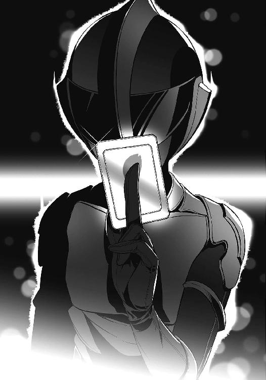
「欲しいものは手に入った」
さらに左手から黒いカードを〈出現〉させると、奪い取った姫宮のカードと重ね合わせる。
桃色のカードの表面に回路図のような模様が浮かび上がり、それが黒く侵食されていく。
『戦闘員22号から全戦闘員へ。〈桜花〉の撃破に成功。作戦フェイズ２クリア。フェイズ３に移行します』
ジジの声が聞こえたとき、21号の手には真っ黒になった召喚カードが握られていた。
「きっきっき！ さあ、ヒーローショーを始めようぜ!!」
21号は愉快げに叫ぶ。
鎧を一からつくる必要なんてない。
悪の組織らしく、欲しいものは奪い取ればいい。特殊兵装【神風】を奪い、〈疾風〉を倒したときのように。
「システム【鎧】スタンバイ！」
〈水蓮〉と〈疾風〉が信じられないといった様子でこちらを見つめている。
黒く染まった〈桜花〉のカードを、21号はスナップを効かせて上へと放り投げた。
くるくると回転するカードは21号の真上に。そして──
「──召喚!!」
カードから溢れ出た闇が、戦闘員の体を包み込んだ。
７
草薙隼人は目の前の光景を信じることができなかった。
両脇にビルが建ち並ぶＳ区の道路。アルスマグナの怪人や戦闘員と並び、そこに人の形をした機械が立っていた。
顔全体を隠す流線型の兜。肩や胸はもちろんのこと、指や足先に至るまで、全身が機械装甲に包まれている。右腕だけは形状が変化し、戦闘員のものと思われる鋭い爪が露出しているが、その姿形はまぎれもなく姫宮桜の鎧──〈桜花〉のそれだった。しかし、本来なら銀と桃色を基調にしているはずの装甲は、今、禍々しい闇色に染まっていた。
「黒い......〈桜花〉......？」
愕然と隼人は呟く。
そのとき、アルスマグナの怪人──レヴィアタンが動いた。
掲げた右手の上に、瞬く間に巨大な水塊が形成されていく。
「っ......させるか！」
隼人は【神風】を怪人に向け、トリガーを引き絞った。
「デバイス──」
戦闘員の声が聞こえたのは、そのときだ。
「【舞華】!!」
前方の空間に、灰色の盾が展開された。隼人の放った銃弾が、盾の表面で爆発する。
「そんな......！」
「隼人！ 避けなさい！」
姉の叱責で隼人は我に返り、横に跳んだ。
灰色の【舞華】が消え、それと同時に、高出力のウォーターパイルが放たれる。レーザーの如き激流がすぐそこを過ぎていき、想像以上の威力に隼人は背筋を寒くした。
（桜さんはこれを受けたのか？）
「「「「オオオオオオオオッ！」」」」
戦闘員たちが雄叫びを上げて駆けてくる。それを睨みながら、隼人は姉に言った。
「......姉貴。桜さんのこと頼んでいい？」
「馬鹿。あんた一人でどうする気？ 桜一人抱えてても、私は戦えるわ」
「駄目だ」
青葉の反応は予想通りのものだったが、引き下がる気はない。
戦闘員たちに向け、両手の【神風】を一斉掃射。再び【舞華】で防がれたが、戦闘員たちの突進を食い止めることはできた。隼人は弾を撃ち切った銃を背後に捨てる。
「桜さんを安全なところに連れて行ってあげてよ。ここは俺が食い止めるから。生身の桜さんを抱えてたんじゃ、最高速は出せないだろ？」
「あんた──！」
「頼むよ、姉ちゃん」
青葉が息を飲んだ。
彼女のことをそう呼んだのは、いつ以来だろうか。
姉は一瞬迷いを見せたが、すぐに厳しい声で言ってきた。
「......負けたら許さないわよ」
「ははっ」
隼人は笑う。
「忘れたの？ もう負けないって言ったじゃん」
その言葉に満足したのか、両腕に桜を抱えたまま〈水蓮〉が背を向けた。アスファルトを蹴り、退却していく。
「デバイスリロード」
新たに具現化された二丁の銃を、隼人は両手で掴み取る。
戦闘員たちがすぐそこまで来ていた。
「フゥ─────......」
隼人は深く息を吐いた。
怒りで頭がどうにかなりそうだ。だが、冷静さを失ってはいけない。
敵を侮るな。
奴らは戦闘員だ。
「来いよ」
「ガアアアアッ！」
五体の戦闘員が飛びかかってくる。
次の瞬間、そのうち二体が爆炎に包まれていた。早撃ち。残った三体の攻撃を躱し、隙だらけになった一体に膝蹴りを見舞う。崩れ落ちたその戦闘員の頭部を【神風】で撃ち抜きながら、別の戦闘員を蹴り飛ばす。残った一体に照準を向けたとき、ようやく灰色の【舞華】が展開された。
──遅すぎる。
一瞬のうちに三体の戦闘員が吹き飛ばされ、頭部を撃ち抜かれた一体は消滅していった。後続の戦闘員たちが足を止め、じりじりと隼人との間合いを測っている。
「今の、桜さんなら全員守ってたよ」
黒い〈桜花〉を睨みつけ、隼人は言った。
何をしたのかはわからないが、あの戦闘員は確かに〈桜花〉を装着した。だが、だからといって桜のように扱えるわけがない。盾の強度も、展開する位置も、タイミングも、桜のそれに比べればすべて見劣りする。
当然だ。
姫宮桜という少女は、二年以上も〈桜花〉を身に纏い、皆を守ってきたのだから。
「お前さ、何をしたのかわかってる？ その鎧は......〈桜花〉は、桜さんのものだ。桜さんの正義なんだぞ......」
隼人は知っている。
皆を守りたいという桜の想いを。守ってきた多くの命を知っている。隼人が助けられたことも一度や二度ではない。
見知らぬ誰かを守るため、彼女は命を懸けられる。躊躇なく危険に飛び込み、やさしく微笑むことができる。
草薙隼人は、そんな彼女に憧れた。
「それを──！」
隼人は【神風】のグリップを握り締めた。
見据えるは黒い〈桜花〉。アルスマグナの戦闘員が身に着ける、偽物の鎧。
「──悪が使うな!!」
大地を蹴って、隼人は吠えた。
８
アルスマグナ地下基地──第七階層。戦況報告を受けた会議室は騒然となっていた。
勝ち目がないと思われていたセカンドラボが〈桜花〉を撃破。それに留まらず鎧まで奪取したという。ファーストラボの幹部たちの心にも「まさか」という不安が芽生え始め、彼らの驚愕と不安の入り混じった声が部屋に反響していた。
「パラケルスス......貴様、何をした？」
憎悪のこもった声は、プロフェッサー・ヘルメスのものだった。
パラケルススは言った。
「【鎧】のクラッキングだよ。英雄が持っている召喚カードの権限をクラックしたんだ」
黒いカードは、彼女がつくった【鎧】のクラッキングツールだ。
英雄を倒しても、彼らの鎧は壊れない。より正確に言うなら、特殊兵装と同じく、システムを構成するレコードスフィアが尽きない限りは何度でも具現化できる。
英雄に一定以上のダメージを与えることができれば、鎧は自動的に解除され、召喚カードに変化する。そのことは、以前〈疾風〉を撃破したときに21号が確認していた。
「あとは戦闘員に合うように鎧の形状を改変したり......まあ、カラーリングはサービスだけどね」
「そんなことが......」
「別に驚くようなことじゃないよ。英雄一人を倒すことに比べたら簡単だ」
そう言って、パラケルススは微笑んだ。
「約束は覚えている？ 英雄五人の撃破。先に達成したほうに負けたほうは絶対服従......それは、あなたたちも同じだ」
幹部たちの顔が歪んだ。
部隊の二分化を決めたとき、パラケルススの約束と同じ条件をファーストラボの面々も飲んでいる。ただ、それは彼らにとって起こり得ない事態のはずだった。今さっきまでは。
「調子に乗るな」
プロフェッサー・ヘルメスの唸るような声が響いた。
パラケルススの席の周囲に、五つの闇が出現した。〈転移〉の闇から現れたのは、漆黒の毛に覆われた狼だ。
喉を震わせ唸る五体の魔獣は、今にも彼女の首に喰らいつかんばかりだった。
「......どういうつもり？」
「酔狂で貴様のわがままに付き合ってやったが、それもここまでだ。もはや勝負の行方など関係ない。戦闘員を廃止し、貴様には我らに従ってもらう」
「約束を守る気なんてなかった......そういうこと？」
「身のほどを弁えろ、パラケルスス。力に差がある者たちの間に、約束などというものは成り立たん。我らとお前が対等だと、本気で思っていたか？」
「なるほどね......それもそうだ」
パラケルススは、ぱちんっ、と指を鳴らした。
途端に狼たちの唸り声が止まった。彼女を睨んでいた五体の魔獣が、その金色の瞳を一斉にファーストラボの幹部たちへ向ける。
「なんだと......!?」
ヘルメスが目を見開き、他の幹部たちがどよめいた。
「どうしたの？ まさか、レヴィアタンにしたことを忘れたわけじゃないだろう？」
パラケルススは冷たく言い放つ。
「合図一つで主人が私に変わるように、フラスコに細工をしておいた。刷り込みみたいなものさ。おいおい、私の子供に好き勝手やっておいて、やり返されないと思っていたわけじゃないだろうね。それとも、細工されていることに気づくこともできなかった？」
「パラケルスス......！ 貴様あっ！」
ヘルメスが円卓に拳を叩きつけた。黒衣を纏う体は屈辱に震え、双眸には燃え上がるような憎悪を宿している。
「約束は守ってもらう。黙って結果を待っていろ」
五体の魔獣を従えて、ドクター・パラケルススは幹部たちに言い放った。
９
銃声が轟き、Ｓ区の街に戦闘員の悲鳴が響く。
エメラルドグリーンのリボルバーから放たれた銃弾が、戦闘員たちに衝撃と爆炎を見舞った。吹き飛ばされて道路を転がっていく彼らに、〈疾風〉は容赦なく銃口を向ける。
「デバイス──【舞華】!!」
とどめを刺そうとした追撃の銃弾を、灰色の盾が阻んだ。
しかし、草薙隼人はそれを気にする素振りもない。レヴィアタンの放った水弾を回避しながら、彼は銃を投げ捨て、新たに兵装を再具現化した。
「くそっ！」
鎧を装着した21号とレヴィアタンが援護しているというのに、〈疾風〉によって三体の戦闘員が消滅させられていた。生き残っている皆も【神風】に撃たれて負傷している。
草薙隼人は冷静だ。無理はせず、〈水蓮〉や他の鎧がここに到着するのを待つ気でいる。
二人の英雄が揃えば戦況はかなり苦しくなる。三人ともなれば絶望的だ。なんとしても〈疾風〉はここで仕留めなければならない。
『ニーイチ、レヴィアタン』
頭の奥でジジの声が響く。
『このままでは、いたずらに戦力を削られるだけです。二人で〈疾風〉を撃破してください。......できますか？』
『やるしかないだろ』
ジジの判断は正しい。〈通信〉ができないレヴィアタンも同じことを考えているだろう。
21号はまだ〈桜花〉を扱い切れていない。大勢の戦闘員を援護することは、負担が大きすぎた。それならば、守る相手を自分と怪人だけに絞ったほうが、まだましだ。
『戦闘員22号から桜花隊へ！ 戦闘員は一時退避してください！』
彼女の指示で、戦闘員たちが名残惜しそうに〈疾風〉のもとから退いていく。
どこまでも延びる四車線の道路。その中央で、21号は緑色の鎧と対峙する。〈疾風〉の背後、その上空には、レヴィアタンが翼をはためかせて浮遊していた。
『レヴィアタン。ウォーターパイルの準備をしとけ』
〈桜花〉の欠点といえる攻撃力の欠如は、鎧を奪った21号にもそのまま当てはまる。ウォーターパイルが、英雄に対してダメージを与える最も効果的な手段であることに変わりはない。
21号は機械装甲に包まれた拳を何度か握った。肩を回し、その場で少し飛び跳ねる。笑えるほど体が軽い。単純に力が増している感覚もある。今なら、右手の爪も十分に武器として通用するだろう。
「......行くぜ」
銃声が轟く。〈疾風〉が放った弾丸を21号は身を横にして回避し、アスファルトを蹴った。
中・遠距離攻撃を得意とする〈疾風〉に対して、間合いを取っていても始まらない。
接近戦だ。
銃を手に〈疾風〉が腰を沈めた。近距離でも分があると判断したのか、逃げる気はないようだ。
黒と緑──二つの鎧が交錯する。
21号は、胸の装甲をめがけて爪を突き出した。
──ガギンッ！
風を裂いた21号の爪は、交差した二つの【神風】に受け止められていた。
銃身の長いエメラルドグリーンのリボルバー。〈疾風〉はそれらを二本の短剣のように扱い、爪を弾き返す。押し返され、体勢を崩した21号の眼前に【神風】の銃口が突きつけられる。
「〈桜花〉を返せ」
ゼロ距離射撃。
首を横に傾ける。鎧の聴覚フィルタを通して銃声が21号の耳に届き、熱がすぐ横を過ぎていった。
安堵している暇はない。〈疾風〉がもう一方──左手の【神風】をこちらに向けようとする。
21号は彼の腕を掴み、動きを抑える。封じた腕を思い切り引きつけて、〈疾風〉の兜に頭突きを喰らわせた。
「ぐっ......！」
金属質な音が鳴り響く中、〈疾風〉が腕の拘束を振りほどき、よろめいた。21号は追撃の爪を繰り出す。
しかし、次の瞬間、〈疾風〉の放った蹴りが〈桜花〉の腹部に打ち込まれていた。
「ぐぅ！」
蹴り飛ばされ、21号はアスファルトの上をがりがりと音を立てながら滑っていく。
身を起こそうとしたところで、銃がこちらに向けられているのを見た。
「デバイス──【舞華】！」
間一髪、展開が間に合った。銃弾が盾にぶつかり爆発する。
〈疾風〉が不意に横に跳び、彼がいた場所に水の杭が突き立てられた。砕かれたアスファルトが宙を飛ぶ。
「レヴィアタン！」
上空でレヴィアタンが悔しそうに顔を歪めていた。
〈疾風〉が空中に【神風】を乱射する。対するレヴィアタンは、複数の水弾を生成し、地上にいる〈疾風〉に向けて射出した。
回避しようとした隼人の動きを追従し、いくつかの水弾が緑色の鎧に直撃する。
が、やはりたいしたダメージにはならない。
この程度ならば多少受けても問題ないと判断したのか、隼人は回避をやめ、再び21号に向かって駆け出した。
「デバイス──【舞華】！」
前方に灰色の盾を具現化した瞬間、目の前から〈疾風〉の姿が掻き消えた。
「なっ──！」
「デバイスリロード！」
──上!?
宙を舞う鎧が上空にいた。半円を描くように回転した〈疾風〉は、新たに具現化した【神風】を下に向ける。
21号は動けない。
「しまっ──！」
「ウォーターパイルッ！」
斜め上方から降ってきた高出力の水流が、〈疾風〉を吹き飛ばした。
緑色の鎧が地面に叩きつけられ、アスファルトの上を転がっていく。
空を見上げると、レヴィアタンが肩で息をしながらこちらを見つめていた。
「く......」
二十メートル以上を吹き飛ばされた〈疾風〉が、アスファルトに手をついて身を起こした。レヴィアタンの攻撃は完全に隙を突いていたはずなのに、隼人は咄嗟の反応で身を捻り、直撃を免れたのだ。
よろめきながら、〈疾風〉が立ち上がる。
ウォーターパイルは右肩に当たっていたらしく、だらりと下がった腕は動かせないようだった。しかし、鎧を通して伝わってくる彼の気迫は微塵も衰えを見せていない。
「悪いな。オレたちの勝ちだ」
21号の背後。上空で、レヴィアタンが虚空から水を引き出し、第二射の準備を始めていた。
紡がれていく水の塊。それを見上げ、隼人は言った。
「いいや、違うね。俺たちの勝ちだよ」
「「デバイス──」」
どこからか、二つの声が聞こえた。
「【氷槍】！」
「【雷鎚】......」
はっとして振り返る。
上空──レヴィアタンの練り上げた水の塊を、一本の槍が貫いた。渦を巻いていた水が一瞬で凍りつき、青い槍がレヴィアタンの肩に突き刺さる。
「レヴィアタン!!」
『避けてください、ニーイチ！』
ジジの声が響く。〈桜花〉を纏った21号の頭上に、薄い影が下りた。
──なんだ？
ふっと顔を上げる。瞬間、首筋にざわりと蟲が走った。
慌てて後方に跳んだ次の瞬間、〈金剛〉の振り下した【雷鎚】が落雷の如く地面に叩きつけられた。
轟音と共にアスファルトが陥没する。周囲一帯の車道に稲妻のような亀裂が走り、巻き起こった衝撃波がコンクリートと21号を吹き飛ばした。
「くっ......！」
空中で姿勢を立て直し、21号はなんとか両足で着地する。
塵が宙を舞う空間を、わずかな間、沈黙が支配した。
がらり、と──〈金剛〉の足元で、アスファルトの崩れる音がした。
「〈金剛〉......！」
黄色の鎧が特殊兵装【雷鎚】を肩に担ぎ、間合いを詰めてくる。
21号は右手をかざし、叫んだ。
「デバイス──【舞華】！」
絶対防御の盾が、振り下ろされた【雷鎚】を受け止めた。雷鳴が轟き、盾を通して凄まじい衝撃が伝わってくる。
そして、ピシリ──と、【舞華】に一条のひびが入った。
「冗談だろ......!?」
強度が足りていない。まだ使いこなせていないのか。
必死に盾を維持しようとするが、【舞華】は軋むような音を立て、次々とひびを走らせていく。
「ちっ！」
このままでは叩き潰される。
悪態をつき、21号は盾を維持したまま後ろに下がった。
背後を振り返ると、道路にレヴィアタンが倒れていた。
「大丈夫か、レヴィアタン!?」
「よそ見している暇があるの？」
〈水蓮〉がいつの間にか目の前まで迫り、〈桜花〉の兜を覗き込んでいた。
「はぁい♪」
草薙青葉は茶化すようにそう言って、21号を蹴り飛ばした。
硬いアスファルトに〈桜花〉の肩を打ちつける。飛ばされた先に、地に伏したレヴィアタンがいた。
「レヴィアタン！」
「大丈......夫......」
彼女が苦しげに呻く。〈水蓮〉の【氷槍】が突き刺さった肩が凍っていた。すぐに槍を引き抜いたらしく、全身を凍らされるまでには至っていない。
状況は最悪に近かった。
前方の道には三つの鎧。こうなった以上、各個撃破は見込めない。本当なら、こうなる前に〈疾風〉を潰しておかなければならなかった。セカンドラボの戦力で、三人の英雄を相手にすることは不可能だ。
21号とレヴィアタンにとどめを刺すべく、英雄たちが迫ってくる。
そのときだった。
「「「「ウォォオオオオオオオオオオオオオオオオ!!」」」」
重なり合う雄叫びがビル街に反響し、21号の鼓膜を揺らした。
後方からやってきた黒い異形の者たちが、次々と21号たちを追い抜いていく。
無意識に生体反応を読み取り、21号は彼らが誰なのかを理解した。
「お前ら......！」
どいつもこいつも、知った顔だ。
生き残った十八人の【生存者】が、三つの鎧に向かって駆けていく。そんな中、一人の戦闘員が21号の前で立ち止まった。
「立てるな、ニーイチ？」
戦闘員66号──ロクロクが、背を向けたまま問いかけてきた。
「ロクロク......」
「答えろ、ニーイチ。立てるな？」
「あ、ああ」
「よし」
ロクロクは満足気に頷いた。
「ここは俺たちが食い止める。ニーイチ、お前はレヴィアタンを連れていけ！」
そして彼自身も雄叫びを上げ、英雄たちに立ち向かっていった。
10
戦闘員66号──ロクロクは、振り返ることなく全速力で駆けた。21号なら自分たちの意を汲んでくれると信じていた。
先を行った戦闘員たちが英雄たちの足止めをしている。が、どれほどの時間を稼ぐことができるかはわからなかった。
殴り掛かれば躱されて、飛び掛かれば蹴り落とされる。待ち構えれば吹き飛ばされて、悲鳴を上げて宙を舞う。見慣れた光景がそこにあった。
だが、数秒だって構わない。少しでも時間を稼ぐのだ。
三人の英雄──〈水蓮〉、〈金剛〉、〈疾風〉は、戦闘員を殲滅してから21号とレヴィアタンを追うつもりのようだった。すぐに倒せると、そう判断したのだろう。彼らが時折言う「迅速に片づける」というやつだった。
──好都合だ。
〈疾風〉が【神風】の銃口を向けてくる。放たれた銃弾を回避したそこには〈水蓮〉が回り込んでいた。
「──ふっ！」
居合斬りを思わせる、鋭いミドルキックがロクロクを襲った。間一髪、両腕でガードしたが、そのまま蹴り飛ばされる。
「がはっ！」
たった一撃で意識が飛びそうになった。
気がつけば道路を転がっている。ようやく回転が止まると、灰色のアスファルトが視界を埋め尽くしていた。
これも、見慣れた光景だ。
「......ハッハッハ」
地面に手をつき、ロクロクは勢いよく立ち上がった。
「ハッハッハッハッハ！」
立ち上がったのは彼だけではない。
この場に残った十八人の戦闘員。あの決戦を生き抜いた【生存者】たちが、正義の味方を睨みつけて立っている。
英雄たちが戸惑い混じりにロクロクたちを見回した。少なくとも数人は戦闘不能にしたつもりでいたのだろう。
「舐めるなよ、英雄」
ロクロクは嘲笑うように言った。
「簡単だと思ったか？ 軽く捻ることができると、瞬殺できると思っていたか？」
それは単なる強がりだった。
戦闘員は正義の味方に軽く捻られるし、瞬殺させられる。その事実は変わらない。
だとしても──簡単にやられるつもりはない。
「生憎だったな。俺たちは、あの生意気な怪人に毎日吹き飛ばされてきたんだ！」
ロクロクは咆哮し、再び正義の味方に躍りかかった。
殴られ、撃たれ、蹴り飛ばされながら、それでもロクロクは立ち上がり、鎧を纏う英雄たちに突っ込んでいく。
一人、また一人と、仲間が黒い霧となって消えていった。最近よく話すようになった35号の生体反応も、いつの間にか感じることができなくなっていた。
まったく嫌になる。
自分たちと英雄の間には、覆ることのない圧倒的な力の差があった。
生まれたときから変わらない。腐り切った宿命だ。
戦いの最中だというのに、あの日のことを思い出す。
初出撃の前日のこと。
あの日、熱気渦巻く作戦室で、前に立っていた戦闘員が聞き捨てならない言葉を呟いた。騒いでいる皆には聞こえなかったかもしれないが、ロクロクは聞き逃さなかった。
思わず肩を掴み、振り返らせていた。
「......なんだよ？」
「お前、どういうつもりだ？」
目の前の戦闘員は、確かにこう言ったのだ。
──どうせ勝てない。
その場でさんざん言い争いをし、ついには殴り合いになった。喧嘩に気がついた隊長が止めてくれなければ、どちらかが消滅するまで続けていたかもしれない。
そうして迎えた初出撃で、ロクロクはその戦闘員に──21号に命を救われた。
ダークヒーロー。
初めて英雄に一矢報いた決戦の後、ロクロクは21号にそんな肩書きをつけて基地中に言いふらした。大袈裟すぎると、21号本人は呆れていたが。
大袈裟なものか。
少なくともロクロクにとっては、初出撃で彼に命を救われたときから、21号はヒーローのようなものだった。
だからこそ、彼が勝つことを諦めていたことが歯がゆかった。生き残るためだけに戦っていることが口惜しかった。
21号が勝つために戦うことを決意したとき──一番喜んだのは、ロクロクだ。
「ガッ──!?」
【神風】の銃弾が右肩で爆発した。薄煙を上げる肩を押さえながら、ロクロクはたたらを踏んで後ろに下がる。
目の前に、拳を振り上げた〈金剛〉が迫っていた。
「ハッ......」
ロクロクは笑った。
後悔はない。本当なら初出撃で消滅していたはずの自分が今日まで生き残ってきたのは、今このときのために違いなかった。
これでいいと、そう思う。
最後の瞬間、ロクロクは友に向けて声を飛ばした。
『勝てよ、ニーイチ』
11
レヴィアタンを抱えて街を逃げていた21号は、聞こえてきた〈通信〉に足を止めそうになった。
「......21号？」
腕の中のレヴィアタンが不思議そうに訊いてくる。彼女を抱く腕に力が入ってしまったようだ。
「なんでもねえよ」
21号は走り続ける。
怪人一人を抱えているものの、黒い〈桜花〉を纏った体は軽く、視界の中にあるビルが次々と後方に流れていった。
『ニーイチ、〈水蓮〉たちがそちらに向かいました』
ジジの声が聞こえた。
『〈紅蓮〉の足止めも五分ほど前に突破されています。隊長が生き残った六名を連れて一時撤退しました』
ロクロクたちはどうなったのか。
ジジはあの場に残って、彼らの戦いを見守っていた。皆がどうなったのかも知っているはずだ。しかし、21号は訊かないことにした。今はそれよりもやるべきことがある。
『......ここまでだな』
21号は立ち止まった。
Ｓ区の大通り。ここに来るまでに何度か道を曲がったが、英雄たちとの距離はそれほど開いていない。すぐに追いつかれるだろう。
「立てるか、レヴィアタン？」
「......ええ」
地面に下ろすと、彼女は少しふらついた。【氷槍】に刺された右肩を手で押さえ、息も荒い。どうにか立ってはいるが、飛ぶことは難しそうだ。
「ウォーターパイルは？」
「......あと二、三発ってところね」
「もうちょっとどうにかならないのかよ？」
「簡単に言わないでよ」
むっとするレヴィアタン。21号はため息をつき、駆けてきた道を振り返った。
「とにかく、逃げるのはここまでだ。緋崎に合流されると厄介だからな。その前に、あの三人を倒すぞ」
「ええ」
「......へえ」
青い鎧──〈水蓮〉を纏った草薙青葉が、二十メートルほど先に立っていた。
彼女のさらに後方からは、〈疾風〉と〈金剛〉がこちらに向かって駆けてくる。機動力に優れる彼女が21号たちを見つけ、その位置を他の英雄に伝えたのだろう。
「聞こえたわよ。誰を倒すって？」
「お前ら三人だよ。本当に聞こえてたのか？」
「強がるのはいいけど。さっきの奴らだって、時間稼ぎにしかならなかったじゃない。これで終わりよ。桜の分、たっぷりお返ししてあげるわ」
21号は言った。
「約三十分」
「え？」
「お前らが鎧を使っていられる制限時間だ。そうだろ？」
青葉は答えない。
しかし、ミクニ──ドクター・パラケルススが導き出した結果だ。間違っているとは思えない。
「けど、時間制限って、お前らが鎧の負荷に耐えられなくなるのが原因なんだろ？ ってことは、戦闘中に体力を消耗すれば、その分限界も近づいてくるってことだ」
「何を言って......」
「きっきっき！ ああ、そうさ！ オレたちがお前らにできることなんて、せいぜい時間稼ぎがいいとこだ。けどな、それでいいんだよ」
21号は不敵に笑い、言った。
「戦闘員の勝ちだ」
〈水蓮〉の三十メートル後方。こちらに向かってくる緑色の鎧が、ガシャン、と金属質な音を立てて膝から崩れ落ちた。
青葉が振り返り、戸惑いの声を上げる。
「......隼人？」
彼女の弟は地面に手をつき、立ち上がろうとしたが、体は言うことを聞かないようだった。糸が切れたように道路に倒れ込み、隼人が身に纏っていた鎧の装甲が輝き出した。エメラルドグリーンの輝きが空中の一点に集まっていき、やがて一枚のカードとなって地面に落下する。
〈金剛〉が地に伏した隼人に駆け寄る。その様子を青葉は呆然と見つめていた。
「装着限界？ 噓でしょ、まだ時間は......！」
「よそ見している暇があるの？」
レヴィアタンの呼びかけに、〈水蓮〉が弾かれるように振り向いた。
だが、遅い。
彼女がかざした右手の前で、大量の水が渦を巻き、球体を形成していた。
「ウォーターパイルッ！」
水塊が爆ぜ、球の中心から高出力の水流が発射される。
しかし、〈水蓮〉に向けてのものではない。
狙いは──草薙隼人。
鎧を失い、無防備になった英雄だ。
「っ！」
次の瞬間、射線上に〈水蓮〉が飛び込んでいた。
レーザー砲の如き激流を受け止めた彼女は、衝撃に耐えたのも束の間、一瞬で数十メートルを弾き飛ばされた。
悲鳴はなかった。
壊れた人形のように、〈水蓮〉が力なく道路を転がっていく。〈金剛〉の足元でようやく静止したとき、青い鎧もまた光と化した。意識を失った青葉を残し、〈水蓮〉がただのカードへ姿を変える。
残るは〈金剛〉──黄瀬大地ただ一人。
「はぁ......はぁっ......！」
苦しげに顔を歪めながら、レヴィアタンが再び射出の準備を開始する。
すぐさま第二射が放たれた。狙いは当然、無防備になった英雄だ。
両腕でガードを固め、〈金剛〉が倒れた草薙姉弟の前に出た。
轟音。
ウォーターパイルが〈金剛〉の巨体にぶち当たる。大量の水飛沫が舞い、しかし、鎧随一の耐久力を誇る〈金剛〉は、その場から微動だにしなかった。
「デバイス──」
激流を耐え抜いたとき、〈金剛〉の兜──目の部分にあるバイザーの奥が光ったような気がした。
「来るぞ！」
21号が叫ぶのと同時に、〈金剛〉がアスファルトを踏み抜いた。
「──【雷鎚】！」
重戦車の如く突進してくる黄色の鎧。踏み出す足の一つ一つが地面に亀裂を走らせる。立ち塞がるものはすべて吹き飛ばす迫力があった。
次のウォーターパイルが放たれるまでに片をつける気だ。
だが、耐久力に優れる〈金剛〉を一撃で倒せないことは想定済みだ。
「デバイス──【舞華】!!」
右手をかざし、21号は特殊兵装の名を叫ぶ。
灰色の盾は、〈金剛〉の目の前に展開された。飛び越える暇も、【雷鎚】で破壊する隙も与えずに、一瞬後には彼の突進を弾いている。
「っ──！」
わずかに仰け反った〈金剛〉は、体勢を立て直すと同時に【雷鎚】を盾に叩きつけた。【舞華】にひびが入る。砕け散る直前に、21号は呟いた。
「デバイスキャンセル！」
灰色の盾が掻き消える。力の行き場を失い、〈金剛〉がよろめいた。
レヴィアタンの準備は終わっていた。
盾もなくなり、彼女と英雄との間を遮るものは何もない。
「ウォーター......パイルッ!!」
三発目。最大出力で放たれた水撃が、〈金剛〉に直撃する。
「ぐ......ぅ............！」
激流を受け止め、黄瀬が耐える。レヴィアタンの渾身の一撃は、いまだに彼の巨体を動かすこともできていなかった。
「レヴィアタン、もう一発いけるか!?」
「今......やってる......！」
振り向くと、レヴィアタンが左手を空に掲げていた。〈金剛〉にウォーターパイルをぶち当てながら、さらに限界を超えてもう一つの水塊を練り上げていく。
「はああああああああああああああああっ！」
第三射が終わると同時に、第四射が放たれた。
「ぐ.........ぅぅぅぅぅうう......！」
連続で射出されたウォーターパイルを、〈金剛〉は真正面から受け止める。彼の背後には隼人と青葉がいる。避けることはできない。
「う......ぉぉぉぉぉおおおおおおおおおおおおおおおおおおお!!」
黄瀬が咆哮した。
両足で道路を削りながら、〈金剛〉が押し返されていく。しかし、黄瀬は倒れない。いくら押し返されようと、身を挺して仲間の盾となり激流に耐え続けた。
やがて、水が途切れ、消えていく。
隼人と青葉を背後に控え、〈金剛〉がようやく膝をついた。
装甲が静かに光に包まれ、鎧の装着が解除される。黄瀬大地はアスファルトに膝をつき、肩で息をしてこちらを睨んでいた。
「やった......の......？」
「レヴィアタン!?」
ぐらりと傾いた彼女の体を、21号は慌てて支えた。
「おい、大丈夫か!?」
「はぁ......はぁっ......」
レヴィアタンは、もはや立つこともままならないようだった。【氷槍】による負傷に加え、限界を超えてウォーターパイルを撃ったのが堪えたのだろう。
「......ちょっと離れてろ」
21号はレヴィアタンを地面に座らせると、倒した英雄たちを振り返った。
黄瀬は意識を失っていなかった。限界を迎える前に自ら鎧を解除したのだろう。
アスファルトに膝をついた彼は、背後の草薙姉弟を守るように21号を睨みつけている。その瞳から、諦めや絶望を感じ取ることはできない。そもそも黄瀬は感情を表に出すタイプではないが、あまりにも落ち着いている。
それはつまり、信頼しているということだ。
「任せたぞ、緋崎......」
「ああ」
黄瀬大地の傍らに、真っ赤な鎧が立っていた。
21号は拳を握り、その鎧を睨みつける。
〈紅蓮〉を纏った最強の英雄──緋崎秀一がそこにいる。
12
21号はレヴィアタンを残し、〈紅蓮〉に向かって歩き出した。一歩足を踏み出すたびに足元で金属質な音がする。その身は黒い装甲に包まれていた。
〈紅蓮〉もまた、黄瀬に仲間を任せて歩き出す。一歩ずつ、こちらに近づいてくる。
〈桜花〉を奪い取ったとはいえ、先の〈疾風〉との交戦では、レヴィアタンと協力してようやく互角以上といったところだった。〈紅蓮〉との一騎打ちとなれば、より厳しい戦いを強いられるのは間違いない。
『勝算はあるんですか？』
聞き慣れた涼やかな声が響いた。ジジからの〈通信〉だ。彼女もここに追いついて、付近にあるビルの上から21号を見下ろしているのかもしれない。
『さあ、どうだろうな』
とぼけた調子で21号は返す。〈通信〉の向こう側でジジがため息をつくのが目に浮かび、それがまたおかしかった。
『きっきっき！ ま、勝算なんてあってもなくても同じだろ』
そして、21号は立ち止まる。
同じく立ち止まった〈紅蓮〉を睨みつけ、彼は言った。
「ここで逃げる意味なんかねえよ」
「デバイス──【焔】！」
赤い光が収束し、いつしか〈紅蓮〉の手には長大な剣が握られていた。
黒い布の巻かれた柄を握り締め、〈紅蓮〉が剣を振るう。燃えるように赤い刃が風を薙ぎ、その熱風が〈桜花〉を装着した21号にも伝わってきた。
「行くぞ、戦闘員」
灼熱の大剣をゆらりと持ち上げ、〈紅蓮〉が大上段の構えを取った。
21号は答えずに拳を握る。
『ニーイチ』
ジジが言った。
凜としていて涼やかな、彼女らしい声で。
『ブチのめしてください』
『了解！』
21号は地を蹴った。一気に距離を詰め、【焔】の間合いに入る。
緋崎秀一は、その瞬間を見逃さない。〈紅蓮〉を纏った彼は、烈帛の気合と共に大きく踏み出した。
「はあああああああっ！」
「デバイス──【舞華】!!」
21号は叫ぶ。
かざした左手は上段に構えられた【焔】に向いている。
剣が振り下ろされる直前に、小さな【舞華】が〈紅蓮〉の頭上で赤い刃を受け止めた。
「何っ──!?」
剣を振ることができず、驚愕する緋崎。21号は、がら空きになっている彼の懐に踏み込んだ。
「オオオオオオオオオッ！」
突き出された鋭い爪が、鎧の兜に直撃した。
殴り飛ばされた〈紅蓮〉が道路に肩を打ちつける。緋崎はすぐさま立ち上がり、闇色に染まった〈桜花〉に剣を向けた。
21号は愉快げに笑う。
「きっきっき。驚いたかよ？」
鎧の使い方を間違っていたのだ。
姫宮桜と同じように〈桜花〉を使おうとしたところで、上手くいかないのは当たり前だ。彼女は守ることを正義とし、その正義のために今日まで鎧を使い続けてきた。その覚悟と修練に21号が及ぶはずもない。
だから、戦闘員21号として〈桜花〉を使う。
特殊兵装【舞華】を、防御ではなく攻撃に。
いつどこに展開すれば相手が驚くか、嫌がるかを思考する。剣と爪が交わる刹那の瞬間に、考え、考え、考え抜いて、相手の隙をつくるために盾を出す。
〈桜花〉の特殊兵装【舞華】は、姫宮にとっては確かに守りの力だっただろう。しかし、21号にとって彼女の盾は、いつも邪魔をしてくる存在だった。
「さあ、いつかのお返しは済ませたぜ」
21号は掌を上に向ける。〈紅蓮〉を睨みつけ、手招きをした。
「本気で来いよ！ 正義の味方！」
「はッ！」
瞬間、〈紅蓮〉が飛び込んできた。斜めに剣を振りかぶり、たった一歩で21号との間にあった距離を失くす。
「──後ろだろ！」
21号は振り返った。そこに、一瞬のうちに背後に回り込んでいた〈紅蓮〉がいた。彼の放った斬撃を、21号は姿勢を下げて回避する。
反撃をしようとしたところで、〈紅蓮〉が後ろに飛び退いた。
「逃がすかよ！ デバイス──【舞華】！」
灰色の盾が〈紅蓮〉の背後に現れ、壁となって彼の後退を止めた。バランスを崩した〈紅蓮〉が地面に着地し、そこに21号が殴り掛かる。
「オオオオオオオオオオオオオッ！」
「はああああああああああああっ！」
戦闘員と英雄の咆哮が交じり合う。
爪と剣が幾度も交錯し、互いの鎧を削っていく。
21号の爪が〈紅蓮〉の兜を削り、緋崎の斬撃が〈桜花〉の胸部を浅く斬る。灰色の盾が英雄の不意を突けば、灼熱の剣が戦闘員の策を見破り軌道を変える。閃くような攻防。生死をやり取りする一瞬が幾重にも重なり、永遠にも思える時間が二人の間を過ぎていく。
「ぐぅっ！」
横薙ぎの斬撃を躱した21号は、しかし続けて放たれた回し蹴りに反応できなかった。〈紅蓮〉の赤い脚が〈桜花〉の胴に突き刺さり、21号は呻き声を上げて蹴り飛ばされた。
道路に倒れ込む。そこに剣を携えた〈紅蓮〉が迫り──不意によろめいた。
「っ......！」
緋崎が足運びを誤るとは思えなかった。
鎧の稼働制限だ。緋崎の限界が近づいてきている。そのことを21号は確信する。
「どうした？ もう限界かよ？」
体勢を立て直した21号が挑発すると、緋崎が何かに気づいたように兜を上げた。
「お前、どうして......？」
「きっきっき。やっと気づいたか？」
〈桜花〉を奪ってから、21号は四人の英雄と交戦している。これまでに受けたダメージは、緋崎よりもずっと上だ。
しかし、それでも〈桜花〉は解除されずにいる。21号は鎧を装着し続けている。
まるで──稼働制限がないかのように。
「そうか！」緋崎が叫んだ。「あの再生能力っ......！」
「きっきっき！」
【異常再生】──頭部を破壊されてもなお死を許さない、まさしく異常な再生能力。鎧によって与えられる負荷も、敵から受けたダメージも、すべて【異常再生】で吸収できる。だからこそ、21号は今なお〈桜花〉を装着し続けることができていた。
「さあ！ 終わりにしようぜ、緋崎！」
21号は、回復していない〈紅蓮〉を蹴り飛ばした。赤い鎧が剣を持ったまま大通りを転がっていく。
脳裏をよぎるのは、ミクニの忠告だった。
──いつまでも再生できるってわけじゃないんだ。
鎧の負荷に耐えるために、今の21号は絶えず再生を続けているようなものだ。いつ【異常再生】が失われてもおかしくない。
能力が維持できている今のうちに倒す。
そう決心し、21号はアスファルトを蹴った。
前方の〈紅蓮〉が、ゆらりと立ち上がる。21号は構わず飛び掛かろうとして──そこで足が竦んだ。
「なっ......」
自分でも信じられなかった。
何かをされたわけではない。
ただ、〈紅蓮〉の兜がこちらに向いた。緋崎秀一に睨みつけられた。ただそれだけだ。だというのに、足が止まった。
「正義の味方の条件を知っているか？」
21号を睨みつけたまま、緋崎が言った。
追い詰められているとは思えない、驚くほど落ち着いた声で。
「悪より強いことさ。俺たちはずっとそうあり続けてきたし、これからもそれは変わらない。たとえ何があっても、最後には正義が勝つ。そうじゃないといけないだろう？ だから俺は──」
最強の英雄が、赤い剣を振り上げる。機械装甲に包まれたその身から、彼は業火のような闘志を放っていた。
「負けるわけにはいかないっ！」
轟──と【焔】が紅蓮の炎に包まれた。
踏み込みは一瞬。燃え上がる剣を手に、〈紅蓮〉が21号の目の前に迫る。
盾も回避も間に合わない。
肩に衝撃を感じた瞬間、21号は〈桜花〉を纏ったまま横に吹き飛ばされ、ビルの壁に叩きつけられていた。息が漏れる。歩道に倒れ込みそうになるのを、足を踏み出して、なんとかこらえた。
「......きっきっき」
亀裂の入ったビルにもたれかかりながら、21号は笑う。
「じゃあ、悪者の条件は正義より弱いことかよ？」
鎧はまだ解除されていない。【異常再生】が発現し、〈桜花〉の中で怪我が修復されていく。
が、そこで異変を感じた。
「ぐっ......！」
ぐらりと、視界が傾いた。しがみつくように壁によりかかる。心臓が激しく脈を打ち、全身が火と化したように熱くなっていく。
【異常再生】を使いすぎた副作用が、ついに現れたのかもしれない。再生能力自体はまだ残っているようだが、それもいつまで続くかわからなかった。
もともと戦闘員には過ぎた力だ。いずれは身を滅ぼすことになると覚悟はしていた。
だが、まだだ。まだ倒れるわけにはいかない。
「......最後には正義が勝つ？ その最後を変えるために戦ってるんだろうが！ くだらねえ条件なんかどうだっていい！ オレは勝ちてえんだよ!!」
いつしか視界が元に戻り、体も動くようになっていた。
まだ戦える。そう確信し、21号は周囲を見回す。レヴィアタンの姿はない。どうやら気づかれずにこの場を離れることができたらしい。
21号が〈紅蓮〉と交戦していたのは、レヴィアタンを守るためでもあった。彼女がいないのであれば、戦わずとも〈紅蓮〉を倒す方法がある。
「デバイス──【舞華】！」
右手を空に向け、21号は叫んだ。
路面と並行に、空中に【舞華】が複数具現化される。
21号は跳躍し、形成した狭い足場に飛び乗った。次から次へと飛び移り、両脇にビルが伸びる空間を駆け上がっていく。
〈紅蓮〉には遠距離の攻撃手段がない。強いて挙げるなら剣の投擲だが、その程度なら十分な距離さえ取れば防御も回避も容易だ。空中の〈桜花〉を倒す術を〈紅蓮〉が持たない以上、あとは21号の【異常再生】が切れるのが先か、緋崎が倒れるのが先かの我慢比べだ。
七十メートルほど上昇したところで、両側に建つビルよりも高く飛び出した。澄んだ青空が広がり、冷たい風が〈桜花〉の装甲に吹きつける。
21号は【舞華】に乗ったまま道路を見下ろし、違和感を覚えた。
──どこにいった？
緋崎がいない。
そして、両側にあるビルの壁が、下から上までところどころ砕けていた。破壊の痕は、二つのビルで高さが互い違いになっている。それはまるで、交互に蹴りつけたかのように──
『ニーイチ、上です！』
聞こえてきたジジの声に、21号は顔を上げた。
「〈紅蓮〉!?」
高く飛び上がった〈紅蓮〉が21号の上を獲っていた。赤い装甲が日の光を反射する。その手には、炎を纏った【焔】が握られていた。
「終わりだ、戦闘員!!」
「デバイス──【舞華】!!」
緋崎秀一が灼熱の大剣を振り下ろし、21号は具現化した盾でそれを受け止めた。ぶつかり合う剣と盾が甲高い音を響かせ、光を散らす。
「はああああああああああああああああああああああああああああっ！」
「ぐぅうううううっ......！」
緋崎の気迫に押し潰されるかのように、ピシリ、ピシリと、目の前で【舞華】に亀裂が入っていく。
「ふざ......けるなよ......！ まだ......まだだっ！」
ひびだらけになった灰色の盾。
その向こう側にいる〈紅蓮〉を睨みつけ、21号は叫んだ。
「勝つのはオレたちだ!!」
パリン──。
薄氷が割れるような音がした。
盾が砕け散り、粉々になった光の破片が宙を舞うのを、21号は見た。
衝撃。【焔】の直撃を受け、21号は真下に叩き落とされる。砕け散った足場。全身を包む光。〈桜花〉の召喚カードが風に飛ばされていくのを視界に捉える。一瞬で七十メートルを落下し、鎧を失った体がアスファルトの地面に叩きつけられた。
「が......はっ......!!」
朦朧とする意識。
21号の目は、青い空にいる〈紅蓮〉を捉えていた。
もはや手を伸ばす気さえおきない。また届かなかった。そんな想いが胸を過ぎていく。
全身は【異常再生】により修復されているが、〈桜花〉を失った今、もはや〈紅蓮〉に対抗する術は残っていなかった。
──負けだ。
自然落下を開始した英雄が、21号のもとに落ちてくる。最後の一撃を与えるために。
──勝てるよ。
すべてを諦めようとしたとき、21号は彼女の声を聞いた。挑発的で無責任な、ジャバウォックの言葉を。
夢に出てきた彼女に、自分はなんて言い返してやったのか。
拳を握る。痛いくらいに強く。この程度で諦めていいわけがない。
仲間に託された想いがある。
──勝てよ、ニーイチ。
「当たり前だ......！」
21号は吼えた。
「オレたちは、そのために生まれてきた!!」
そして、右手の爪で自らの胸を引き裂いた。
いつかニコラ博士が推測していたように、【異常再生】は心臓を──コアを中枢として発現する。手だろうと、腕だろうと、脚だろうと首だろうと、切り離された体のうちコアを持つほうが残り、もう一方は消滅する。
それならば──コアだけを切り離した場合はどうなるのか？
無謀で愚かな賭けだった。
だが、何もせずに負けるよりはずっといい。
「あああああああああああああああああああああああああっ!!」
斬り裂いた胸部が再生されるより早く、21号はそこからコアを引きちぎった。声にもならない激痛を感じ、全身から急速に力が抜けていく。
意識と体が消え去る前に、21号はコアを上空へ投げた。
†
意識を取り戻したとき、21号は空中にいた。〈紅蓮〉の上を獲っている。真っ赤な鎧を身に纏った英雄が兜だけをこちらに向けて、呆然と21号を見つめている。半ば無意識に伸ばした右手が、その兜を掴んだ。風を斬り裂き、〈紅蓮〉と共に落ちていく。
全身を創り変えるという無謀な再生に、記憶は錯綜し激痛が走る。
混濁する意識の中、それでも21号は、勝利だけを見つめていた。
「オオオオオオオオオオオオオオオオオオオオオオオオオオオッ！」
21号は、〈紅蓮〉の兜を地面に叩きつけた。
衝撃で右腕の骨が砕ける。21号の体は投げ出されるように道路を転がっていった。
束の間の静寂。
しばらく立ち上がることができず、21号は視界を埋め尽くす灰色のアスファルトを見つめていた。
腕に残る感触と激痛が意識を繋ぎとめている。痛みが消えない。ついにエネルギーが切れたのか【異常再生】は発現しなくなっていた。
黒く変色した手を地面についた。
よろめきながら立ち上がる。
数メートル先に、鎧を失った緋崎秀一が仰向けに倒れていた。赤いカードが、彼の手元に落ちている。
「はぁ......はぁ............はっ......」
21号は空を見上げる。
澄み切った青空を。
そして彼は────生まれて初めて、勝利の雄叫びを上げた。
13
咆哮が空に溶けていき、街が静寂を取り戻す。
21号は深く息を吐き、大通りの先に目を向けた。
数十メートル向こうで、黄瀬がこちらを睨んでいた。隼人と青葉も意識を取り戻したらしく、立ち上がろうともがいている。
消耗しきった英雄たちは、鎧を装着できないだろう。しかし、生身のままでも彼らは特殊兵装で戦うことができる。
──まだ終わりじゃない。
21号は、仰向けに倒れている緋崎秀一に目を向けた。
覚束ない足取りで彼のもとまで歩いていく。
「はぁ......はぁ......」
荒い息を整えながら、21号は英雄を見下ろした。夢の中にいるような妙な感覚がある。
「ぅ......」
緋崎が呻き声を上げ、うっすらと目を開けた。
彼はしばらくの間、ぼんやりと21号のことを見上げていたが、やがて思い出したように呟いた。
「そうか......負けたのか......」
ふっと表情を緩めると、緋崎は困ったように言った。
「ああ......悔しいな、これは」
21号は右手の爪を構えた。
緋崎は何も言わない。すべてを受け入れたように、目を閉じた。
リーダーである彼にとどめを刺す。それが、21号のやるべきことだった。
「......じゃあな」
短く別れを告げて、21号は、爪を振り下ろした。
──キィン！
右手に硬い手応え。
英雄を突き刺すはずだった爪が、宙で止まっていた。
21号だけでなく、緋崎までも目を見開き驚愕をあらわにする。
戦闘員と英雄の間に──薄紅色に輝く光があった。
「これは......!?」
光の盾──【舞華】。
〈桜花〉の特殊兵装が21号の爪を防ぎ、緋崎を守っていた。
顔を上げると、いつのまにか黄瀬たちの傍らに彼女の姿があった。
────姫宮桜。
白い指に挟まれた桃色のカードが、眩い輝きを放っている。緋崎との戦いで飛んでいったカードを回収したのだろう。
彼女は息を切らし、苦しげに顔を歪めながら、それでも仲間を助けるために戻ってきた。自らの命の危険も顧みず。
凜とした瞳が、21号を見つめている。
「デバイス......【焔】！」
緋崎が唸るように叫び、具現化した赤い剣を地面に突き立てた。
「どうやら、まだやられるわけにはいかないみたいだ......仲間が諦めていないのに、俺だけが諦めるわけにはいかない」
剣で体を支え、緋崎は最後の力を振り絞って立ち上がる。
彼の背後から、他の英雄たちが近づいてくる。
黄瀬大地、草薙青葉、草薙隼人、そして姫宮桜。
まだ諦めていないと、彼らの目が語っていた。英雄として最後まで戦うつもりだ。
「きっきっき！」
21号は笑った。自分でも何がそんなに嬉しいのかわからない。
「そうだ、そうこなくっちゃな！ 幕を引くにはまだ早すぎるぜ！」
気がつけば、21号の背後にも生き残った仲間たちが立っていた。
ジジ、レヴィアタン、隊長ちゃん、〈紅蓮〉の足止めをしていた戦闘員たち。オペレーションをしていたジジ以外は、全身が土にまみれ、傷だらけになっている。満身創痍だが、それは英雄たちも同じことだ。
ここまできたら小細工はいらない。
真正面からブチのめす。
「さあ！ 決着をつけようぜ、正義の味方!!」
緊迫した街に、21号の愉快げな咆哮が響き渡る。
そして、幾度となく繰り返されてきた悪と正義の戦いが、再開された。
エピローグ
雷鳴のような破砕音が、クリスマスイブで浮かれる恋人たちのムードを叩き壊した。
舞い散る粉雪と色鮮やかなイルミネーションが彩る夜の街。
駅前の広場に設置された巨大クリスマスツリーが、めきめきと音を立てて横に傾いていく。装飾のイルミネーションが次々と火花を散らして光を失い、大量のオーナメントが一足先に地面へ落下していった。ついさきほどまでロマンチックな気分でツリーを見上げていた人々が目を見開き、悲鳴を上げた。
ツリーが倒れる瞬間、押し潰されそうになった何人かが間一髪、難を逃れた。
いったい何が起こったのか把握できず、ざわめきの中、広場に横たわった巨大な倒木に誰もが目を奪われていた。
「......待ちくたびれたぜ」
一人の少年が、笑みを浮かべて呟いた。
ツリーには目もくれず、彼はへし折れた木の根本──そこに浮かんでいるレコードスフィアを見つめている。
「ですから、あまりにやけないでください。不自然です」
隣に立つ黒髪の少女が言った。白いセーターにスカート、脚にはブーツを履き、冬らしい出で立ちだ。それでも彼女は少し寒そうに、口元に手を当てて息を吐いた。
この場で平然としているのは、彼らだけではない。
「知っていますか、ししょー？ クリスマスイブは恋人と過ごすそうですよ」
「待ちなさい。それだと、こいつと一緒にいる私たちはどうなるわけ？」
子犬を思わせる少女が笑顔で話し、その隣で青い髪の少女が眉をひそめる。
混乱している人間たちは、彼らの場違いな会話に気づけない。
「あいつら、今日も来るかしら？」
スフィアを見つめ、青い髪の彼女が言った。
「来るに決まってるだろ。あいつらはあいつらで諦めが悪いからな」
「ふうん。懲りないわね」
「ああ」
「にやけていますよ、二人とも」
「きっきっき。それじゃあ、そろそろ人間どもにプレゼントを届けてやるか」
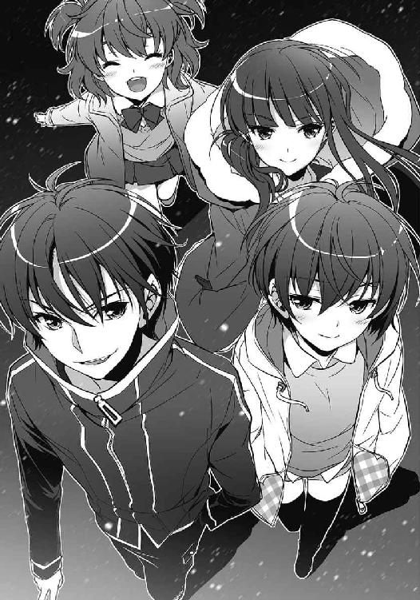
彼の言葉に、少女たちが微笑んだ。
「メリークリスマス」
歌うようにそう言って、彼は左手で、ポケットの中のスイッチを押した。
ブシュウと空気が勢いよく吹き出す音がして、広場の至るところで白い煙が噴出した。人々の悲鳴と街に響く陽気なクリスマスソングが交じり合い、心地良い狂想曲を奏で始める。
「きっきっき！」
煙に包まれ真っ白になった世界で、少年は牙を剥くように笑う。
「さあ、ショータイムだ!!」
その声は、人々の悲鳴に紛れて消えた。
やがて視界が晴れたとき──。
悪の組織の戦闘員が、聖夜の街にやってくる。
あとがき
和泉弐式です。このたびは『ＶＳ!!３』を手に取っていただき、誠にありがとうございます。少し遅くなってしまいましたが、無事に続きを出せてほっとしました。
「戦闘員たちは本当に勝てるのか？」
一巻のラストを書いたとき、ふとそんなことを思いました。
あの戦いで21号たちは負けています。一矢報いたものの、いつもと同じ『敗北』という結末に至りました。戦闘員である21号がやる気を出したからといって状況が一気に好転するわけではありませんし、五人のヒーローがそう簡単に勝たせてくれるとも思えません。一巻のラストも、希望があるように見えて、その先にはどうしようもない絶望が待っているだけなのではないか......そんな漠然とした不安がありました。今思えば、二巻を出すことを躊躇ったのも、私が彼らの未来から目を逸らしたかったからなのかもしれません。まあ、結局「史上最悪」のレヴィアタンをどうしても見せたくて続きを出しちゃったんですが......。
さて。ジャバウォックに救われた戦闘員21号が、一巻で変えることのできなかった結末を変えようとする──それが二巻と三巻の物語です。21号は弱いですし、失敗しますし、そもそも悪者なので決して褒められた奴ではないですが、自分の無力を知ってもなお、必死に足掻き続けます。それは彼だけではなく、ジジやロクロク、レヴィアタンや隊長ちゃんといった仲間たちも一緒です。圧倒的な力を誇る正義の味方に彼らは勝てたのか、21号は結末を変えられたのか、ここまで読んでくださった皆さまなら、おそらくご存知かと思います。
サブタイトルである『アルスマグナの戦闘員』は、『ＶＳ!!』のもとになった電撃大賞投稿作のタイトルであり、私が初めて書いた長編小説のタイトルでもあります。三巻のサブタイトルはこれにしようと、ずいぶん前から決めていました。一巻でやめるかどうか悩み、二巻を書いた後も不安と迷いのあった本作ですが、なんとかここまで書き上げた今、「続けてよかった」と思っています。できることなら、読者の皆さまにも「続いてよかった」と思えるものになっていれば嬉しいです。たまにでも読み返していただければ、なおのこと喜びます。
最後に、お世話になった方々に謝辞を。担当編集の黒崎泰隆さま、イラストレーターの白羽奈尾さま、表紙等デザインの木村デザイン・ラボさま、校閲さま、そして応援してくれた友人たち。本作に関わってくださった皆さまに、心よりお礼申し上げます。
それでは、本書を読み終えたあなたが、満足してこの本を閉じられることを祈っています。
以上。和泉弐式でした。
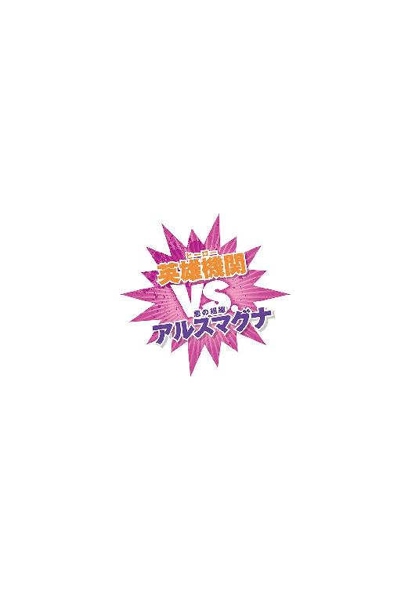
和泉弐式
２月22日生まれの神奈川育ち。
格闘ゲームが好きだが、いわゆる動画勢のザコ。
最近はプレイする余裕がなく、ほとんど観るだけ。
もともとザコなのに、さらに弱体化された。
白羽奈尾
毎回残りのページを気にして数えながら
もっと読みたいから終わらないで～と思ったほど
ステキな作品に出会えて幸せです。
終わらない、戦いもダイエットも！
 電撃文庫
電撃文庫
VS!! 3
─アルスマグナの戦闘員─
【電子特別版】
和泉弐式
発 行 2014年3月13日
発行者 塚田正晃
発行所 株式会社KADOKAWA
〒102-8177 東京都千代田区富士見2-13-3
03-3238-8745（営業）
http://www.kadokawa.co.jp/
プロデュース アスキー・メディアワークス
〒102-8584 東京都千代田区富士見1-8-19
03-5216-8399（編集）
http://dengekibunko.dengeki.com/
本書（電子版）に掲載されているコンテンツ（ソフトウェア／プログラム／データ／情報を含む）の著作権およびその他の権利は、すべて株式会社KADOKAWAおよび正当な権利を有する第三者に帰属しています。
法律の定めがある場合または権利者の明示的な承諾がある場合を除き、これらのコンテンツを複製・転載、改変・編集、翻案・翻訳、放送・出版、公衆送信（送信可能化を含む）・再配信、販売・頒布、貸与等に使用することはできません。
(C)2013 NISHIKI IZUMI
※この電子書籍は2013年1月10日発行の電撃文庫『VS!! 3 ─アルスマグナの戦闘員─』初版に基づき制作
※巻末には2012年6月8日発行の『電撃文庫MAGAZINE Vol.26』に掲載された『VS!! ─ファースト・コンタクト─』を収録
【電子書籍版特典】
ＶＳ!!
─ファースト・コンタクト─
この作品は、『電撃文庫ＭＡＧＡＺＩＮＥ Ｖｏｌ．26』に収録されたものの再収録です。
文庫版『ＶＳ!! ３ ─アルスマグナの戦闘員─』には収録されておりませんので、予めご了承ください。
（初出）
『電撃文庫ＭＡＧＡＺＩＮＥ Ｖｏｌ．26』（２０１２年発売）
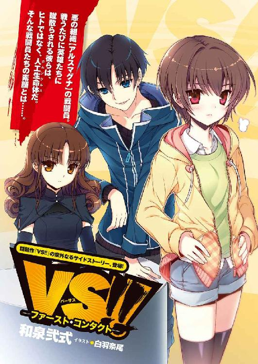
１
たった一撃。
それも、相手にとっては取るに足らない──渾身というにはほど遠い一撃で、彼女の体は十メートル以上も吹き飛ばされていた。
濡れたアスファルトの上に落下し、水飛沫を散らしながら転がっていく。ずっと続くようにも思えた回転は、人間が乗り捨てた車に激突することでようやく止まった。
灰色の空から降り注ぐ雨が、彼女の体を静かに叩く。
「く......ぅ......」
手離しそうになった意識をかろうじてつなぎとめる。街に轟く仲間たちの雄叫びが、彼女に眠ることを許さなかった。
軋むような全身の痛みに耐え、顔を上げる。
ビルが建ち並ぶ街並。普段はヒトと車が多く行き来するその場所に、黒い異形の集団が蠢いている。
悪の組織【アルスマグナ】の戦闘員。彼女の仲間たちだ。フルフェイスメットのように流線的な頭部。紫黒色のインナースーツを纏ったかのような体は、肩、腕、胸部や脚部など、ところどころを鋼色の外骨格に覆われている。なかでも右腕を覆う外骨格は鋭く尖り、獣の爪のようだ。変身をした彼女たち戦闘員は、姿形こそヒトに似ているが、まぎれもなく人外だった。
「ガアアアアアアアアアアアアアアアアッ！」
そんな戦闘員たちの中にあって、なお異質な存在──怪人が、咆哮を上げた。
怪人もやはりヒトをベースにしているが、体の大部分を灰色の鱗で覆われている容貌は、ヘビかトカゲのそれである。頭部の形はまさしくトカゲのようで、長く伸びた上下の顎に、細かい牙がギザギザと生えていた。
「ガアアアアアアアアアアアッ......！」
再び怪人が吼える。
だが、その咆哮は苦し紛れの威嚇に違いなかった。焦燥に駆られ、叫ぶことで自身の動揺を消し飛ばそうとするかのような。
不意に、周囲にいた戦闘員たちが悲鳴と共に宙を舞った。さきほどの彼女がそうだったように、わずか一撃で吹き飛ばされた。
降りしきる雨の中、怪人が後ずさり、再び吼える。
咆哮の先。そこに立っているのは赤い【鎧】だ。
赤と銀を基調とした装甲を全身に纏ったその姿は、まるでヒトの形をした機械だった。しかし、巨大な剣を振るう彼の動きは気迫と躍動感に溢れている。兜に覆い隠された顔は、まっすぐに怪人へと向けられていた。
さらに離れた場所でも戦闘員たちが吹き飛ばされる。鎧は一つではない。赤、青、黄、緑、桃色。合わせて五つもの鎧が、街に現れた悪の集団を撥ね飛ばす。
戦闘員は宙を舞い、トカゲの怪人は苦しげに咆哮した。街を包むはずの雨音が仲間たちの雄叫びと悲鳴で搔き消される。
「ぁ......」
彼女──戦闘員22号はアスファルトに身を伏せたまま、その有様を呆然と見つめていた。出撃前に聞いた彼の言葉が脳裏をよぎる。
どうせ勝てない。
今日は、彼女にとって初めての出撃だった。
２
戦闘員22号。
フラスコから出されてすぐに、彼女はそう名づけられた。
戦闘員をはじめ、悪の組織アルスマグナの構成員は、巨大フラスコで生成された人工生命体だ。ヒトと同じ姿を持つホムンクルスたちは、皆、それぞれに名前を持っている。
だが、他の部署、たとえば研究部や医療部のホムンクルスたちと違って、戦闘員たちは固有名を持たず、１号から81号までの号数で呼ばれることになっている。戦闘により消滅者が出た場合には、消えた号数を穴埋めするように、新しい戦闘員が創られるのだ。
消耗品のホムンクルス。22号というナンバーも、自分が死ねばまた別の戦闘員が引き継ぐことになるのだと、彼女はすでに理解していた。
「戦闘員１号だ。部隊の隊長をやっている」
同期の仲間たちと一緒に集められた場所は、地下基地第五階層にある作戦室だった。
壇上には黒い制服を身につけた男が立っている。自分や他の同期たちのほとんどが少年少女といった見た目であるのに対し、隊長と名乗った彼は二十も半ばといった風貌だ。鋭い目つきと短いあご髭が、彼の男らしさを際立たせている。創られてから数ヶ月の間に成長した、というのではなく、どうやら生まれつきらしかった。
隊長は、組織のこと、戦いのこと、そして今後の生活について説明をしてくれた。ある程度のことは、創られたそのときから知識として与えられていたこともあり、彼女は容易にそれを受け入れることができた。
隊長は言った。
「今日から君たちには、地上で暮らしてもらうことになる。それぞれの住処をこれから伝える。わからないことがあれば、私か、同居する戦闘員に聞いてほしい」
戦闘員や諜報部などのホムンクルスは、人間に紛れて地上で暮らすことになる。22号が与えられたのは、都内Ｓ区にあるマンションの一室だった。そこに同居人となる一人の戦闘員がいるらしい。
住居と偽の身分を与えられた22号は、地下基地の第一階層にある受付で退出登録を済ませると、目を閉じて〈転移〉を開始した。
〈転移〉は、ホムンクルスや怪人が持つ技能の一つで、人間たちがテレポーテーション、あるいはジョウントと呼んでいるものだ。【ゲート】と呼ばれる微小生物が生きている場所であれば、短時間で移動することができる。
意識を集中させ、ゲートの生体反応を探った。初めての能力行使に少しだけ手間取ったが、しばらくすると指定されたゲートを見つけることができた。
どこからか生じた闇が、音もなく全身を覆っていく。
やがて彼女は、地下基地から姿を消した。
†
空気の質感が変わった。
まぶたの上から感じる微かな日の光。どこか遠くから、トラックのエンジン音が聞こえてくる。
どうやら無事に指定されたマンションに〈転移〉できたようだ。疲労感を覚えながら、22号は静かに目を開けた。
十畳ほどのリビング。
そこに、血の海が広がっていた。
「............」
突然のことにどう反応すればいいのかわからなかった。
部屋の中央に、一人の少年が倒れている。同居人となるはずの戦闘員だ。真っ赤な血が彼を中心に広がっていた。
22号は、目の前に広がる光景をじっと見つめていた。リビングに転がっている死体は、まるで知識の中にある【ミステリー】のようだ。けれど、ここに探偵はいない。彼女は悪の戦闘員だった。
いったいどれほどの時間そのままでいただろうか。十秒だったかもしれないし、五分近く黙っていたかもしれない。
対処に困った末、
「......新しく創られた、戦闘員22号です。よろしくお願いいたします」
彼女は仕方なく、死体相手に自己紹介をすることにした。
わずかな沈黙があり、やがて、死体が動いた。
「どうしてわかった？」
少年が血の海──正確には血糊の海から身を起こす。服と片側の頰が血糊にまみれて真っ赤になっていた。
「本物の血でないことは、少し観察すればわかります。あなたにも外傷が見当たりませんでしたし、息もしていました」
「冷静すぎるだろ！ せっかく仲間が死んでるんだからもう少し驚けよ」
何がせっかくなのかわからなかった。とりあえず、事実だけを告げておくことにする。
「隊長から『君の同居人には気をつけろ』とアドバイスをいただきました」
「......あのヤロウ。余計なことを」
彼は血糊の上にあぐらを搔き、腕で頰を拭った。が、こびりついた赤色はそう簡単に取れるものではない。短い黒髪についた血糊も、しっかり洗い落とさなければならないだろう。それに、この部屋の掃除はどうする気なのだろうか。
「あーあ、準備が全部無駄になっちまった。言っとくけど、この血糊も結構高かったんだからな」
「......お金はどこから？」
「組織から支給されたやつ」
「こんなことに資金を使わないでください」
彼の考えが理解できず、彼女はため息混じりに訊いた。
「いったいどうしてこんなことを？」
「お前をびっくりさせるために決まってるだろ？」
「......それだけですか？」
「他に理由がいるのかよ？」
「必要だと思います」
極めて真面目に言ってみたのだが、彼の心に届いた感触はなかった。彼は「きっきっき」と愉快げに笑い、ひょいと立ち上がった。背は22号よりも頭一つほど大きかった。
「自己紹介が遅れたな。オレは戦闘員21号。言いにくかったらニーイチでいいぜ」
口元を吊り上げて、彼は服で拭った右手を差し出してきた。
「......戦闘員22号です」
その手を握り、彼女は言った。
「よろしくお願いいたします、21号」
──それが、彼女と戦闘員21号の出会いだった。
３
彼女にとって、21号は不可解な存在だった。
「街を案内してやるよ」
そう彼が言いだしたのは、22号が配属になった次の日のことだ。断るのも気が引けて、彼と一緒に街へ出かけることにした。
人間社会についての知識は、創られたときにある程度与えられている。ただ、実際に目で見て、耳で聞くことは、ただ知っているだけとは違う感覚を得られた。建ち並ぶビル。人々の雑踏。排気ガスの匂い。人間たちの暮らしは思いのほか新鮮で、飽きなかった。
ふと気がつくと、街中で21号が財布を弄っていた。
一つではない。
ピンク色をした女性用と思しきものや、高級そうな黒革のものなど、実に五つもの財布を彼は持っていた。
彼女の知識では、人間が持ち歩く財布の数は基本的に一つだ。いったいどうしたのかと訊ねると、
「拾った」
と、彼は愉快げに笑った。
そんなに財布が落ちている人間社会も、知識にはない。盗んだことは明白だった。
そこまでお金に困っているのかと呆れ、それならどうして血糊なんてもので散財したのかとなおさら理解できず、そして次に彼の取った行動は、まさしく理解不能だった。
それぞれの財布を、道行く人々の鞄に紛れ込ませたのだ。ようするに、盗んだ財布を見知らぬ誰かに押しつけただけだった。
「鞄を開けたら、知らない財布が入ってるんだぜ。びっくりするだろ？」
彼はそう言って、楽しげに肩を揺らした。
意味がわからなかった。
また別の日。同じように21号に連れ出された街で、彼女は喧嘩に遭遇した。
街中にある公園で、若い男たちが睨み合っていた。三対三。彼らは互いに喚き合い、やがて殴り合いが始まった。
気がつくと、21号がそこに混ざっていた。
初めは劣勢の方に加勢し、かと思うと裏切って、もう一方に味方した。いつしか両者の怒りを買って、人間たちの共通の敵となっていた。「なんなんだよお前！」と叫ぶ男たちの気持ちはよくわかった。
最終的にその場に立っていたのは、21号ただ一人だった。変身していないとはいえ、戦闘員が一般人に遅れを取るわけがない。動けなくなった人間たちを見下ろして、彼はやはり愉快げに笑う。
「きっきっき！」
次の日も、また次の日も、彼は口元を吊り上げて目を輝かし、およそ無意味としか思えない行動を繰り返した。
はじめのうちは、そういった行動に何か裏があるのではないかと考えた。彼なりの深い考えがあるのではないかと。けれど、どれほど考えても彼の思惑に触れることはできなかった。
そんな21号に振り回される日々が一ヶ月近くも続き......彼女はやがて、一つの結論を得た。
この戦闘員は、バカなのだ。
†
出撃の日時が決定したのは、そんなある日のことだった。
その日、地下基地の作戦室には、総勢八十一名の戦闘員が集まっていた。
仲間たちの熱い視線が、壇上に立つ大男に集中している。その彼を、同じく壇上に立つ隊長が「今回の怪人だ」と紹介した。
怪人も戦闘員と同じように人間の姿を持っている。壇上の彼も、ひとたび変身すれば人間たちを震え上がらせる恐怖の象徴となるのだろう。
「レコードスフィアの出現日時は、二日後の午後一時。場所は都内のＫ区だ」
隊長が告げた。
レコードスフィア。それこそが、悪の組織アルスマグナの求める代物だ。過去から現在に至るまでの情報・思念の集合体【生命の書】から漏れ出た結晶。極めてシンプルに、叡智の結晶といってもいい。ホムンクルスや怪人といった存在も、スフィアから得られた知見を基に創り出された。
そして──
「【英雄機関】との交戦に備え、あらためて作戦を確認する。よく聞いてくれ」
スフィアを巡り、彼女たちは正義の味方と戦うことになる。
英雄機関に所属する五人の英雄。彼らを打ち倒すために22号は、戦闘員は生まれたのだ。
隊長の言葉を聞く皆の顔は、真剣そのものだった。仲間の意気込みを感じ、22号も気を引き締める。
21号がどんな顔をしているのか気になった。こんなときぐらい、彼も真面目な顔をしているだろうか。それとも、いつものように笑みを浮かべて、イタズラっぽく目を輝かせているのだろうか。おそらく後者だ、とそんな予感を覚えながら、22号は隣に立つ彼を見た。
「......え？」
彼は、冷めきった目で皆のことを見つめていた。
戦いへの意気込みはもちろん、怪人や作戦への興味も見出せない。淡々と続く山のない映画を眺めるかのような、ひどくつまらなそうな表情だった。
「21号......？」
無意識のうちに呼びかけていた。
「ん？ どうかしたか？」
「それはこっちのセリフです。どうかしたのですか？」
「なにがだよ」
「あなたにしては、つまらなさそうにしていたので」
彼はわずかな間、意外そうに目を見開いて、やがて笑った。口元だけを吊り上げて、少しも面白くなさそうに。
作戦室が歓声に包まれたのはそのときだ。
壇上に、変身をした怪人がいた。トカゲか蛇か、モデルとなっている動物はそのとき定かではなかったが、灰色の鱗に覆われた体はしなやかで、頼もしく見えた。
怪人が吼え、隊長が皆を鼓舞した。仲間たちの雄叫びが作戦室を揺らす。
「意味ねえんだよ、こんなこと」
熱気渦巻く作戦室で21号がそう呟いたのを、彼女はたしかに聞いた。
「必死に戦ったところで、英雄たちにはどうせ勝てない」
「......自分が何を言っているのか、わかっているのですか？」
戦うために生まれた自分たちが、その戦いを無意味だと吐き捨てるなんて、あってはならないことだった。だいたい、いつも無意味で無軌道な彼が、どうしてそんなことを言えるのか。
しかし、21号は諦めにも似た笑みを浮かべるだけだった。馬鹿にされているようで、気に入らなかった。
「見損ないました」
「それは、見損なわれるぐらいには買われてたってことか？」
「言い直します。見下げ果てました、21号。あなたは戦闘員ではありません」
「いいや。オレは戦闘員だぜ。どうしようもなく、ただの戦闘員だ」
22号は彼から顔を背けた。これ以上、戯言に耳を傾けるつもりはなかった。
しかしそれでも、彼の言葉は聞こえてくる。
最悪の一言が。
「オレたちは生き残ってりゃ勝ちなんだよ」
４
そして今、彼女は初めての戦場にいた。
降りしきる雨の中、仲間たちの雄叫びが街に響き渡る。
吹き飛ばされる戦闘員。倒されていく仲間たち。圧される怪人。
その中心には、五つの鎧。圧倒的な強さを誇る、正義の味方。
劣勢という言葉を使うのもおこがましい。すでに負け戦だった。
それでも仲間たちは、臆することなく正義の味方に立ち向かっていく。何度飛ばされようと、どれほど怪我を負おうと、その命が尽きるまで。
はっとして、22号はアスファルトから立ち上がった。自分も戦わなければと、戦闘員たちが挑む死地を見据える。
しかし、足は動かなかった。
棒立ちになっている自分がいた。戦闘員たちの鬨の声も、いまやどこか遠くから聞こえてくるかのようだった。
21号のことを思い出す。
作戦室での一件以来、彼とはほとんど言葉を交わしていない。けれど今なら、彼の言っていたことが理解できる気がした。
「........................勝てない」
愕然とした。
勝てないという事実にではない。それを呟いてしまった自分自身にショックを受けた。
そして、今なお英雄に立ち向かっていく仲間たちのことが理解できなかった。力の差は歴然だ。戦ったところで歯が立たないのは目に見えている。なのに。怖くないのか。
次々と戦闘員たちが倒れていった。何人か、いや、何十人かは、黒い霧となって宙に融け、存在ごと消滅していった。
21号は生きているだろうか。すでにどこかに身を隠し、戦いが終わるのをじっと待っているのかもしれない。それでもいいと、今の彼女には思えた。英雄たちの力に飲み込まれて消えていくよりは、卑怯だろうと生き延びていてくれたほうが、ずっと。
そのとき、彼女の近くに仲間が飛ばされてきた。生体反応を読み取り、それが誰なのかを判別する。
22号と同時期に創られた戦闘員だった。
苦悶の声を漏らしながらも、彼はすぐさま立ち上がった。彼だって初めての戦いのはずだ。けれど彼は、恐れることなく、戦闘員として立派に戦っていた。
その彼が、こちらに気づいた。
「おい、何をしているんだ！ 行くぞ！」
「............」
頷くしかなかった。
仲間が戦っているのだ。自分だけ逃げるわけにはいかない。
足はようやく動いてくれた。戦いにいくのではなく、死ににいくのだと、覚悟を決めたからだろう。同期の戦闘員が駆け出し、彼女もそれに続いた。
次の瞬間、前を行く彼の頭部が、爆炎に包まれた。
熱風が体を撫でる。仲間が崩れ落ちたその先に、銃を構えた緑色の鎧が立っていた。
エメラルドグリーンのリボルバー。その照準が、自分に向けられている。
咄嗟に両腕で頭を庇った。衝撃。爆炎。道路に体を打ちつけた。だが意識はある。まだ生きている。右腕を覆う外骨格のおかげで、致命傷には至っていない。
すぐさまアスファルトから顔を上げ、そして彼女は、死を悟った。
英雄はいまだに彼女を狙っていた。ぶれない照準が、トドメを刺す気なのだと示唆している。たとえ次の一射を奇跡的に凌いだとしても、続く第二射、第三射が確実に命を撃ち抜くだろう。
突きつけられた結末。緑色の鎧と銃から目を離せない。
引き金が絞られるその直前、一人の戦闘員が鎧に襲いかかった。
背後からの奇襲だ。しかし、正義の味方は容易に反応した。振り向き、22号に向けるはずだった銃弾をその戦闘員へ放つ。
砲撃のような発砲音。ほぼ同時に、付近に建つビルの外壁が砕け散った。
戦闘員には当たっていない。躱したのだ。まるで、英雄が反応するのを知っていたかのように。
──あれは誰だ。
22号は生体反応を読み取り、驚愕した。
英雄に立ち向かったのは、他でもない戦闘員21号だった。
「どうして......」
彼はすぐさま英雄から離れ、間合いを取った。追撃しようとした緑の鎧を、別の仲間たちが飛びかかって制止する。
気がつけば、彼女は生き延びていた。もはや立ち上がる気力はなく、しばらくの間、戦場を駆ける21号のことだけを見つめていた。
『戦闘員１号から、全戦闘員へ』
頭の奥で、隊長の声が聞こえた。ホムンクルスの持つ技能の一つ──〈通信〉だ。無理やり全体に通信をしているせいか、ひどくノイズがのっている。
『怪人が【エリクサー】を使用した。巨大化する。生き残った者は速やかに基地に転移しろ！』
怪人が一際大きな咆哮を上げ、みるみるうちに体を巨大化させていく。ついには数十メートルの大きさにまでなった。
隊長の声が聞こえる。
『撤退だ！』
基地に〈転移〉してしばらくすると、怪人が英雄たちの【巨大鎧】に倒されたという報告が入ってきた。
その日、悪の組織は当たり前のように敗北し──22号と21号は、生き残った。
５
「どうやら、君には生存本能が残っているようだ」
22号にそう告げたのは、白衣を羽織ったブロンドの美女だった。知性的な黒縁の眼鏡をかけ、白衣の下に胸元の開いた赤いシャツを着ている。首もとには聴診器をさげていた。
机やベッド、薬品棚が置いてあるだけの医務室で、22号は白衣の美女と向かい合って座っていた。医療部に所属するその美女は、名を「ミクニ」といった。戦闘員の号数とは違う、彼女だけの固有名だ。
「ヒトをはじめ、地球上にいる大抵の生物は、本能的に生きようとする性質がある。だから自分の命が危険に晒されると逃げだしたり、恐怖にすくんで戦えなくなったりするんだ」
ミクニは落ち着いた声で言う。
「けど、戦闘員や怪人は違う。個として生き残るための生存本能が、ヒトに比べて極端に弱い。かわりにあるのは、戦うために生まれてきたという使命感だ。結果として、死を恐れずに戦える。そういう風に創られている」
22号は昨日の戦いを思いだしていた。
恐れることなく立ち向かう仲間たち。不可解で仕方なかったが、戦闘員であれば、それが当たり前だったのだ。
「ただ、たまに生成の過程でイレギュラーが発生することがある。22号、君には......」
「その生存本能が残っている」
彼女は言った。
「死を恐れ、戦えない。戦闘員として欠陥品だということですね」
「うん、まあ。そういう言い方もできる」
「他にどう言えというのでしょう」
「それは君次第だよ」
ミクニは微笑んだ。少し困ったような笑みだった。
「欠陥のない生物なんて存在しないんだ。それは創られたホムンクルスだって例外じゃない。重要なのは、その欠陥に向かい合ったときに君がどうするかだよ」
ミクニの言うことはよくわからなかった。ごまかされているだけのような気もした。
「まあ、急にそんなことを言われても気持ちの整理がつかないか。少し考えてみるといい」
「............失礼します」
席を立つ。ミクニに礼をして、22号は医務室をあとにした。
エレベーターで第一階層まで上がり、退出登録を済ませるとマンションに〈転移〉した。
「よう、遅かったな」
リビングで21号がテレビを見ていた。
夕方のニュース番組だ。彼がニュースを見ていることに一瞬目を疑ったが、よく見ると、昨日の戦いが取り上げられていた。悪を薙ぎ倒す英雄たちの活躍が報じられている。
「......昨日、治療を受けずに帰ったそうですね。ミクニ先生が怒っていました」
21号に話しかけたのは実に三日ぶりだった。けれど彼は、以前と同じように笑った。
「へーき、へーき。たいした怪我はしてねえよ。で、お前のほうは大丈夫なのか？」
「治療は済んでいます。ミクニ先生も、薬を飲めば問題ないと......」
戦闘員は人間よりも高い治癒力を持っている。たいていの怪我は、特製の薬を飲んで安静にしていれば治すことができる。
しかし、それは生き残ったからこそ言えることだった。今回消えていった三十二名の戦闘員が戻ってくることはもうない。彼らの号数は、これから生まれてくる戦闘員に引き継がれる。
本来なら、彼女もそうなっているはずだった。あのとき、21号が英雄の注意を逸らしていなければ。
「............どうして助けてくれたのですか？」
「なんのことだよ？」
「とぼけないでください」
ニュースを眺めている21号に、彼女は言った。
「あれほど無意味だと言っていたのに、英雄たちには敵わないと知っているのに......なのに、あなたは皆を助けようとしていました」
戦場で、彼女は見た。
21号が仲間を救う瞬間を。幾度となく。彼が英雄に襲いかかるとき、そこには決まって窮地に陥っている仲間がいた。
「言っただろ」
21号は、諦めたように笑った。作戦室のときと同じように。
「オレたちは、生き残ってりゃ勝ちだ」
彼はずっとこうしてきたのだ。
生き残るために。そして、できるだけ多くの仲間を生き残らせるために、戦ってきた。
けれど、その戦いを知る者がいったいどれほどいるだろう。もしかしたら誰も気がついていないのかもしれない。昨日の戦いで、命を救われた戦闘員は再び英雄たちに挑んでいった。助けられたという事実に気づくことすらなく。
「......21号。あなたはあの光景を、たった一人で見てきたのですね」
振り向いた彼は、少し驚いていた。
あの戦いがどれほど絶望的なものなのか、今まで誰からも理解されなかったのだろう。彼もきっと、自分と同じくイレギュラーな存在で、欠陥品だった。
「お前、なんで......」
「生存本能が残っているそうです。さきほど、ミクニ先生からそう診断を受けました」
彼女は言った。
「あなたのことを叱責しておきながら、自分は戦闘員として欠陥品だったんです。戦っている最中は怖くて仕方がありませんでした。みんながどうして戦っているのか理解できませんでした。あなたと同じです」
不意に、ミクニの言葉を思いだした。
重要なのは、欠陥に向かい合ったときどうするか。なんとなく、その答えが目の前にあるような気がした。
「21号。あなたと一緒に戦わせてください」
突然の宣言に彼がたじろぐ。そんな彼の表情を眺めるのは、少し楽しい。
「なに言ってるんだよ、お前」
「さあ？ 自分にもわかりません。今決めましたから」
自然と微笑んでいた。生まれて初めて、彼女は笑った。
「この命はあなたに救われました。ですから、あなたのために使います。おそらく、それだけの理由です」
「......本気で言ってるのか？ 戦うの、怖いんじゃないのかよ」
その質問に、彼女は答えなかった。ただまっすぐに彼のことを見つめていた。
先に折れたのは21号だった。呆れたようにため息をつき、彼は笑った。口元を吊り上げて、愉快げに肩を揺らす。
「後悔しても知らねえぞ？」
「あなたに振り回される覚悟はできています」
「なら、遠慮はいらねえな」
意地の悪い笑みを浮かべながら、彼は右手を差し出してきた。
「よろしくな」
「はい」
その手を握り返す。掌を通して、たしかなつながりを感じた。
「よろしくお願いいたします......21号」
ニーイチと呼ぼうとしたが、うまくいかなかった。急に呼び方を変えるのは、少し気恥ずかしい。
けれど、遠くないうちに彼のことをその名で呼べる日が来るだろう。
22号は、そう信じて疑わなかった。
６
数日後のことだ。作戦会議の終了と同時に、彼女は困惑した。
隣に立っていたはずの21号がいない。仲間たちの集まった作戦室を見回すが、彼の姿はどこにもなかった。
黙って先に帰ったのだろうか。仕方なく皆と一緒に部屋を出ようとしたところで、背後から呼び止められた。
隊長だった。
「22号。少し残ってくれないか」
不思議に思いながらも、彼女はそれを了承した。
皆が部屋を引き払い、やがて作戦室には、彼女と隊長の二人だけが残された。
「君に言っておかなければならないことがある」
そう前置きをして、隊長は淡々と話しはじめた。
†
「どういうことですか、21号!!」
マンションに戻ると、彼はリビングにいた。すべてを知っているはずなのに、平気な顔でこちらを見ている。
「どうして......！」
叫ばずにはいられなかった。隊長が告げたことを、いまだに信じることができない。
「どうしてわたしが、異動になっているのですか!?」
「驚いただろ？」
彼の笑みを見た瞬間、隊長の言っていたことは真実なのだと理解した。
──明日から部署を異動してもらう。
隊長にはそう告げられた。すでに内部では話が済んでいるらしく、決定は覆せないらしい。納得がいかず、理由を問い質すと「君に戦わせるわけにはいかない」と強く言われた。
生存本能が残っている。
彼女の欠陥を、21号が告げ口したのだ。
「異動なんてそうあることじゃねえし、もうちょっと時間がかかると思ってたんだけどな。さすが隊長。仕事が早い」
「答えてください！ どうしてこんな......一緒に戦うと約束したではないですか！」
「言っただろ。オレたちは生き残れば勝ちだって」
彼は飄々と言う。
「次の出撃も、その次の出撃も、結果はわかりきってる。英雄たちにはどうせ勝てない。戦うのが怖くて仕方ない奴が、無理する必要なんてねえんだよ」
「それなら、あなたはどうして戦っているのですか!?」
彼の言い分は矛盾だらけだ。そのことにどうして思い至らないのだろう。
「今の隊長なら、戦いたくないと打ち明ければ、わたしのように別の部署へ異動させてくれるはずです。なのに、あなたはそうしない。生き残れば勝ちなのでしょう？ 私が戦う必要がないのなら、あなただって──!!」
想いを必死に叫びながら、彼女は気がついていた。
自分はただ、彼に縋ろうしただけなのかもしれない。21号を同類と思い、ついていこうとした。もしも彼と一緒に異動になっていたのであれば......きっと、ここまで怒りはしなかっただろうと。
それ以上、彼女は何も言うことができず、21号のことを見つめていた。
一ヶ月近くを共に過ごしたリビングで、二人は言葉もなく見つめ合う。
「一つアドバイスしてやるよ」
沈黙を破ったのは、21号だった。
「次の部署じゃ、もう少し愛想をよくしたほうがいいぜ」
結局、彼女の問いに21号が答えることは最後までなかった。
７
彼女が戦闘員でなくなってから、三ヶ月が経とうとしていた。
アルスマグナ地下基地──第一階層。そこで彼女は、受付の仕事をしていた。地下基地を出入りするホムンクルスを管理する仕事だ。
石の壁でつくられた立方体状のエントランス。その一角に設置されたカウンターで、彼女はホムンクルスが現れるのを静かに待つ。真っ黒なドレスに身を包み、静寂に耳を傾けながら、時間がゆるやかに流れていくのを感じる。
今朝は多くの戦闘員が基地を訪れていた。作戦会議が行われるためだ。どうやら今日は怪人の顔見せがあるらしく、受付に来た戦闘員の何人かが「今回の怪人は史上最強らしい！」と興奮気味に言っていた。
部屋の中央に、二つの闇が出現した。〈転移〉を示す闇の霧だ。
やがて姿を現した二人の戦闘員は、彼女のいるカウンターまで歩み寄ってきた。
「戦闘員22号、21号の立ち入り許可をお願いいたします」
黒髪の少女が涼やかな声でそう告げた。自分の号数を受け継いだ戦闘員。ジジという愛称で呼ばれているらしく、彼女もそう呼ぶことにしていた。
にこり微笑み、彼女は言った。
「おはようございます、ジジ。よかった、まだ生きていらしたのですね」
「ええ、おかげさまで」
「おい。オレは無視かよ？」
「あら、21号」彼女は手で口元を隠し、驚いたふりをした。「いたのですか」
「見りゃわかるだろ」
「おはようございます、21号。まだ生きていらしたのですか？」
「なんで不満そうなんだよ！」
「申し訳ございません」
「否定しろよ！ 謝られても困る!!」
もはや習慣となっている21号へのささやかな仕返しを終えると、彼女は手元にある端末のキーを叩き、戦闘員の立ち入り許可を申請する。許可はすぐに下りた。
「立ち入り許可が下りました。どうぞ先へお進みください。それと21号。ミクニ先生から伝言を預かっております」
「伝言？」
「すぐに医務室に来るように、とのことです。戦いの後、治療をせずに帰ったらしいですね」
「あー......ちょっと忘れてただけだって。会議終わったら行くからさ」
「先生は『すぐに』と仰っていますが」
「んなこと言っても、作戦会議まで時間がないだろ。ちゃんと行くから心配しなくても大丈夫だって」
「わたくしは心配しておりません」
「けっ、そうかよ。なら、オレの好きにさせてもらうぜ」
「ですから、わたくしは、心配しておりません」
「ん？」
21号の隣で、ジジが彼のことをじぃっと見つめていた。
振り向いた彼と目が合うと、ジジはふいと顔を逸らす。21号が困っていた。
「......えーと」
「それではジジ、21号。先へどうぞ」
にこりと微笑み、左側にあるエレベーターを手で指し示す。ジジが頭を下げてさっさと歩きだし、21号が彼女を追いかけていった。
二人がエレベーターに消えたのを見届けると、彼女は〈通信〉を行った。
『ミクニ先生』
ややあって、彼女から返答があった。〈通信〉が苦手なのか、少しノイズがのっている。
『ん。どうかした？』
『21号が基地に来ました』
『こっちに来るって？』
『いえ、間違いなく行かないでしょう。ですが、今から第五階層に行けば、作戦会議が始まる前に彼を捕まえられるかもしれません』
『......それは君のお願い？』
『違います。アドバイスをしただけです』
『そう』
声しか聞こえないが、ミクニはおそらく笑っていた。
『それじゃあ、参考にさせてもらおうかな』
〈通信〉が途切れる。彼女は再び、エントランスの静寂の中にいた。
あれから三ヶ月。
今もまだ21号は戦い続けている。矛盾に満ちた想いを抱え、生き続けている。
戦闘員たちが言っていた【史上最強の怪人】は、彼をあの絶望的な光景から救ってくれるだろうか。
かつて共に暮らした仲間のことを思い、名も無き受付嬢は、小さなため息をついた。